B1_flowkit · Fable 5.2 · attempt WwVWnLV
Batch fb2 · job fb2_B_base_conditioned_media_flowkit_claude-fable-5-2 · trial B_base_conditioned_media_flowkit__WwVWnLV. Long tool outputs are cut at 6,000 characters.
Score
0.36
0.36
Minutes
17.8
17.8
Agent cost
$6.60
$6.60
Steps
130
130
Screenshots / images
12
12
2
tool call · Bash
cd /task; cat inputs/plan.md; echo; cat inputs/plate_layout.csv; ls inputs/raw | head -100; ls -la outputs
3
tool output
# Plan: Caspase activity assay development with progranulin conditioned media (H4 cells) Source: lab notebook entry (target PGRN; assay development; cell-based; flow; cell type H4). This plan covers the plate acquired on 16-Dec-2022. People's names, and all text written after acquisition, have been removed. ## Purpose To determine if progranulin conditioned media can restore wild-type levels of caspase activity in H4 GRN KO cells. ## Rationale Previous literature evidence suggests that applying exogenous progranulin to cells can restore molecular phenotypes in progranulin deficient lines. Our previous experiment with caspase activity on H4 GRN WT and KO cells showed that GRN KO lines had increased caspase activity. This difference was enhanced after campothesin challenge in both GRN WT and KO cells. In this experiment, we will determine if applying conditioned media from WT cell lines onto KO lines can reduce caspase activity closer to WT levels. ## Materials - H4 WT cells - H4 PGRN KO E1 - H4 PGRN KO E3 - H4 media (DMEM + 10% FBS) - CellEvent Caspase-3/7 Green Flow Cytometry Assay Kit - SYTOX AAdvanced Dead Cell Stain - Camptothecin ## Protocol ### 2022-12-12: conditioned-media donor plate - Passage WT H4 cells into 96 well plate (10K/well). This plate is the one the media is collected from. Donor plate map, as written (12 columns per line): ``` WT WT WT WT WT WT WT WT WT WT WT WT WT WT WT WT WT WT WT WT WT WT WT WT WT WT WT WT WT WT WT WT WT WT WT WT 24hr WT WT WT WT WT WT WT WT WT WT WT WT WT WT WT WT WT WT WT WT WT WT WT WT WT WT WT WT WT WT WT WT WT WT WT WT 48hr ``` Red = 24 hr media collection; Purple = 48hr media collection. Cell colours of this map were not preserved in the export. ### 2022-12-13 2. Collect media from 24hr wells 3. Spin down at 2000xg for 10min @4C and collect into fresh plate ### 2022-12-14 4. Collect media from 48hr wells 5. Spin down at 2000xg for 10min. Collect into fresh plate - Passage all H4 lines into 96 well plate for assay (10K/well) according to the assay plate map below. ### Assay plate map The map is as written. Row letters A–H and column numbers 1–12 have been added for orientation. | | 1 | 2 | 3 | 4 | 5 | 6 | 7 | 8 | 9 | 10 | 11 | 12 | |---|---|---|---|---|---|---|---|---|---|---|---|---| | A | WT 10uM | WT 5uM | WT 2uM | WT DMSO | WT 10uM | WT 5uM | WT 2uM | WT DMSO | WT 10uM | WT 5uM | WT 2uM | WT DMSO | | B | E1 10uM | E1 5uM | E1 2uM | E1 DMSO | E1 10uM | E1 5uM | E1 2uM | E1 DMSO | E1 10uM | E1 5uM | E1 2uM | E1 DMSO | | C | E3 10uM | E3 5uM | E3 2uM | E3 DMSO | E3 10uM | E3 5uM | E3 2uM | E3 DMSO | E3 10uM | E3 5uM | E3 2uM | E3 DMSO | | D | WT 10uM | WT 5uM | WT 2uM | WT DMSO | WT 10uM | WT 5uM | WT 2uM | WT DMSO | WT 10uM | WT 5uM | WT 2uM | WT DMSO | | E | E1 10uM | E1 5uM | E1 2uM | E1 DMSO | E1 10uM | E1 5uM | E1 2uM | E1 DMSO | E1 10uM | E1 5uM | E1 2uM | E1 DMSO | | F | E3 10uM | E3 5uM | E3 2uM | E3 DMSO | E3 10uM | E3 5uM | E3 2uM | E3 DMSO | E3 10uM | E3 5uM | E3 2uM | E3 DMSO | | G | WT no treatment (no stain) | WT L/D only | WT Caspase only | E1 untreated | E3 untreated | WT untreated | | | | | | | | H | 24hr conditioned media | | | | 48hr conditoned media | | | | No condtioned media | | | | Cell colours in the notebook: - Rows A–F, columns 1–4: blue (#94B5DD). - Rows A–F, columns 5–8: green (#D5F0AD). - Rows A–F, columns 9–12: uncoloured. - Row G: uncoloured. - Row H: "24hr conditioned media" is blue; "48hr conditoned media" is green; "No condtioned media" is uncoloured. ### 2022-12-15 6. Rinse wells with DMEM and then add conditioned media ### 2022-12-16 7. Add camptothecin to wells at indicated dose. Incubate for 4.5hr 8. Run flow ### Staining and acquisition (assay protocol as written in this entry) - Aspirate media and wash with PBS - Add 150uL trypsin incubate for 5min - Add 75uL FBS and collect into 96w round bottom plate - spin down 200xg for 5min - Add 200uL of Cell Event Caspase 3/7 Detection reagent (1:1000) in flow staining buffer. Incubate for 30min at 37C - Prepare SYTOX AAdvanced Dead Cell Stain at 100uM concentration by adding 1000uL DMSO to stain. Mix well - During the final 5 minutes of 30min Caspase incubation add 2uL of the 100uM Dead Cell stain (final concentration of 1uM) - Analyze the samples without fixing. Flow cytometer settings: FSC-20; SSC-290; BL1 (caspase)-225, BL2 (AAddvanced Dead Cell Stain)-350 ## Acquisition - Instrument: Thermo Attune NxT. - Date: 16-Dec-2022. - Files: 78 FCS files, one per well (A1–F12 and G1–G6). file,well,sample,cell_line,camptothecin,conditioned_media Caspase-assay-2-mlk(1)_caspase_Group_A1.fcs,A1,WT 10uM,WT,10uM,24hr conditioned media Caspase-assay-2-mlk(1)_caspase_Group_A2.fcs,A2,WT 5uM,WT,5uM,24hr conditioned media Caspase-assay-2-mlk(1)_caspase_Group_A3.fcs,A3,WT 2uM,WT,2uM,24hr conditioned media Caspase-assay-2-mlk(1)_caspase_Group_A4.fcs,A4,WT DMSO,WT,DMSO,24hr conditioned media Caspase-assay-2-mlk(1)_caspase_Group_A5.fcs,A5,WT 10uM,WT,10uM,48hr conditioned media Caspase-assay-2-mlk(1)_caspase_Group_A6.fcs,A6,WT 5uM,WT,5uM,48hr conditioned media Caspase-assay-2-mlk(1)_caspase_Group_A7.fcs,A7,WT 2uM,WT,2uM,48hr conditioned media Caspase-assay-2-mlk(1)_caspase_Group_A8.fcs,A8,WT DMSO,WT,DMSO,48hr conditioned media Caspase-assay-2-mlk(1)_caspase_Group_A9.fcs,A9,WT 10uM,WT,10uM,No conditioned media Caspase-assay-2-mlk(1)_caspase_Group_A10.fcs,A10,WT 5uM,WT,5uM,No conditioned media Caspase-assay-2-mlk(1)_caspase_Group_A11.fcs,A11,WT 2uM,WT,2uM,No conditioned media Caspase-assay-2-mlk(1)_caspase_Group_A12.fcs,A12,WT DMSO,WT,DMSO,No conditioned media Caspase-assay-2-mlk(1)_caspase_Group_B1.fcs,B1,E1 10uM,E1,10uM,24hr conditioned media Caspase-assay-2-mlk(1)_caspase_Group_B2.fcs,B2,E1 5uM,E1,5uM,24hr conditioned media Caspase-assay-2-mlk(1)_caspase_Group_B3.fcs,B3,E1 2uM,E1,2uM,24hr conditioned media Caspase-assay-2-mlk(1)_caspase_Group_B4.fcs,B4,E1 DMSO,E1,DMSO,24hr conditioned media Caspase … [8,812 more characters not shown]
5
tool call · Bash
cd /task; mkdir -p work; cat > work/explore.py <<'EOF'
import flowkit as fk, flowio, numpy as np, pandas as pd, glob, os, re, sys
lay = pd.read_csv('inputs/plate_layout.csv')
rows=[]
for i,r in lay.iterrows():
p='inputs/raw/'+r.file
fd=flowio.FlowData(p)
t=fd.text
if i==0:
for k in sorted(t):
v=str(t[k]); print(k, v[:200])
s=fk.Sample(p)
e=s.get_events('raw'); ch=list(s.pnn_labels)
d=pd.DataFrame(e,columns=ch)
rows.append(dict(well=r.well,n=len(d),tmax=d['Time'].max(),tmin=d['Time'].min(),
fsc_med=d['FSC-A'].median(),ssc_med=d['SSC-A'].median(),bl1_med=d['BL1-A'].median(),bl2_med=d['BL2-A'].median(),
bl1_max=d['BL1-A'].max(),bl2_max=d['BL2-A'].max(),fsc_max=d['FSC-A'].max(), fsc_sat=(d['FSC-A']>=d['FSC-A'].max()*0.999).mean(),
btim=t.get('btim'),etim=t.get('etim'),vol=t.get('$vol') or t.get('vol')))
df=pd.DataFrame(rows); pd.set_option('display.width',250); pd.set_option('display.max_rows',200)
print(df.to_string())
df.to_csv('work/explore.csv',index=False)
EOF
python3 work/explore.py 2>&1 | tail -1806
tool output
p11v 290 p12b 32 p12e 0,0 p12f NA p12l 488 p12n BL1-W p12r 1024 p12s AAV-GFP-GFP-W p12v 225 p13b 32 p13e 0,0 p13f NA p13l 488 p13n BL2-W p13r 1024 p13s AAdvanced livedead-W p13v 350 p1b 32 p1e 0,0 p1f NA p1l NA p1n Time p1r 67108864 p1s Time p1v NA p2b 32 p2e 0,0 p2f NA p2l 488 p2n FSC-A p2r 1048576 p2s FSC-A p2v 20 p3b 32 p3e 0,0 p3f NA p3l 488 p3n SSC-A p3r 1048576 p3s SSC-A p3v 290 p4b 32 p4e 0,0 p4f NA p4l 488 p4n BL1-A p4r 1048576 p4s AAV-GFP-GFP-A p4v 225 p5b 32 p5e 0,0 p5f NA p5l 488 p5n BL2-A p5r 1048576 p5s AAdvanced livedead-A p5v 350 p6b 32 p6e 0,0 p6f NA p6l 488 p6n FSC-H p6r 1048576 p6s FSC-H p6v 20 p7b 32 p7e 0,0 p7f NA p7l 488 p7n SSC-H p7r 1048576 p7s SSC-H p7v 290 p8b 32 p8e 0,0 p8f NA p8l 488 p8n BL1-H p8r 1048576 p8s AAV-GFP-GFP-H p8v 225 p9b 32 p9e 0,0 p9f NA p9l 488 p9n BL2-H p9r 1048576 p9s AAdvanced livedead-H p9v 350 par 13 plateid NA platename Caspase-assay-2-mlk(1) proj caspase smno Group spillover 6,BL1-A,BL2-A,BL1-H,BL2-H,BL1-W,BL2-W,1.000000,0.000000,0.000000,0.000000,0.000000,0.000000,0.000000,1.000000,0.000000,0.000000,0.000000,0.000000,0.000000,0.000000,1.000000,0.000000,0.000000,0.000000, src NA sys SEA11065ATTUNE Microsoft Windows 10 Enterprise LTSC timestep 0.001 tot 30920 vol 140000 wellid A1 well n tmax tmin fsc_med ssc_med bl1_med bl2_med bl1_max bl2_max fsc_max fsc_sat btim etim vol 0 A1 30920 16.721 0.014 244758.5 177361.0 152.0 418.0 805.0 185690.0 707042.0 0.000065 14:27:29 14:27:46 140000 1 A2 31266 16.571 0.014 233649.5 180769.0 147.0 365.0 795.0 139493.0 706370.0 0.000064 14:28:13 14:28:30 138000 2 A3 38748 16.778 0.014 211445.0 152262.5 142.0 327.0 804.0 134907.0 705341.0 0.000026 14:28:57 14:29:14 140000 3 A4 34861 16.734 0.015 283227.0 236689.0 159.0 403.0 797.0 164281.0 710472.0 0.000029 14:29:41 14:29:58 140000 4 A5 14011 16.581 0.016 243639.0 164373.0 160.0 522.0 750.0 166916.0 698538.0 0.000071 14:30:24 14:30:41 140000 5 A6 25118 16.726 0.014 240093.0 178379.5 151.0 439.0 794.0 130930.0 704259.0 0.000040 14:31:08 14:31:25 140000 6 A7 27544 16.495 0.015 228768.0 173797.0 149.0 409.0 803.0 160488.0 703561.0 0.000036 14:31:52 14:32:09 138000 7 A8 30067 15.853 0.016 285647.0 233735.0 159.0 468.0 810.0 154894.0 709534.0 0.000033 14:32:36 14:32:53 133000 8 A9 17224 16.515 0.016 238900.0 155498.5 169.0 524.0 769.0 166596.0 708799.0 0.000058 14:33:19 14:33:37 138000 9 A10 24604 16.639 0.014 248477.5 184166.0 164.0 518.0 785.0 122435.0 709434.0 0.000081 14:34:03 14:34:20 140000 10 A11 38346 16.331 0.013 241298.0 179418.0 156.0 439.0 810.0 126939.0 708280.0 0.000026 14:34:47 14:35:04 136000 11 A12 31708 16.608 0.014 289891.0 229642.5 161.0 565.0 787.0 147803.0 710978.0 0.000063 14:35:31 14:35:48 140000 12 B1 9849 16.792 0.014 135209.0 28498.0 142.0 242.0 803.0 73746.0 705050.0 0.000102 14:36:14 14:36:31 141000 13 B2 10963 16.731 0.015 122741.0 32873.0 151.0 502.0 804.0 72999.0 703393.0 0.000182 14:36:58 14:37:15 140000 14 B3 14921 16.753 0.014 123483.0 22581.0 153.0 477.0 802.0 53231.0 704964.0 0.000134 14:37:42 14:37:59 140000 15 B4 12172 16.570 0.015 379196.0 244805.5 222.0 893.0 801.0 70747.0 705244.0 0.000082 14:38:25 14:38:43 140000 16 B5 5068 16.550 0.015 123780.5 59827.0 152.0 664.0 712.0 179897.0 701214.0 0.000197 14:39:09 14:39:27 138000 17 B6 9638 16.830 0.014 212752.5 150582.5 173.0 677.5 781.0 199435.0 709825.0 0.000104 14:39:53 14:40:10 141000 18 B7 13360 16.719 0.014 141766.5 58265.5 161.0 572.0 795.0 88163.0 707396.0 0.000075 14:40:37 14:40:54 140000 19 B8 11210 16.671 0.014 331801.0 237540.5 209.0 987.0 796.0 148747.0 705739.0 0.000178 14:41:21 14:41:38 140000 20 B9 3505 16.823 0.026 106105.0 47996.0 150.0 837.0 770.0 155034.0 704489.0 0.000285 14:42:04 14:42:22 142000 21 B10 8268 16.540 0.014 150166.0 83513.5 168.0 697.0 766.0 67210.0 704971.0 0.000121 14:42:48 14:43:06 138000 22 B11 10609 16.705 0.015 148062.0 76580.0 168.0 640.0 788.0 56406.0 704738.0 0.000094 14:43:32 14:43:49 140000 23 B12 9382 16.354 0.015 356780.0 246169.0 232.0 1024.0 812.0 124462.0 707410.0 0.000107 14:44:16 14:44:33 140000 24 C1 7495 16.445 0.019 155787.0 86499.0 170.0 1034.0 823.0 47628.0 707054.0 0.000133 14:44:59 14:45:16 138000 25 C2 10263 16.756 0.015 235039.0 153747.0 174.0 927.0 819.0 81375.0 708109.0 0.000097 14:45:43 14:46:00 142000 26 C3 8563 16.210 0.014 274339.0 181162.0 180.0 1018.0 805.0 74987.0 705618.0 0.000350 14:46:27 14:46:44 136000 27 C4 9241 16.738 0.014 310988.0 185147.0 189.0 1298.0 813.0 118525.0 706042.0 0.000216 14:47:10 14:47:28 140000 28 C5 3151 15.847 0.014 109001.0 64009.0 147.0 1405.0 818.0 97710.0 698763.0 0.000317 14:47:55 14:48:12 133000 29 C6 6099 16.406 0.017 147602.0 105106.0 174.0 1161.0 810.0 86877.0 708278.0 0.000164 14:48:38 14:48:55 140000 30 C7 8001 15.962 0.018 230191.0 155578.0 180.0 1089.0 791.0 61289.0 708192.0 0.000125 14:49:23 14:49:39 133000 31 C8 8215 16.038 0.015 337275.0 201315.0 199.0 1370.0 806.0 109934.0 707925.0 0.000122 14:50:06 14:50:23 140000 32 C9 4067 16.742 0.015 123164.0 67520.0 159.0 1298.0 812.0 52966.0 706074.0 0.000246 14:50:50 14:51:07 140000 33 C10 8011 16.063 0.018 211790.0 145406.0 179.0 1225.0 828.0 45477.0 712231.0 0.000125 14:51:33 14:51:50 138000 34 C11 9008 15.913 0.0 … [5,912 more characters not shown]
8
tool call · Bash
cd /task; cat > work/load.py <<'EOF'
import flowkit as fk, numpy as np, pandas as pd
lay = pd.read_csv('/task/inputs/plate_layout.csv')
_cache={}
def get(well):
if well not in _cache:
r=lay[lay.well==well].iloc[0]
s=fk.Sample('/task/inputs/raw/'+r.file)
_cache[well]=pd.DataFrame(s.get_events('raw'),columns=list(s.pnn_labels))
return _cache[well]
EOF
cat > work/p1.py <<'EOF'
import sys; sys.path.insert(0,'/task/work')
from load import *
import matplotlib; matplotlib.use('Agg'); import matplotlib.pyplot as plt
for w in ['G1','G2','G3','G6','A12','A9','B12','B9']:
d=get(w)
print(w, len(d))
for c in ['FSC-A','FSC-H','FSC-W','SSC-A','SSC-H','SSC-W','BL1-A','BL1-H','BL1-W','BL2-A','BL2-H','BL2-W']:
print(' ',c, np.percentile(d[c],[0,1,5,25,50,75,95,99,99.9,100]).round(0))
wells=['G1','G2','G3','G6','G4','G5','A12','A9','B12','B9','C12','C9']
fig,ax=plt.subplots(4,len(wells),figsize=(4*len(wells),16))
for j,w in enumerate(wells):
d=get(w)
ax[0,j].hist2d(d['FSC-A'],d['SSC-A'],bins=150,range=[[0,720000],[0,720000]],norm=matplotlib.colors.LogNorm()); ax[0,j].set_title(w+' FSC-A/SSC-A')
ax[1,j].hist2d(d['FSC-A'],d['FSC-H'],bins=150,range=[[0,720000],[0,720000]],norm=matplotlib.colors.LogNorm()); ax[1,j].set_title('FSC-A/FSC-H')
x=np.log10(np.clip(d['BL1-A'],1,None)); y=np.log10(np.clip(d['BL2-A'],1,None))
ax[2,j].hist2d(x,y,bins=150,range=[[1,4],[1,6]],norm=matplotlib.colors.LogNorm()); ax[2,j].set_title('log BL1-A / log BL2-A')
ax[3,j].hist2d(np.log10(np.clip(d['FSC-A'],1,None)),y,bins=150,range=[[3,6],[1,6]],norm=matplotlib.colors.LogNorm()); ax[3,j].set_title('log FSC-A / log BL2-A')
plt.tight_layout(); plt.savefig('/task/work/p1.png',dpi=50)
EOF
python3 work/p1.py9
tool output
G1 34073 FSC-A [ 20992. 33207. 111373. 318328. 353726. 402765. 516821. 649460. 701043. 710099.] FSC-H [ 25034. 31342. 73344. 158613. 174051. 191900. 247470. 294752. 340323. 414202.] FSC-W [ 40. 66. 102. 139. 150. 157. 168. 199. 282. 322.] SSC-A [ -63578. 3382. 48573. 159437. 201166. 251119. 344109. 453167. 621557. 1048575.] SSC-H [ 0. 3427. 36602. 97832. 118432. 142195. 184658. 235309. 312789. 947353.] SSC-W [ 0. 33. 94. 125. 130. 136. 153. 183. 268. 322.] BL1-A [ 4. 18. 36. 82. 131. 194. 313. 437. 605. 773.] BL1-H [ 21. 48. 61. 86. 109. 138. 199. 276. 386. 570.] BL1-W [0. 0. 0. 0. 0. 0. 0. 0. 0. 0.] BL2-A [-940. -51. 62. 255. 406. 610. 1122. 1782. 2657. 4715.] BL2-H [2.000e+00 6.000e+01 1.050e+02 1.910e+02 2.740e+02 3.930e+02 7.040e+02 1.117e+03 1.647e+03 2.473e+03] BL2-W [ 0. 0. 0. 0. 0. 0. 0. 13. 32. 60.] G2 28006 FSC-A [ 17677. 35598. 116938. 244806. 291545. 354810. 494066. 623889. 694785. 712910.] FSC-H [ 25181. 32000. 65984. 120436. 148003. 181306. 247553. 300566. 354403. 396198.] FSC-W [ 42. 66. 98. 118. 127. 142. 159. 213. 282. 375.] SSC-A [ -65536. 4465. 97904. 167945. 211294. 265539. 374188. 493307. 679623. 1048575.] SSC-H [ 0. 4349. 63320. 101452. 122162. 146369. 189882. 235074. 325503. 1048575.] SSC-W [ 0. 37. 109. 124. 128. 134. 152. 219. 280. 353.] BL1-A [ 4. 16. 33. 85. 140. 205. 329. 449. 611. 826.] BL1-H [ 20. 49. 64. 90. 114. 144. 203. 276. 383. 724.] BL1-W [0. 0. 0. 0. 0. 0. 0. 0. 0. 0.] BL2-A [-3.43570e+04 -1.16900e+03 -5.90000e+02 9.70000e+01 6.40000e+02 1.55700e+03 4.62910e+04 1.16359e+05 2.50454e+05 4.69842e+05] BL2-H [ 0. 208. 359. 571. 745. 1025. 27112. 61313. 105900. 197842.] BL2-W [ 0. 0. 0. 0. 0. 5. 116. 145. 221. 300.] G3 27095 FSC-A [ 15526. 31857. 87975. 325980. 360762. 413030. 528939. 650545. 701545. 710871.] FSC-H [ 25211. 30488. 75078. 164300. 178683. 201264. 256760. 300290. 345559. 379555.] FSC-W [ 37. 64. 98. 141. 151. 157. 167. 190. 280. 313.] SSC-A [ -2373. 2728. 18033. 159156. 199627. 248128. 333636. 424055. 543826. 1048575.] SSC-H [2.030000e+02 2.845000e+03 1.529600e+04 9.792200e+04 1.176540e+05 1.401610e+05 1.805580e+05 2.257350e+05 2.968300e+05 1.048575e+06] SSC-W [ 0. 29. 60. 125. 130. 135. 150. 171. 262. 300.] BL1-A [ 4. 23. 46. 107. 167. 240. 379. 500. 646. 769.] BL1-H [ 21. 51. 69. 99. 127. 161. 234. 312. 425. 577.] BL1-W [0. 0. 0. 0. 0. 0. 0. 0. 0. 0.] BL2-A [-371. -57. 74. 292. 465. 681. 1177. 1735. 2508. 3208.] BL2-H [ 0. 75. 126. 221. 310. 432. 731. 1082. 1560. 2208.] BL2-W [ 0. 0. 0. 0. 0. 0. 0. 11. 28. 48.] G6 16054 FSC-A [ 15946. 33696. 121606. 283686. 326756. 397050. 537794. 648060. 700554. 709508.] FSC-H [ 25039. 30992. 86464. 139548. 165114. 201820. 269699. 320156. 368240. 410621.] FSC-W [ 38. 67. 103. 127. 142. 152. 164. 193. 286. 375.] SSC-A [ -2449. 3843. 77473. 168462. 210736. 262711. 354869. 448647. 584219. 1048575.] SSC-H [ 0. 3638. 55300. 101365. 121311. 144064. 184769. 226888. 284182. 993008.] SSC-W [ 0. 34. 100. 125. 129. 135. 151. 182. 266. 375.] BL1-A [ 4. 22. 47. 115. 178. 254. 389. 516. 672. 796.] BL1-H [ 19. 54. 72. 104. 132. 166. 238. 307. 414. 602.] BL1-W [0. 0. 0. 0. 0. 0. 0. 0. 0. 0.] BL2-A [-31439. -685. -335. 190. 588. 1085. 2362. 5032. 13614. 40168.] BL2-H [ 0. 181. 290. 456. 583. 737. 1171. 2646. 7491. 33013.] BL2-W [ 0. 0. 0. 0. 0. 0. 14. 55. 142. 194.] A12 31708 FSC-A [ 1589. 31021. 74782. 240150. 289891. 356360. 513513. 634910. 699581. 710978.] FSC-H [ 25119. 29471. 63829. 116406. 146774. 180323. 247936. 301964. 354839. 426330.] FSC-W [ 36. 63. 90. 118. 127. 144. 162. 212. 285. 375.] SSC-A [ -43201. 3459. 24752. 175748. 229642. 295093. 413957. 547563. 739581. 1048575.] SSC-H [ 0. 3538. 21020. 106645. 131136. 158756. 204627. 251519. 321437. 636353.] SSC-W [ 0. 33. 68. 124. 129. 136. 158. 215. 280. 352.] BL1-A [ 4. 18. 39. 100. 161. 235. 374. 493. 654. 787.] BL1-H [ 27. 52. 68. 98. 126. 159. 230. 308. 401. 509.] BL1-W [0. 0. 0. 0. 0. 0. 0. 0. 0. 0.] BL2-A [-2.19110e+04 -1.15800e+03 -5.70000e+02 8.10000e+01 5.65000e+02 1.22700e+03 3.97100e+03 1.32950e+04 7.11100e+04 1.47803e+05] BL2-H [ 0. 182. 331. 544. 713. 925. 1759. 6570. 47604. 86011.] BL2-W [ 0. 0. 0. 0. 0. 0. 47. 115. 168. 267.] A9 17224 FSC-A [ 15331. 26286. 32341. 80867. 238900. 318646. 492021. 620727. 693415. 708799.] FSC-H [ 25129. 26204. 30809. 68646. 125389. 166065. 234463. 298136. 356401. 397541.] FSC-W [ 37. 52. 64. 96. 121. 140. 163. 193. 263. 375.] SSC-A [ -10034. 1943. 3387. 19447. 155498. 228105. 349599. 461955. 622288. 1048575.] SSC-H [ 0. 2270. 3353. 16519. 97546. 132608. 186972. 247332. 354237. 638307.] SSC-W [ 0. 25. 32. 61. 122. 131. 150. 187. 252. 343.] BL1-A [ 4. 10. 28. 92. 169. 267. 426. 537. 671. 769.] BL1-H [ 16. 44. 59. 94. 133. 184. 295. 365. 437. 509.] BL1-W [0. 0. 0. 0. 0. 0. 0. 0. 0. 0.] BL2-A [-2.37370e+04 -1.22400e+03 -5.81000e+02 1.80000e+01 5.24000e+02 1.36200e+03 4.46400e+03 1.04930e+04 8.82450e+04 1.66596e+05] BL2-H [0.00000e+00 7.90000e+01 2.11000e+02 4.41000e+02 6.58000e+02 9.67000e+02 2.57100e+03 7.09100e+03 5.46000e+04 1.01502e+05] BL2-W [ 0. 0. 0. 0. 0. 0. 47. 85. 148. 183.] B12 9382 FSC-A [ 20769. 28131. 39737. 271862. 356780. 433007. 567905. 661338. 699196. 707410.] FSC-H [ 25152. 26703. 35538. 135495. 185372. 226829. 286460. 329964. 371868. 412219.] FSC-W [ 46. 58. 73. 120. 133. 151. 164. 185. 250. 375.] SSC-A [ -54859. 2673. 6184. 178920. 246169. 311469. 424357. 5247 … [1,559 more characters not shown]
11
tool call · Read
{
"file_path": "/task/work/p1.png"
}12
tool output
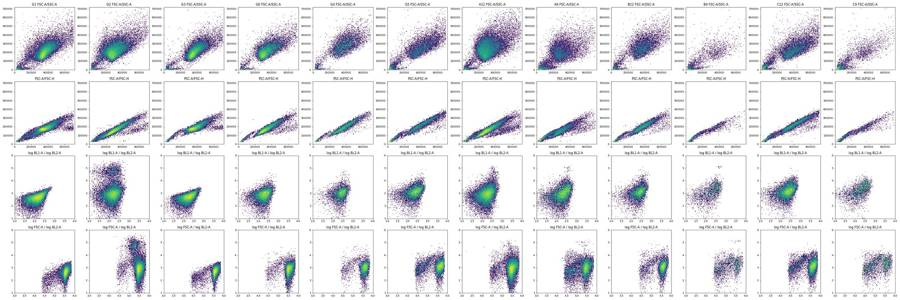
14
tool call · Bash
cd /task; cat > work/p2.py <<'EOF'
import sys; sys.path.insert(0,'/task/work')
from load import *
import matplotlib; matplotlib.use('Agg'); import matplotlib.pyplot as plt
wells=['G1','G3','G2','G6','A12','A11','A10','A9','D9','B12','B9','C12','C9','F9']
fig,ax=plt.subplots(4,len(wells),figsize=(4*len(wells),16))
for j,w in enumerate(wells):
d=get(w)
c=d[(d['FSC-A']>100000)&(d['SSC-A']>50000)]
x=c['BL1-A']; y=np.arcsinh(c['BL2-A']/300)
ax[0,j].hist2d(x,y,bins=120,range=[[0,850],[-3,8]],norm=matplotlib.colors.LogNorm()); ax[0,j].set_title(w+' cells: BL1-A lin / asinh BL2-A')
ax[1,j].hist2d(c['FSC-A'],x,bins=120,range=[[0,720000],[0,850]],norm=matplotlib.colors.LogNorm()); ax[1,j].set_title('FSC-A / BL1-A')
ax[2,j].hist2d(c['FSC-A'],y,bins=120,range=[[0,720000],[-3,8]],norm=matplotlib.colors.LogNorm()); ax[2,j].set_title('FSC-A / asinh BL2-A')
ax[3,j].hist(d['Time'],bins=60); ax[3,j].set_title('time')
plt.tight_layout(); plt.savefig('/task/work/p2.png',dpi=50)
EOF
python3 work/p2.py15
tool call · Read
{
"file_path": "/task/work/p2.png"
}16
tool output
(Bash completed with no output)
17
tool output
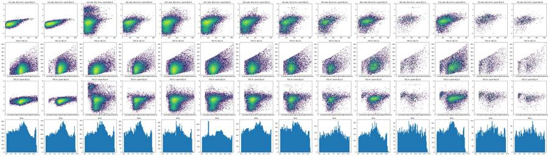
19
thinking
The caspase detector (BL1 at 225 V) looks like noise in every well, even the 10 µM camptothecin ones, so I'm checking that against the stain controls before building the gating.
20
tool call · Bash
cd /task; cat > work/p3.py <<'EOF'
import sys; sys.path.insert(0,'/task/work')
from load import *
pd.set_option('display.width',250); pd.set_option('display.max_rows',200)
rows=[]
for _,r in lay.iterrows():
d=get(r.well)
c=d[(d['FSC-A']>150000)&(d['SSC-A']>60000)&(d['FSC-A']<690000)]
ratio=c['BL1-A']/c['FSC-A']*1e3
# time uniformity
h,_=np.histogram(d['Time'],bins=np.arange(0,17,1))
rows.append(dict(well=r.well,samp=r['sample'],cm=r.conditioned_media[:4],n=len(d),ncell=len(c),pcell=100*len(c)/len(d),
bl1_med=c['BL1-A'].median(),bl1_p95=c['BL1-A'].quantile(.95),bl1H_med=c['BL1-H'].median(),bl1H_p99=c['BL1-H'].quantile(.99),
r_med=ratio.median(),r_p95=ratio.quantile(.95),
bl2_med=c['BL2-A'].median(),bl2_p95=c['BL2-A'].quantile(.95),pBL2hi=100*(c['BL2-A']>10000).mean(),pBL2mid=100*((c['BL2-A']>4000)).mean(),
tmin_rate=h.min(),tmax_rate=h.max(),fscmed=c['FSC-A'].median()))
df=pd.DataFrame(rows).round(2); print(df.to_string()); df.to_csv('work/p3.csv',index=False)
EOF
python3 work/p3.py21
tool output
well samp cm n ncell pcell bl1_med bl1_p95 bl1H_med bl1H_p99 r_med r_p95 bl2_med bl2_p95 pBL2hi pBL2mid tmin_rate tmax_rate fscmed 0 A1 WT 10uM 24hr 30920 20602 66.63 187.0 441.00 136.0 360.99 0.61 1.46 600.0 4060.90 1.50 5.15 1427 2427 289423.5 1 A2 WT 5uM 24hr 31266 19982 63.91 181.0 423.00 135.0 350.00 0.62 1.47 505.0 3454.95 1.39 3.95 1146 2547 284187.0 2 A3 WT 2uM 24hr 38748 21765 56.17 180.0 428.00 135.0 352.00 0.61 1.42 511.0 3294.20 0.97 3.54 1912 2877 286744.0 3 A4 WT DMSO 24hr 34861 32390 92.91 162.0 368.00 125.0 306.00 0.54 1.28 398.0 2717.55 1.15 2.95 1486 3012 289659.0 4 A5 WT 10uM 48hr 14011 9272 66.18 200.0 444.00 144.0 365.29 0.66 1.59 643.0 5680.40 2.76 7.71 657 1138 292257.5 5 A6 WT 5uM 48hr 25118 16587 66.04 180.0 424.00 134.0 353.00 0.62 1.46 571.0 4067.80 1.27 5.13 1162 1973 283316.0 6 A7 WT 2uM 48hr 27544 16960 61.57 182.0 425.00 135.0 354.41 0.62 1.44 566.0 3724.05 1.00 4.43 1382 1968 284278.5 7 A8 WT DMSO 48hr 30067 27615 91.84 164.0 374.00 128.0 308.00 0.54 1.26 457.0 2797.00 0.92 3.07 1379 2630 293177.0 8 A9 WT 10uM No c 17224 10868 63.10 218.0 458.00 154.0 377.33 0.71 1.55 715.5 4418.65 0.80 6.42 760 1308 294178.0 9 A10 WT 5uM No c 24604 16939 68.85 194.0 436.00 141.0 363.00 0.65 1.47 671.0 4202.10 1.09 5.57 1128 1877 290406.0 10 A11 WT 2uM No c 38346 24525 63.96 188.0 429.00 138.0 357.00 0.62 1.40 623.0 3843.60 0.83 4.63 1790 3336 292338.0 11 A12 WT DMSO No c 31708 29245 92.23 166.0 379.00 127.0 306.56 0.53 1.23 578.0 3827.60 1.28 4.68 1478 2547 297091.0 12 B1 E1 10uM 24hr 9849 3997 40.58 289.0 540.00 202.0 429.08 0.78 1.60 767.0 1630.00 0.03 0.05 488 690 374639.0 13 B2 E1 5uM 24hr 10963 4665 42.55 266.0 500.80 182.0 405.00 0.75 1.56 1037.0 5013.60 0.71 8.06 546 783 349511.0 14 B3 E1 2uM 24hr 14921 6128 41.07 261.0 507.00 178.0 415.73 0.69 1.41 1061.0 4034.25 0.24 5.17 779 1053 371726.5 15 B4 E1 DMSO 24hr 12172 10078 82.80 245.0 472.15 168.0 383.23 0.61 1.24 968.0 3664.15 0.57 4.35 554 1034 400784.5 16 B5 E1 10uM 48hr 5068 2151 42.44 278.0 506.00 194.0 396.50 0.88 1.83 1256.0 7658.00 2.88 16.88 252 370 326258.0 17 B6 E1 5uM 48hr 9638 5122 53.14 251.0 476.00 173.0 391.00 0.74 1.59 1027.0 5388.75 1.21 8.67 475 716 332819.5 18 B7 E1 2uM 48hr 13360 6125 45.85 251.0 473.00 170.0 378.00 0.73 1.53 1039.0 5160.80 0.90 8.16 686 1010 339774.0 19 B8 E1 DMSO 48hr 11210 8644 77.11 238.0 456.00 165.0 350.57 0.64 1.39 1088.0 6174.20 1.78 9.81 529 917 362768.0 20 B9 E1 10uM No c 3505 1342 38.29 317.0 531.00 219.0 427.36 0.97 1.83 1913.0 8606.05 3.80 23.32 178 257 345335.5 21 B10 E1 5uM No c 8268 3879 46.92 277.0 516.00 182.0 408.00 0.75 1.53 1240.0 5691.80 1.16 11.19 433 652 363741.0 22 B11 E1 2uM No c 10609 4914 46.32 264.0 504.35 181.0 409.00 0.71 1.50 1156.5 5441.55 0.85 9.38 543 787 366162.0 23 B12 E1 DMSO No c 9382 7725 82.34 256.0 498.00 173.0 392.76 0.66 1.32 1094.0 4957.80 1.40 6.80 372 815 381673.0 24 C1 E3 10uM 24hr 7495 3489 46.55 275.0 535.00 183.0 415.00 0.78 1.67 1552.0 7202.20 1.32 16.37 320 590 347386.0 25 C2 E3 5uM 24hr 10263 5545 54.03 248.0 512.00 168.0 407.00 0.67 1.45 1174.0 6570.00 1.68 11.15 506 815 360635.0 26 C3 E3 2uM 24hr 8563 4872 56.90 246.0 509.45 169.0 416.00 0.65 1.36 1299.5 6456.65 1.79 11.90 252 780 370980.0 27 C4 E3 DMSO 24hr 9241 5823 63.01 250.0 515.00 168.0 399.00 0.62 1.44 1387.0 8869.90 3.93 15.83 391 726 395412.0 28 C5 E3 10uM 48hr 3151 1215 38.56 292.0 530.60 202.0 431.16 0.91 1.97 2292.0 10522.60 6.09 32.84 152 249 325680.0 29 C6 E3 5uM 48hr 6099 2911 47.73 263.0 519.00 175.0 406.00 0.72 1.64 1474.0 7858.00 2.58 16.08 276 481 357094.0 30 C7 E3 2uM 48hr 8001 4256 53.19 261.0 532.00 177.0 418.45 0.67 1.53 1408.0 7025.00 1.97 13.18 378 650 383900.5 31 C8 E3 DMSO 48hr 8215 5629 68.52 245.0 510.00 167.0 403.72 0.60 1.42 1398.0 8878.60 3.96 … [8,456 more characters not shown]
23
tool call · Bash
cd /task; cat > work/p4.py <<'EOF'
import sys; sys.path.insert(0,'/task/work')
from load import *
import matplotlib; matplotlib.use('Agg'); import matplotlib.pyplot as plt
def cells(w):
d=get(w); return d[(d['FSC-A']>150000)&(d['SSC-A']>60000)&(d['FSC-A']<690000)]
groups={'WT ctrl':['G1','G3','G2','G6'],'WT DMSO':['A4','A8','A12','D4','D8','D12'],'WT 10uM':['A1','A5','A9','D1','D5','D9'],
'E1 DMSO':['B4','B8','B12','E4','E8','E12','G4'],'E1 10uM':['B1','B5','B9','E1','E5','E9'],'E3 DMSO':['C4','C8','C12','F4','F8','F12','G5'],'E3 10uM':['C1','C5','C9','F1','F5','F9']}
fig,ax=plt.subplots(3,len(groups),figsize=(5*len(groups),13))
for j,(g,ws) in enumerate(groups.items()):
for w in ws:
c=cells(w)
ax[0,j].hist(np.arcsinh(c['BL2-A']/300),bins=120,range=(-3,8),histtype='step',density=True,label=w)
ax[1,j].hist(c['BL1-H'],bins=100,range=(0,600),histtype='step',density=True,label=w)
ax[2,j].hist(c['BL1-A'],bins=100,range=(0,850),histtype='step',density=True,label=w)
ax[0,j].set_yscale('log'); ax[0,j].set_title(g+' asinh(BL2-A/300)'); ax[0,j].legend(fontsize=7)
for v in [2000,4000,10000,30000]: ax[0,j].axvline(np.arcsinh(v/300),color='k',lw=.5)
ax[1,j].set_title('BL1-H'); ax[1,j].set_yscale('log'); ax[2,j].set_title('BL1-A'); ax[2,j].set_yscale('log')
plt.tight_layout(); plt.savefig('/task/work/p4.png',dpi=55)
EOF
python3 work/p4.py24
tool call · Read
{
"file_path": "/task/work/p4.png"
}25
tool output
(Bash completed with no output)
26
tool output
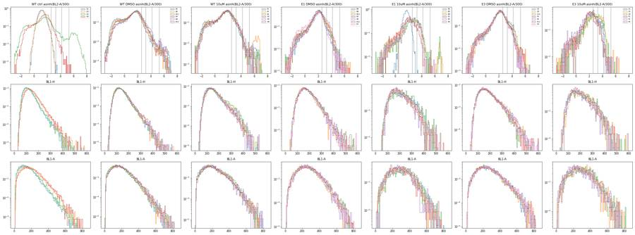
28
tool call · Bash
cd /task; cat > work/p5.py <<'EOF'
import sys; sys.path.insert(0,'/task/work')
from load import *
import matplotlib; matplotlib.use('Agg'); import matplotlib.pyplot as plt
fig,ax=plt.subplots(7,12,figsize=(36,21))
rows='ABCDEFG'
out=[]
for _,r in lay.iterrows():
d=get(r.well); i=rows.index(r.well[0]); j=int(r.well[1:])-1
a=ax[i,j]
h,e=np.histogram(d['Time'],bins=np.arange(0,17.01,0.5))
a.bar(e[:-1],h,width=0.5,align='edge'); a.set_title(f"{r.well} {r['sample']} n={len(d)}",fontsize=9)
a2=a.twinx();
# running median of FSC-A and BL2-A
o=np.argsort(d['Time'].values); t=d['Time'].values[o]
k=max(50,len(d)//40)
for col,c in [('FSC-A','r'),('SSC-A','g')]:
v=pd.Series(d[col].values[o]).rolling(k,center=True).median(); a2.plot(t,v,c,lw=.8)
a2.set_ylim(0,500000)
med=np.median(h[1:-2]); out.append((r.well,len(d),h.min(),med,h[:3].tolist(),h[-4:].tolist(), round(np.percentile(d['BL2-A'],1)), round(100*(d['BL2-A']>10000).mean(),2), round(100*(d['BL2-A']<-200).mean(),2)))
for j in range(6,12): ax[6,j].axis('off')
plt.tight_layout(); plt.savefig('/task/work/p5.png',dpi=45)
for o in out: print(*o)
EOF
python3 work/p5.py29
tool call · Read
{
"file_path": "/task/work/p5.png"
}30
tool output
A1 30920 294 913.0 [703, 860, 850] [770, 652, 597, 294] -1169 1.49 17.65 A2 31266 20 985.0 [856, 926, 939] [575, 570, 361, 20] -1127 1.41 18.02 A3 38748 555 1159.0 [937, 1056, 1104] [934, 976, 919, 555] -1045 0.93 17.72 A4 34861 456 995.0 [727, 801, 874] [782, 702, 752, 456] -1226 1.22 19.53 A5 14011 14 426.0 [371, 398, 402] [322, 351, 247, 14] -1218 2.55 15.0 A6 25118 322 728.0 [551, 611, 715] [640, 576, 639, 322] -986 1.27 15.15 A7 27544 0 850.0 [752, 779, 756] [986, 959, 412, 0] -955 1.02 15.7 A8 30067 0 892.0 [826, 823, 926] [790, 700, 0, 0] -1164 1.05 16.75 A9 17224 1 529.0 [489, 538, 544] [446, 471, 192, 1] -1224 1.09 15.28 A10 24604 196 717.0 [582, 647, 708] [558, 569, 703, 196] -983 1.13 13.55 A11 38346 0 1122.0 [986, 1012, 1013] [837, 951, 718, 0] -968 0.83 14.83 A12 31708 2 957.0 [844, 942, 997] [957, 956, 112, 2] -1158 1.42 13.81 B1 9849 168 290.0 [257, 284, 246] [270, 263, 289, 168] -117 0.01 0.03 B2 10963 27 345.0 [316, 345, 346] [308, 355, 146, 27] -746 0.75 10.96 B3 14921 43 455.0 [420, 417, 414] [451, 448, 218, 43] -551 0.2 8.14 B4 12172 3 369.0 [293, 328, 336] [358, 406, 83, 3] -584 0.68 4.73 B5 5068 4 155.0 [144, 143, 147] [156, 150, 25, 4] -723 1.8 9.19 B6 9638 23 298.0 [241, 243, 288] [266, 323, 117, 23] -727 1.08 8.94 B7 13360 23 413.0 [354, 393, 359] [413, 383, 127, 23] -717 0.85 10.36 B8 11210 6 336.0 [256, 297, 307] [366, 273, 35, 6] -912 1.94 7.1 B9 3505 8 106.0 [102, 84, 117] [102, 96, 35, 8] -837 2.51 9.73 B10 8268 2 252.0 [242, 252, 234] [279, 157, 37, 2] -764 1.09 9.75 B11 10609 134 315.0 [279, 269, 290] [267, 275, 315, 134] -720 0.79 9.22 B12 9382 0 286.0 [229, 256, 276] [292, 79, 9, 0] -778 1.75 5.93 C1 7495 0 234.0 [221, 192, 237] [221, 97, 21, 0] -755 1.05 7.03 C2 10263 7 318.0 [249, 303, 295] [366, 188, 31, 7] -826 1.46 8.15 C3 8563 0 265.0 [219, 247, 265] [202, 50, 8, 0] -714 1.68 6.34 C4 9241 136 269.0 [180, 211, 203] [212, 254, 282, 136] -735 3.22 4.71 C5 3151 0 101.0 [77, 75, 85] [109, 65, 0, 0] -686 3.3 4.73 C6 6099 0 189.0 [155, 184, 184] [225, 51, 14, 0] -609 1.77 5.2 C7 8001 0 251.0 [204, 251, 208] [256, 149, 0, 0] -523 1.37 4.74 C8 8215 0 254.0 [199, 217, 205] [231, 18, 1, 0] -647 3.47 3.7 C9 4067 37 123.0 [110, 84, 125] [107, 123, 131, 37] -786 3.2 6.22 C10 8011 0 256.0 [217, 212, 202] [114, 26, 2, 0] -744 2.17 6.17 C11 9008 0 271.0 [245, 271, 256] [301, 149, 0, 0] -579 0.78 5.11 C12 13163 3 405.0 [351, 384, 387] [435, 85, 9, 3] -651 2.07 4.31 D1 22778 1 714.0 [513, 568, 592] [645, 121, 33, 1] -1054 0.65 12.89 D2 27593 108 820.0 [548, 603, 722] [674, 743, 720, 108] -966 0.46 14.2 D3 27824 243 816.0 [646, 742, 754] [722, 817, 867, 243] -885 0.74 12.7 D4 24551 0 731.0 [406, 534, 525] [692, 871, 269, 0] -990 1.36 13.28 D5 6454 0 201.0 [143, 162, 157] [152, 27, 6, 0] -982 1.29 10.61 D6 17066 0 537.0 [446, 459, 484] [332, 84, 12, 0] -889 0.77 11.36 D7 23253 0 751.0 [596, 669, 698] [491, 104, 15, 0] -775 1.02 10.14 D8 23299 25 673.0 [453, 494, 558] [629, 800, 486, 25] -947 2.09 9.5 D9 8616 0 263.0 [228, 248, 233] [201, 163, 0, 0] -1131 1.11 11.18 D10 19657 0 589.0 [519, 565, 541] [491, 419, 0, 0] -818 0.66 9.6 D11 31867 339 916.0 [834, 829, 838] [820, 747, 809, 339] -807 0.43 10.66 D12 25256 82 744.0 [600, 659, 661] [577, 744, 782, 82] -972 1.22 9.97 E1 9821 150 288.0 [244, 276, 284] [265, 274, 289, 150] -762 0.21 10.02 E2 10681 69 320.0 [271, 297, 302] [289, 311, 305, 69] -670 0.46 8.66 E3 12311 39 374.0 [317, 346, 365] [322, 375, 307, 39] -720 0.57 9.36 E4 10059 170 284.0 [200, 210, 222] [230, 272, 250, 170] -657 1.25 5.17 E5 4437 33 135.0 [100, 136, 144] [118, 108, 134, 33] -676 0.61 8.11 E6 7547 9 226.0 [213, 199, 219] [245, 230, 143, 9] -722 0.73 8.57 E7 12028 0 362.0 [303, 362, 323] [363, 318, 0, 0] -718 0.49 8.75 E8 7979 4 238.0 [209, 226, 218] [219, 257, 79, 4] -720 1.62 5.28 E9 4147 1 128.0 [130, 151, 146] [128, 140, 53, 1] -821 0.87 9.21 E10 5492 0 171.0 [0, 15, 109] [169, 201, 133, 3] -764 0.69 6.65 E11 11711 0 358.0 [307, 332, 337] [282, 278, 0, 0] -682 0.48 9.58 E12 10755 0 333.0 [275, 332, 330] [279, 211, 0, 0] -593 0.61 4.87 F1 6393 96 186.0 [162, 145, 184] [143, 161, 200, 96] -626 0.5 5.74 F2 9910 12 307.0 [206, 238, 266] [317, 345, 88, 12] -620 0.79 5.04 F3 9940 0 291.0 [216, 257, 291] [305, 246, 0, 0] -576 0.7 4.51 F4 10729 0 325.0 [276, 276, 315] [305, 32, 7, 0] -646 1.79 4.09 F5 3184 0 100.0 [80, 81, 77] [111, 55, 19, 0] -652 0.5 5.65 F6 6320 124 180.0 [148, 143, 166] [152, 180, 205, 124] -536 1.14 3.61 F7 9381 114 274.0 [230, 249, 253] [219, 255, 301, 114] -525 0.64 3.76 F8 10605 2 317.0 [295, 287, 315] [354, 162, 24, 2] -526 1.23 3.34 F9 3608 0 115.0 [90, 128, 104] [115, 53, 0, 0] -660 0.39 5.04 F10 8439 87 246.0 [202, 279, 257] [213, 233, 245, 87] -511 0.51 4.5 F11 12193 104 355.0 [322, 316, 377] [298, 355, 360, 104] -531 0.36 3.86 F12 11679 0 363.0 [346, 337, 350] [78, 19, 3, 0] -677 1.22 4.36 G1 34073 63 1001.0 [873, 919, 925] [757, 1062, 978, 63] -51 0.0 0.02 G2 28006 0 840.0 [628, 696, 805] [1011, 368, 0, 0] -1169 9.48 13.58 G3 27095 53 778.0 [635, 667, 669] [719, 792, 811, 53] -57 0.0 0.05 G4 7482 0 227.0 [170, 184, 198] [294, 136, 0, 0] -806 0.72 7.23 G5 11594 14 323.0 [282, 279, 311] [327, 380, 201, 14] -642 1.1 4.57 G6 16054 0 504.0 [451, 454, 463] [389, 17, 2, 0] -685 0.24 8.37
31
tool output
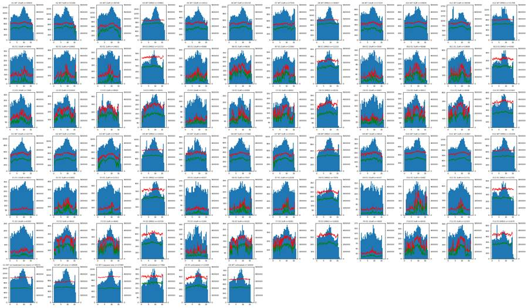
33
thinking
Event rates look clean across all 78 wells, but B1 seems to have missed the dead-cell stain. I'm checking E10 and A11 and whether the caspase channel has real signal before fixing the gates.
34
tool call · Bash
cd /task; cat > work/p6.py <<'EOF'
import sys; sys.path.insert(0,'/task/work')
from load import *
def cells(w):
d=get(w); return d[(d['FSC-A']>150000)&(d['SSC-A']>60000)&(d['FSC-A']<690000)]
print('BL1 in BL2-bright (>20000) vs BL2-neg (<2500) vs mid (4000-20000) cells')
for w in ['G2','G6','A4','A8','A12','A1','A5','A9','D5','D9','B8','B5','B9','C4','C8','C5','C9','E9','F9']:
c=cells(w); hi=c[c['BL2-A']>20000]; lo=c[c['BL2-A']<2500]; mid=c[(c['BL2-A']>4000)&(c['BL2-A']<20000)]
f=lambda x: (len(x), round(x['BL1-A'].median(),0), round(x['BL1-H'].median(),0), round(x['FSC-A'].median()/1000), round(x['BL2-A'].median()))
print(w,'hi',f(hi),'mid',f(mid),'lo',f(lo))
# correlation BL1-A with FSC-A, FSC-W, and regression
for w in ['G1','G3','G6','A12','A9','B12','B9']:
c=cells(w)
print(w, 'corr BL1A~FSCA',round(np.corrcoef(c['BL1-A'],c['FSC-A'])[0,1],2),'BL1H~FSCA',round(np.corrcoef(c['BL1-H'],c['FSC-A'])[0,1],2),'BL1H~FSCH',round(np.corrcoef(c['BL1-H'],c['FSC-H'])[0,1],2),'BL1A~BL2A(lo)',round(np.corrcoef(c['BL1-A'][c['BL2-A']<3000],c['BL2-A'][c['BL2-A']<3000])[0,1],2), 'BL1A~SSCA',round(np.corrcoef(c['BL1-A'],c['SSC-A'])[0,1],2))
# debris events BL1
for w in ['G1','A12','A9','B12','B9']:
d=get(w); deb=d[(d['FSC-A']<100000)]
print(w,'debris n',len(deb),'BL1A med',deb['BL1-A'].median(),'BL1H med',deb['BL1-H'].median(),'BL2 med',deb['BL2-A'].median(), 'BL2 p95',deb['BL2-A'].quantile(.95))
for w in ['E10','E6','E2','B10','A11']:
d=get(w); print(w, d[['Time','FSC-A','SSC-A','BL1-A','BL2-A']].describe().loc[['min','25%','50%','75%','max']].round(0).to_string())
h,e=np.histogram(d['Time'],bins=np.arange(0,17.01,0.25)); print(h.tolist())
EOF
python3 work/p6.py35
tool output
BL1 in BL2-bright (>20000) vs BL2-neg (<2500) vs mid (4000-20000) cells G2 hi (1585, 155.0, 118.0, 205, 57962) mid (1375, 176.0, 128.0, 282, 6684) lo (21968, 142.0, 115.0, 303, 451) G6 hi (6, 498.0, 189.0, 483, 23478) mid (222, 343.0, 192.0, 364, 5318) lo (14476, 179.0, 132.0, 331, 565) A4 hi (243, 350.0, 229.0, 251, 48387) mid (712, 260.0, 170.0, 271, 5860) lo (30561, 159.0, 124.0, 290, 345) A8 hi (143, 346.0, 241.0, 251, 39770) mid (704, 292.0, 183.0, 272, 6054) lo (25994, 159.0, 126.0, 293, 402) A12 hi (167, 377.0, 219.0, 281, 34942) mid (1203, 280.0, 170.0, 329, 5798) lo (26538, 159.0, 124.0, 295, 489) A1 hi (191, 373.0, 242.0, 232, 53767) mid (871, 330.0, 202.0, 306, 5589) lo (18402, 177.0, 131.0, 287, 486) A5 hi (198, 400.0, 230.0, 273, 74365) mid (517, 350.0, 244.0, 248, 5721) lo (8077, 184.0, 138.0, 293, 509) A9 hi (41, 360.0, 250.0, 254, 61825) mid (657, 369.0, 239.0, 315, 5174) lo (9344, 201.0, 146.0, 291, 551) D5 hi (20, 386.0, 254.0, 322, 43107) mid (302, 349.0, 227.0, 280, 5983) lo (3875, 193.0, 142.0, 295, 555) D9 hi (37, 380.0, 238.0, 270, 32939) mid (375, 360.0, 211.0, 324, 5677) lo (4879, 193.0, 141.0, 295, 648) B8 hi (37, 430.0, 263.0, 307, 31503) mid (811, 331.0, 219.0, 321, 6089) lo (7052, 224.0, 158.0, 363, 868) B5 hi (34, 424.0, 230.0, 278, 121845) mid (329, 357.0, 258.0, 210, 5723) lo (1534, 253.0, 176.0, 338, 885) B9 hi (22, 450.0, 286.0, 389, 125645) mid (291, 379.0, 259.0, 259, 5787) lo (803, 280.0, 193.0, 358, 1073) C4 hi (49, 413.0, 247.0, 374, 33477) mid (873, 332.0, 212.0, 360, 6636) lo (4238, 221.0, 156.0, 392, 986) C8 hi (52, 438.0, 248.0, 433, 31792) mid (881, 326.0, 215.0, 363, 6576) lo (4042, 217.0, 154.0, 396, 982) C5 hi (7, 441.0, 313.0, 390, 42329) mid (392, 350.0, 246.0, 227, 6736) lo (653, 243.0, 164.0, 361, 1077) C9 hi (8, 334.0, 230.0, 206, 20915) mid (466, 383.0, 260.0, 314, 6168) lo (937, 236.0, 168.0, 365, 1144) E9 hi (3, 453.0, 245.0, 376, 32689) mid (230, 346.0, 244.0, 225, 5700) lo (698, 248.0, 177.0, 362, 1028) F9 hi (3, 376.0, 312.0, 375, 31153) mid (108, 366.0, 256.0, 260, 5604) lo (842, 264.0, 186.0, 365, 1085) G1 corr BL1A~FSCA 0.36 BL1H~FSCA 0.31 BL1H~FSCH 0.27 BL1A~BL2A(lo) 0.63 BL1A~SSCA 0.51 G3 corr BL1A~FSCA 0.35 BL1H~FSCA 0.3 BL1H~FSCH 0.25 BL1A~BL2A(lo) 0.61 BL1A~SSCA 0.5 G6 corr BL1A~FSCA 0.41 BL1H~FSCA 0.35 BL1H~FSCH 0.32 BL1A~BL2A(lo) 0.36 BL1A~SSCA 0.54 A12 corr BL1A~FSCA 0.36 BL1H~FSCA 0.27 BL1H~FSCH 0.24 BL1A~BL2A(lo) 0.27 BL1A~SSCA 0.46 A9 corr BL1A~FSCA 0.32 BL1H~FSCA 0.15 BL1H~FSCH 0.23 BL1A~BL2A(lo) 0.38 BL1A~SSCA 0.27 B12 corr BL1A~FSCA 0.39 BL1H~FSCA 0.3 BL1H~FSCH 0.3 BL1A~BL2A(lo) 0.34 BL1A~SSCA 0.54 B9 corr BL1A~FSCA 0.36 BL1H~FSCA 0.15 BL1H~FSCH 0.16 BL1A~BL2A(lo) 0.26 BL1A~SSCA 0.35 G1 debris n 1597 BL1A med 49.0 BL1H med 70.0 BL2 med 54.0 BL2 p95 429.1999999999998 A12 debris n 1868 BL1A med 83.0 BL1H med 90.0 BL2 med 307.0 BL2 p95 4950.399999999998 A9 debris n 4942 BL1A med 81.0 BL1H med 87.0 BL2 med 233.0 BL2 p95 4173.0499999999965 B12 debris n 1297 BL1A med 81.0 BL1H med 86.0 BL2 med 482.0 BL2 p95 6101.400000000005 B9 debris n 1700 BL1A med 78.0 BL1H med 85.0 BL2 med 364.0 BL2 p95 3825.1499999999987 E10 Time FSC-A SSC-A BL1-A BL2-A min 1.0 7335.0 -65536.0 4.0 -13389.0 25% 5.0 44648.0 5958.0 100.0 353.0 50% 9.0 118626.0 47180.0 181.0 1017.0 75% 12.0 429242.0 222999.0 288.0 2161.0 max 17.0 703953.0 1048575.0 796.0 113632.0 [0, 0, 15, 0, 26, 83, 67, 81, 76, 73, 70, 84, 87, 74, 99, 85, 84, 83, 77, 75, 80, 83, 83, 86, 87, 84, 103, 99, 87, 93, 102, 116, 100, 109, 127, 110, 103, 117, 122, 110, 101, 105, 90, 83, 103, 110, 95, 87, 92, 78, 98, 75, 90, 89, 69, 80, 71, 67, 66, 97, 78, 91, 98, 103, 89, 44, 3, 0] E6 Time FSC-A SSC-A BL1-A BL2-A min 0.0 9807.0 -19698.0 4.0 -6915.0 25% 4.0 43636.0 5370.0 92.0 182.0 50% 8.0 107084.0 42869.0 174.0 683.0 75% 12.0 313764.0 233850.0 277.0 1530.0 max 17.0 700406.0 1048575.0 780.0 70257.0 [106, 107, 99, 100, 95, 124, 115, 104, 126, 111, 109, 107, 112, 100, 133, 104, 103, 110, 132, 101, 104, 112, 118, 108, 120, 106, 104, 121, 104, 141, 128, 128, 133, 158, 142, 136, 116, 119, 137, 156, 126, 128, 108, 136, 164, 105, 116, 132, 112, 102, 108, 103, 105, 91, 112, 90, 85, 107, 101, 100, 109, 136, 116, 114, 105, 38, 9, 0] E2 Time FSC-A SSC-A BL1-A BL2-A min 0.0 16500.0 -5454.0 4.0 -3484.0 25% 4.0 46299.0 4980.0 93.0 161.0 50% 8.0 117173.0 38048.0 172.0 601.0 75% 12.0 330997.0 219709.0 272.0 1256.0 max 17.0 705822.0 707244.0 799.0 57288.0 [136, 135, 152, 145, 160, 142, 154, 171, 141, 150, 163, 156, 170, 153, 183, 158, 163, 163, 157, 133, 151, 155, 170, 161, 160, 170, 170, 150, 146, 184, 175, 192, 171, 159, 190, 182, 199, 202, 208, 190, 184, 203, 187, 201, 175, 148, 149, 151, 166, 129, 145, 171, 145, 143, 129, 149, 120, 148, 155, 139, 143, 146, 161, 150, 157, 148, 67, 2] B10 Time FSC-A SSC-A BL1-A BL2-A min 0.0 20079.0 -17844.0 4.0 -7243.0 25% 4.0 51214.0 6442.0 83.0 153.0 50% 8.0 150166.0 83514.0 168.0 697.0 75% 11.0 357894.0 219631.0 284.0 1624.0 max 17.0 704971.0 816790.0 766.0 67210.0 [116, 126, 127, 125, 111, 123, 110, 146, 132, 110, 130, 117, 119, 124, 134, 135, 112, 130, 137, 125, 117, 115, 140, 106, 144, 141, 145, 148, 143, 146, 156, 138, 149, 167, 166, 170, 160, 155, 166, 160, 132, 156, 139, 137, 129, 121, 125, 111, 101, 131, 111, 93, 111, 109, 112, 101, 105, 95, 108, 145, 132, 147, 112, 45, 28, 9, 2, 0] A11 Time FSC-A SSC-A BL1-A BL2-A min 0.0 13114.0 -50182.0 4.0 -16080.0 25% 4.0 76328.0 11856.0 91.0 12.0 50% 8.0 241298.0 179418.0 156.0 439.0 75% 12.0 314570.0 252360.0 240.0 1065.0 max 16.0 708280.0 1048575.0 810.0 126939.0 [454, 532, 478, 534, 539, 474, 556, 550, 540, 557, 584, 550, 642, 959, 1052, 683, 542, 530, 530, 538, 568, 566, 575, 577, 555, 527, 552, 529, 571, 594, 70 … [183 more characters not shown]
37
tool call · Bash
cd /task; cat > work/p7.py <<'EOF'
import sys; sys.path.insert(0,'/task/work')
from load import *
import matplotlib; matplotlib.use('Agg'); import matplotlib.pyplot as plt
from matplotlib.colors import LogNorm
pool={'WT DMSO':['A4','A8','A12','D4','D8','D12'],'WT CPT10':['A1','A5','A9','D1','D5','D9'],'E1 DMSO':['B4','B8','B12','E4','E8','E12'],'E1 CPT10':['B5','B9','E1','E5','E9'],
'E3 DMSO':['C4','C8','C12','F4','F8','F12'],'E3 CPT10':['C1','C5','C9','F1','F5','F9'],'G1':['G1'],'G2':['G2'],'G3':['G3'],'G6':['G6']}
fig,ax=plt.subplots(4,len(pool),figsize=(5*len(pool),20))
bins=[-1e5,0,500,1000,1500,2000,2500,3000,4000,5000,6500,8000,10000,15000,20000,30000,50000,1e6]
for j,(g,ws) in enumerate(pool.items()):
d=pd.concat([get(w) for w in ws])
ax[0,j].hist2d(d['FSC-A'],d['SSC-A'],bins=200,range=[[0,720000],[0,720000]],norm=LogNorm()); ax[0,j].set_title(g+' FSC-A/SSC-A')
ax[1,j].hist2d(np.log10(d['FSC-A'].clip(1000)),np.log10(d['SSC-A'].clip(100)),bins=200,range=[[4,6],[2.5,6.1]],norm=LogNorm()); ax[1,j].set_title('log FSC-A/ log SSC-A')
c=d[(d['FSC-A']>150000)&(d['SSC-A']>60000)&(d['FSC-A']<690000)]
ax[2,j].hist2d(c['FSC-A'],c['FSC-H'],bins=200,range=[[0,720000],[0,450000]],norm=LogNorm()); ax[2,j].set_title('cells FSC-A/FSC-H')
for s in [0.36,0.40,0.44]: ax[2,j].plot([0,720000],[0,720000*s],'r',lw=.5)
ax[3,j].hist(c['FSC-H']/c['FSC-A'],bins=150,range=(0.2,0.9)); ax[3,j].set_title('H/A'); ax[3,j].set_yscale('log')
c2=c.copy(); c2['b']=pd.cut(c2['BL2-A'],bins)
print(g); print(c2.groupby('b',observed=True).agg(n=('BL1-A','size'),bl1A=('BL1-A','median'),bl1H=('BL1-H','median'),fsc=('FSC-A','median'),ssc=('SSC-A','median')).round(0).to_string())
plt.tight_layout(); plt.savefig('/task/work/p7.png',dpi=45)
EOF
python3 work/p7.py38
tool call · Read
{
"file_path": "/task/work/p7.png"
}39
tool output
WT DMSO
n bl1A bl1H fsc ssc
b
(-100000.0, 0.0] 34666 144.0 118.0 277234.0 222738.0
(0.0, 500.0] 39254 152.0 122.0 290318.0 218048.0
(500.0, 1000.0] 35213 167.0 129.0 304554.0 228226.0
(1000.0, 1500.0] 19909 192.0 140.0 324865.0 249809.0
(1500.0, 2000.0] 9529 216.0 148.0 342770.0 273927.0
(2000.0, 2500.0] 5012 237.0 155.0 354818.0 292214.0
(2500.0, 3000.0] 2973 244.0 157.0 346763.0 294003.0
(3000.0, 4000.0] 3235 250.0 161.0 336811.0 288167.0
(4000.0, 5000.0] 1752 270.0 170.0 321506.0 282714.0
(5000.0, 6500.0] 1476 277.0 172.0 313638.0 265318.0
(6500.0, 8000.0] 873 302.0 181.0 301583.0 258389.0
(8000.0, 10000.0] 663 312.0 187.0 306534.0 268810.0
(10000.0, 15000.0] 692 335.0 190.0 318476.0 278601.0
(15000.0, 20000.0] 248 341.0 188.0 310053.0 286300.0
(20000.0, 30000.0] 318 314.0 194.0 286802.0 254247.0
(30000.0, 50000.0] 393 362.0 232.0 307681.0 241238.0
(50000.0, 1000000.0] 326 368.0 247.0 230120.0 213582.0
WT CPT10
n bl1A bl1H fsc ssc
b
(-100000.0, 0.0] 12882 157.0 124.0 271984.0 209968.0
(0.0, 500.0] 14447 168.0 129.0 284453.0 204633.0
(500.0, 1000.0] 13663 185.0 138.0 296523.0 209925.0
(1000.0, 1500.0] 8675 219.0 152.0 316923.0 226864.0
(1500.0, 2000.0] 4663 265.0 170.0 342171.0 245024.0
(2000.0, 2500.0] 2802 299.0 187.0 354692.0 247526.0
(2500.0, 3000.0] 1895 318.0 195.0 362911.0 249749.0
(3000.0, 4000.0] 2228 335.0 206.0 349504.0 222010.0
(4000.0, 5000.0] 1265 345.0 225.0 325327.0 205885.0
(5000.0, 6500.0] 997 360.0 226.0 309157.0 205020.0
(6500.0, 8000.0] 491 355.0 219.0 301446.0 207262.0
(8000.0, 10000.0] 358 362.0 222.0 301032.0 217275.0
(10000.0, 15000.0] 298 360.0 210.0 307958.0 243748.0
(15000.0, 20000.0] 83 317.0 194.0 268199.0 224530.0
(20000.0, 30000.0] 96 328.0 198.0 265859.0 241673.0
(30000.0, 50000.0] 120 382.0 258.0 253378.0 201878.0
(50000.0, 1000000.0] 303 392.0 243.0 256411.0 211498.0
E1 DMSO
n bl1A bl1H fsc ssc
b
(-100000.0, 0.0] 3697 199.0 146.0 347997.0 232893.0
(0.0, 500.0] 7853 208.0 150.0 362739.0 238018.0
(500.0, 1000.0] 11430 227.0 160.0 376966.0 249723.0
(1000.0, 1500.0] 9728 252.0 173.0 391922.0 267715.0
(1500.0, 2000.0] 5788 286.0 189.0 410383.0 287852.0
(2000.0, 2500.0] 3220 313.0 202.0 421856.0 303450.0
(2500.0, 3000.0] 1957 337.0 210.0 422739.0 310460.0
(3000.0, 4000.0] 2064 330.0 211.0 403670.0 299825.0
(4000.0, 5000.0] 1152 336.0 217.0 374224.0 292680.0
(5000.0, 6500.0] 1091 348.0 223.0 351606.0 279041.0
(6500.0, 8000.0] 575 363.0 235.0 343949.0 268331.0
(8000.0, 10000.0] 407 367.0 235.0 342701.0 280449.0
(10000.0, 15000.0] 335 410.0 242.0 375264.0 303335.0
(15000.0, 20000.0] 95 438.0 249.0 440095.0 318328.0
(20000.0, 30000.0] 64 412.0 254.0 363697.0 275474.0
(30000.0, 50000.0] 43 482.0 265.0 420544.0 316163.0
(50000.0, 1000000.0] 28 400.0 278.0 265364.0 199660.0
E1 CPT10
n bl1A bl1H fsc ssc
b
(-100000.0, 0.0] 577 204.0 151.0 336688.0 204858.0
(0.0, 500.0] 1180 219.0 158.0 341372.0 206618.0
(500.0, 1000.0] 1621 243.0 168.0 346774.0 211318.0
(1000.0, 1500.0] 1394 282.0 188.0 358116.0 225730.0
(1500.0, 2000.0] 827 308.0 205.0 356217.0 228690.0
(2000.0, 2500.0] 617 348.0 231.0 353992.0 229182.0
(2500.0, 3000.0] 446 356.0 235.0 333548.0 210777.0
(3000.0, 4000.0] 625 354.0 248.0 299151.0 190142.0
(4000.0, 5000.0] 457 346.0 240.0 229052.0 181746.0
(5000.0, 6500.0] 398 350.0 254.0 211658.0 172808.0
(6500.0, 8000.0] 211 365.0 272.0 210310.0 177176.0
(8000.0, 10000.0] 112 374.0 278.0 208246.0 200028.0
(10000.0, 15000.0] 73 385.0 267.0 231548.0 212729.0
(15000.0, 20000.0] 10 447.0 252.0 395440.0 243110.0
(20000.0, 30000.0] 7 393.0 316.0 221802.0 169347.0
(30000.0, 50000.0] 6 427.0 234.0 359522.0 183463.0
(50000.0, 1000000.0] 49 434.0 247.0 312434.0 201729.0
E3 DMSO
n bl1A bl1H fsc ssc
b
(-100000.0, 0.0] 2982 174.0 132.0 351526.0 204590.0
(0.0, 500.0] 6260 187.0 140.0 360754.0 212368.0
(500.0, 1000.0] 9076 211.0 150.0 381936.0 224144.0
(1000.0, 1500.0] 8322 241.0 167.0 404716.0 247088.0
(1500.0, 2000.0] 5565 278.0 185.0 433947.0 271873.0
(2000.0, 2500.0] 3405 311.0 200.0 451769.0 293273.0
(2500.0, 3000.0] 2143 323.0 206.0 462010.0 301105.0
(3000.0, 4000.0] 2452 333.0 208.0 460935.0 305175.0
(4000.0, 5000.0] 1420 319.0 205.0 421355.0 283594.0
(5000.0, 6500.0] 1337 327.0 215.0 378181.0 257832.0
(6500.0, 8000.0] 875 343.0 223.0 320226.0 237747.0
(8000.0, 10000.0] 731 361.0 239.0 336136.0 255820.0
(10000.0, 15000.0] 669 399.0 250.0 365858.0 286188.0
(15000.0, 20000.0] 167 474.0 258.0 450018.0 338116.0
(20000.0, 30000.0] 95 443.0 248.0 420189.0 308349.0
(30000.0, 50000.0] 93 407.0 254.0 414788.0 281351.0
(50000.0, 1000000.0] 29 516.0 292.0 428569.0 331396.0
E3 CPT10
n bl1A bl1H fsc ssc
b
… [4,512 more characters not shown]40
tool output
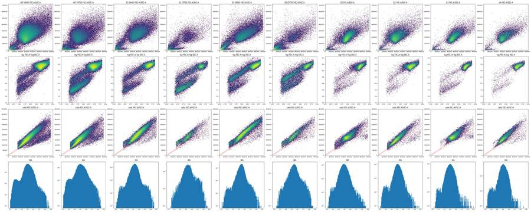
42
tool call · Bash
cd /task; cat > work/p8.py <<'EOF'
import sys; sys.path.insert(0,'/task/work')
from load import *
import matplotlib; matplotlib.use('Agg'); import matplotlib.pyplot as plt
from matplotlib.colors import LogNorm
ws=['G1','G3','A12','A9','B12','B9']
fig,ax=plt.subplots(5,len(ws),figsize=(6*len(ws),28))
for j,w in enumerate(ws):
d=get(w)
ax[0,j].hist2d(d['FSC-A'],d['BL1-A'],bins=200,range=[[0,720000],[0,850]],norm=LogNorm()); ax[0,j].set_title(w+' FSC-A / BL1-A')
ax[1,j].hist2d(d['BL1-H'],d['BL1-A'],bins=200,range=[[0,700],[0,850]],norm=LogNorm()); ax[1,j].set_title('BL1-H / BL1-A')
ax[2,j].hist2d(d['FSC-W'],d['BL1-A']/d['BL1-H'],bins=200,range=[[0,350],[0,3]],norm=LogNorm()); ax[2,j].set_title('FSC-W / (BL1-A/BL1-H)')
ax[3,j].hist(d['BL1-A']/d['FSC-A']*1000,bins=200,range=(0,3)); ax[3,j].set_title('1000*BL1-A/FSC-A')
ax[4,j].hist2d(d['FSC-H'],d['BL1-H'],bins=200,range=[[0,450000],[0,700]],norm=LogNorm()); ax[4,j].set_title('FSC-H / BL1-H')
r=d['BL1-A']/d['FSC-A']*1000
print(w, 'ratio pct',np.percentile(r,[50,90,99,99.9,100]).round(3), 'BL1A/BL1H pct', np.percentile(d['BL1-A']/d['BL1-H'],[1,50,99,100]).round(2), 'BL2A/BL2H',np.percentile(d['BL2-A']/d['BL2-H'].clip(1),[1,50,99]).round(2),'FSCA/FSCH',np.percentile(d['FSC-A']/d['FSC-H'],[1,50,99]).round(2))
print(' integer?', (d['BL1-A']%1==0).all(), 'unique BL1-A',d['BL1-A'].nunique(), 'top values', d['BL1-A'].value_counts().head(5).to_dict())
plt.tight_layout(); plt.savefig('/task/work/p8.png',dpi=45)
EOF
python3 work/p8.py43
tool call · Read
{
"file_path": "/task/work/p8.png"
}44
tool output
G1 ratio pct [0.385 0.782 1.919 3.807 6.343] BL1A/BL1H pct [0.22 1.2 2.72 4.26] BL2A/BL2H [-0.7 1.44 2.83] FSCA/FSCH [1. 2.02 3.16]
integer? True unique BL1-A 587 top values {110.0: 208, 132.0: 203, 99.0: 200, 85.0: 196, 89.0: 192}
G3 ratio pct [ 0.47 0.941 3.185 6.509 11.798] BL1A/BL1H pct [0.26 1.31 2.78 4.58] BL2A/BL2H [-0.68 1.46 2.81] FSCA/FSCH [0.99 1.98 3.09]
integer? True unique BL1-A 621 top values {124.0: 140, 148.0: 132, 128.0: 132, 156.0: 129, 150.0: 128}
A12 ratio pct [ 0.558 1.199 3.437 6.435 185.651] BL1A/BL1H pct [0.2 1.28 2.79 4.22] BL2A/BL2H [-4. 0.84 3.44] FSCA/FSCH [0.99 1.97 3.68]
integer? True unique BL1-A 640 top values {130.0: 167, 94.0: 156, 117.0: 153, 132.0: 151, 114.0: 150}
A9 ratio pct [ 0.865 2.319 5.269 8.808 11.792] BL1A/BL1H pct [0.15 1.22 2.69 3.88] BL2A/BL2H [-9.84 0.85 3.09] FSCA/FSCH [0.93 1.75 3.31]
integer? True unique BL1-A 629 top values {123.0: 74, 183.0: 73, 68.0: 71, 83.0: 70, 141.0: 69}
B12 ratio pct [0.712 1.589 4.538 8.36 9.907] BL1A/BL1H pct [0.22 1.38 2.71 3.87] BL2A/BL2H [-2.92 1.31 3.38] FSCA/FSCH [0.97 1.87 3.31]
integer? True unique BL1-A 656 top values {260.0: 41, 232.0: 40, 143.0: 38, 249.0: 37, 146.0: 36}
B9 ratio pct [ 1.147 2.845 6.355 9.643 14.39 ] BL1A/BL1H pct [0.12 1.17 2.41 3.68] BL2A/BL2H [-13.09 1.15 2.7 ] FSCA/FSCH [0.93 1.29 2.75]
integer? True unique BL1-A 560 top values {20.0: 25, 50.0: 24, 23.0: 21, 111.0: 20, 56.0: 20}45
tool output
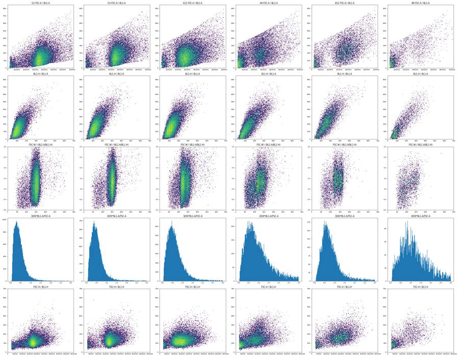
47
thinking
BL1-A shows a hard ceiling that tracks FSC-A, and treated wells bunch up against it. I'm checking whether that bunching is the clipped caspase-positive population before setting the positive gate.
48
tool call · Bash
cd /task; cat > work/p9.py <<'EOF'
import sys; sys.path.insert(0,'/task/work')
from load import *
import matplotlib; matplotlib.use('Agg'); import matplotlib.pyplot as plt
from matplotlib.colors import LogNorm
allw=pd.concat([get(w).assign(well=w) for w in lay.well])
# envelope: max BL1-A per FSC-A bin
b=np.arange(0,720001,20000); allw['fb']=pd.cut(allw['FSC-A'],b)
env=allw.groupby('fb',observed=True)['BL1-A'].agg(['max',lambda x:x.quantile(.9999),lambda x:x.quantile(.999),'size'])
print(env.to_string())
# same with BL1-H vs FSC-H
b2=np.arange(0,450001,20000); allw['hb']=pd.cut(allw['FSC-H'],b2)
print(allw.groupby('hb',observed=True)['BL1-H'].agg(['max',lambda x:x.quantile(.9999),lambda x:x.quantile(.999),'size']).to_string())
# vs SSC-A
b3=np.arange(0,1050001,50000); allw['sb']=pd.cut(allw['SSC-A'],b3)
print(allw.groupby('sb',observed=True)['BL1-A'].agg(['max',lambda x:x.quantile(.9999),'size']).to_string())
EOF
python3 work/p9.py49
tool output
max <lambda_0> <lambda_1> size
fb
(0, 20000] 324.0 323.7365 321.365 156
(20000, 40000] 335.0 334.0000 328.000 117599
(40000, 60000] 343.0 342.0000 336.000 93387
(60000, 80000] 354.0 352.0000 348.000 53259
(80000, 100000] 364.0 363.0000 359.000 34917
(100000, 120000] 374.0 373.0000 371.000 25465
(120000, 140000] 384.0 384.0000 381.000 20605
(140000, 160000] 395.0 395.0000 392.000 18923
(160000, 180000] 406.0 406.0000 404.000 20301
(180000, 200000] 418.0 417.0000 414.000 24054
(200000, 220000] 429.0 428.9263 425.000 30738
(220000, 240000] 441.0 440.0000 437.000 40711
(240000, 260000] 453.0 452.0000 448.000 54444
(260000, 280000] 467.0 465.0000 460.000 67396
(280000, 300000] 480.0 478.0000 473.000 72010
(300000, 320000] 493.0 491.0000 486.000 69403
(320000, 340000] 507.0 505.0000 500.000 65636
(340000, 360000] 521.0 520.0000 513.000 57840
(360000, 380000] 536.0 534.0402 530.000 49599
(380000, 400000] 551.0 549.0000 542.000 41374
(400000, 420000] 565.0 563.0000 559.000 34394
(420000, 440000] 582.0 580.1603 574.603 28398
(440000, 460000] 597.0 596.6698 591.000 23303
(460000, 480000] 615.0 613.0737 608.000 19264
(480000, 500000] 631.0 629.3799 625.000 16202
(500000, 520000] 650.0 648.0000 643.000 13396
(520000, 540000] 668.0 666.7684 661.842 11159
(540000, 560000] 684.0 684.0000 681.439 9562
(560000, 580000] 707.0 705.4034 699.000 7984
(580000, 600000] 725.0 724.3175 719.000 6826
(600000, 620000] 745.0 743.8410 741.000 5796
(620000, 640000] 766.0 764.0856 759.000 4787
(640000, 660000] 785.0 784.1710 779.710 4146
(660000, 680000] 806.0 806.0000 803.357 3644
(680000, 700000] 830.0 829.3804 825.804 3099
(700000, 720000] 828.0 824.8696 796.696 729
max <lambda_0> <lambda_1> size
hb
(20000, 40000] 780.0 421.7212 343.000 137597
(40000, 60000] 749.0 562.0512 352.000 99985
(60000, 80000] 707.0 415.2215 366.000 65558
(80000, 100000] 464.0 432.9943 377.000 70020
(100000, 120000] 1292.0 440.8613 393.000 91388
(120000, 140000] 953.0 469.3176 409.000 113413
(140000, 160000] 538.0 472.6411 418.000 133590
(160000, 180000] 913.0 484.7229 421.000 132772
(180000, 200000] 1009.0 499.0464 433.616 97385
(200000, 220000] 933.0 504.0380 455.000 68271
(220000, 240000] 649.0 540.3569 462.000 48188
(240000, 260000] 727.0 568.5436 496.359 33642
(260000, 280000] 652.0 569.7392 508.000 23153
(280000, 300000] 605.0 579.1315 537.665 15336
(300000, 320000] 654.0 601.1007 563.057 9982
(320000, 340000] 683.0 663.2594 589.072 5983
(340000, 360000] 656.0 650.4558 600.230 2919
(360000, 380000] 646.0 644.0772 626.472 1013
(380000, 400000] 536.0 534.6560 522.560 241
(400000, 420000] 451.0 450.8768 449.768 57
(420000, 440000] 390.0 389.9335 389.335 8
max <lambda_0> size
sb
(0, 50000] 607.0 449.2897 327104
(50000, 100000] 662.0 605.1123 38878
(100000, 150000] 784.0 699.5684 77387
(150000, 200000] 796.0 739.9118 185442
(200000, 250000] 803.0 729.3460 203271
(250000, 300000] 812.0 729.0000 147367
(300000, 350000] 823.0 770.1180 84706
(350000, 400000] 806.0 797.4016 42993
(400000, 450000] 827.0 813.9092 20909
(450000, 500000] 814.0 808.9469 10532
(500000, 550000] 830.0 828.9330 5336
(550000, 600000] 824.0 820.8008 2667
(600000, 650000] 828.0 827.3565 1288
(650000, 700000] 823.0 822.7472 633
(700000, 750000] 805.0 804.9217 262
(750000, 800000] 813.0 812.9268 184
(800000, 850000] 780.0 779.9818 92
(850000, 900000] 824.0 823.6608 65
(900000, 950000] 741.0 740.5319 32
(950000, 1000000] 691.0 690.9793 24
(1000000, 1050000] 826.0 825.4316 11751
tool call · Bash
cd /task; cat > work/p10.py <<'EOF'
import sys; sys.path.insert(0,'/task/work')
from load import *
import matplotlib; matplotlib.use('Agg'); import matplotlib.pyplot as plt
allw=pd.concat([get(w).assign(well=w) for w in lay.well])
# fit cap: max per fine FSC bin
b=np.arange(20000,700001,10000); allw['fb']=pd.cut(allw['FSC-A'],b)
g=allw.groupby('fb',observed=True)['BL1-A'].max()
x=np.array([iv.right for iv in g.index]); y=g.values
p=np.polyfit(x,np.log(y),1); print('exp fit', np.exp(p[1]), p[0], 'resid', np.abs(np.exp(np.polyval(p,x))-y).max())
p2=np.polyfit(x,y,2); print('quad fit',p2,'resid',np.abs(np.polyval(p2,x)-y).max())
cap=np.exp(np.polyval(p,allw['FSC-A']))
allw['r']=allw['BL1-A']/cap
print('r pct',np.percentile(allw['r'],[50,90,99,99.9,99.99,100]))
h,e=np.histogram(allw['r'],bins=np.arange(0,1.1,0.02)); print(list(zip(e[:-1].round(2),h)))
for w in ['G1','G2','G3','G6','A12','A9','B12','B9','C9']:
d=allw[allw.well==w]; h,e=np.histogram(d['r'],bins=np.arange(0.5,1.06,0.05)); print(w,len(d),h)
EOF
python3 work/p10.py52
tool output
exp fit 317.1994399942288 1.3761826548983176e-06 resid 5.829798716297091 quad fit [4.89242597e-10 3.79547946e-04 3.20937584e+02] resid 3.6499817318228907 r pct [0.36981465 0.72698405 0.96432186 0.99844512 1.00242853 1.00472408] [(0.0, 3883), (0.02, 12753), (0.04, 17433), (0.06, 21057), (0.08, 23952), (0.1, 26715), (0.12, 29450), (0.14, 31137), (0.16, 33655), (0.18, 35577), (0.2, 36951), (0.22, 38284), (0.24, 39712), (0.26, 40668), (0.28, 40890), (0.3, 41377), (0.32, 41235), (0.34, 40688), (0.36, 40153), (0.38, 39051), (0.4, 37300), (0.42, 36315), (0.44, 34326), (0.46, 32523), (0.48, 30824), (0.5, 29112), (0.52, 26966), (0.54, 25243), (0.56, 23234), (0.58, 21533), (0.6, 19877), (0.62, 18442), (0.64, 16898), (0.66, 15857), (0.68, 14399), (0.7, 13410), (0.72, 12452), (0.74, 11485), (0.76, 10763), (0.78, 10058), (0.8, 9429), (0.82, 8887), (0.84, 8294), (0.86, 7805), (0.88, 7468), (0.9, 7080), (0.92, 6676), (0.94, 6352), (0.96, 6259), (0.98, 5932), (1.0, 686), (1.02, 0), (1.04, 0), (1.06, 0)] G1 34073 [1005 707 393 295 212 145 96 68 51 34 1] G2 28006 [1223 874 657 400 279 191 132 102 73 35 3] G3 27095 [1318 977 692 505 387 272 215 173 126 116 6] G6 16054 [1010 744 556 398 278 238 169 139 90 74 2] A12 31708 [1778 1286 1069 759 618 431 356 270 225 211 8] A9 17224 [992 824 743 581 540 503 502 367 337 318 17] B12 9382 [718 618 504 453 356 296 264 204 193 158 6] B9 3505 [178 157 161 133 111 138 120 106 104 86 2] C9 4067 [210 170 183 159 151 143 108 117 138 111 4]
54
tool call · Bash
cd /task; cat > work/p11.py <<'EOF'
import sys; sys.path.insert(0,'/task/work')
from load import *
import matplotlib; matplotlib.use('Agg'); import matplotlib.pyplot as plt
from matplotlib.colors import LogNorm
allw=pd.concat([get(w).assign(well=w) for w in lay.well])
print(len(allw))
print('BL1-A min per well unique:', allw.groupby('well')['BL1-A'].min().value_counts().to_dict())
print('n BL1-A<=10:', (allw['BL1-A']<=10).sum(), allw['BL1-A'].value_counts().sort_index().head(12).to_dict())
print('BL1-H low values', allw['BL1-H'].value_counts().sort_index().head(8).to_dict())
# right edge: FSC-A max by log BL1-A bins
lb=np.logspace(np.log10(4),np.log10(850),25); allw['lb']=pd.cut(allw['BL1-A'],lb,include_lowest=True)
print(allw.groupby('lb',observed=True)['FSC-A'].agg(['min','max',lambda x:x.quantile(.9999),'size']).to_string())
# lower edge
b=np.arange(0,720001,40000); allw['fb']=pd.cut(allw['FSC-A'],b)
print(allw.groupby('fb',observed=True)['BL1-A'].agg(['min',lambda x:x.quantile(.0001),lambda x:x.quantile(.001),'size']).to_string())
fig,ax=plt.subplots(1,3,figsize=(30,10))
ax[0].hist2d(allw['FSC-A'],np.log10(allw['BL1-A']),bins=400,range=[[0,720000],[0.5,3]],norm=LogNorm()); ax[0].set_title('all wells FSC-A vs log10 BL1-A')
ax[1].hist2d(allw['FSC-A'],allw['BL1-A'],bins=400,range=[[0,720000],[0,850]],norm=LogNorm())
ax[2].hist2d(allw['FSC-A'],allw['FSC-H'],bins=400,range=[[0,720000],[0,450000]],norm=LogNorm())
plt.tight_layout(); plt.savefig('/task/work/p11.png',dpi=50)
EOF
python3 work/p11.py55
tool call · Read
{
"file_path": "/task/work/p11.png"
}56
tool output
1150506
BL1-A min per well unique: {4.0: 78}
n BL1-A<=10: 9728 {4.0: 897, 5.0: 1348, 6.0: 1413, 7.0: 1518, 8.0: 1513, 9.0: 1484, 10.0: 1555, 11.0: 1722, 12.0: 1590, 13.0: 1726, 14.0: 1849, 15.0: 1958}
BL1-H low values {12.0: 1, 16.0: 1, 17.0: 2, 18.0: 5, 19.0: 7, 20.0: 10, 21.0: 15, 22.0: 15}
min max <lambda_0> size
lb
(3.999, 5.001] 22789.0 83719.0 83710.4728 2245
(5.001, 6.252] 21744.0 114078.0 114049.3364 1413
(6.252, 7.816] 21270.0 140540.0 140539.0898 1518
(7.816, 9.771] 20964.0 182586.0 182485.0348 2997
(9.771, 12.216] 19335.0 232054.0 231415.5808 4867
(12.216, 15.272] 20178.0 269883.0 269870.8296 5533
(15.272, 19.093] 16318.0 301250.0 301153.9060 8357
(19.093, 23.87] 18743.0 325421.0 325342.8632 9303
(23.87, 29.841] 15022.0 354925.0 354552.6274 15208
(29.841, 37.307] 16785.0 386569.0 385945.7431 22312
(37.307, 46.641] 16016.0 413890.0 413226.8450 27696
(46.641, 58.31] 12657.0 444054.0 440082.8046 40298
(58.31, 72.898] 9807.0 520022.0 512864.1389 50538
(72.898, 91.135] 11616.0 634350.0 612406.5660 73941
(91.135, 113.936] 6887.0 710978.0 694498.4809 89152
(113.936, 142.44] 6624.0 713139.0 705415.2658 118428
(142.44, 178.076] 6309.0 712231.0 706669.9507 138988
(178.076, 222.628] 5459.0 710129.0 707507.0800 148601
(222.628, 278.325] 4263.0 708958.0 707612.2996 145405
(278.325, 347.957] 1589.0 707925.0 706660.8082 118380
(347.957, 435.01] 66705.0 706170.0 705295.3373 78012
(435.01, 543.842] 229697.0 704841.0 704559.4220 34606
(543.842, 679.901] 392044.0 703294.0 702895.3250 10936
(679.901, 850.0] 554084.0 701477.0 701458.9358 1772
min <lambda_0> <lambda_1> size
fb
(0, 40000] 4.0 4.0000 4.000 117755
(40000, 80000] 4.0 4.0000 4.000 146646
(80000, 120000] 5.0 5.0000 6.000 60382
(120000, 160000] 7.0 7.0000 7.527 39528
(160000, 200000] 8.0 9.0000 10.000 44355
(200000, 240000] 10.0 11.0000 12.000 71449
(240000, 280000] 13.0 13.0000 15.000 121840
(280000, 320000] 17.0 17.0000 19.000 141413
(320000, 360000] 23.0 23.0000 25.000 123476
(360000, 400000] 31.0 31.0000 34.000 90973
(400000, 440000] 42.0 43.0000 46.000 62792
(440000, 480000] 57.0 58.2566 62.000 42567
(480000, 520000] 67.0 67.0000 70.000 29598
(520000, 560000] 72.0 73.0000 76.000 20721
(560000, 600000] 78.0 79.0000 83.000 14810
(600000, 640000] 85.0 87.0000 88.582 10583
(640000, 680000] 94.0 94.7789 98.789 7790
(680000, 720000] 100.0 100.7654 105.827 382857
tool output
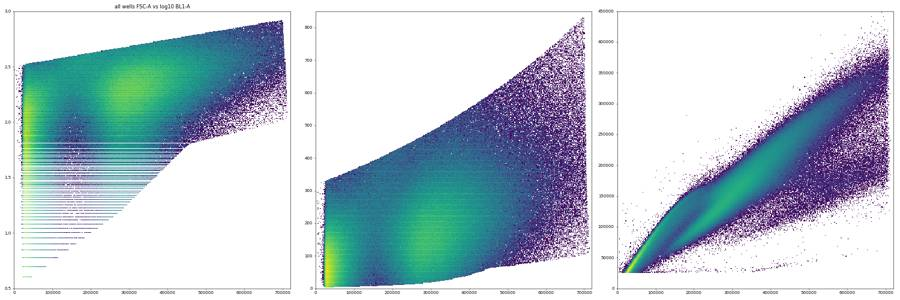
59
thinking
Every file is hard-truncated to a polygon in FSC-A vs log BL1-A, so events above the caspase diagonal are missing; I'm checking the FCS headers and controls to find out what was removed.
60
tool call · Bash
cd /task; python3 - <<'EOF'
import flowio
fd=flowio.FlowData('inputs/raw/Caspase-assay-2-mlk(1)_caspase_Group_A9.fcs')
t=fd.text
for k in sorted(t):
if k.startswith('p') and k[1].isdigit(): continue
print(k,'=',str(t[k])[:300])
print(fd.header)
print(fd.analysis if hasattr(fd,'analysis') else None)
EOF61
tool output
#coincidentcount = 878
#flowrate = 500
#laser1asf = 1.07
#laser1color = Blue
#laser1delay = 1100
#laser2asf = 1.09
#laser2color = Red
#laser2delay = 1516
#laser3asf = 1.04
#laser3color = Violet
#laser3delay = 702
#laser4asf = 1.00
#laser4color = Yellow
#laser4delay = 273
#laserconfig = BRV6Y
#p12label = GFP
#p12target = AAV-GFP
#p13target = AAdvanced livedead
#p1label = NA
#p1target = NA
#p4label = GFP
#p4target = AAV-GFP
#p5target = AAdvanced livedead
#p8label = GFP
#p8target = AAV-GFP
#p9target = AAdvanced livedead
#ptdate = 16-Dec-2022
#ptresult = Pass
#tr1 = OR_FSC,25000
#widththreshold = 1000
#winext = 0
beginanalysis = 000000000000
begindata = 000000008192
beginstext = 000000000000
btim = 14:33:19
byteord = 1,2,3,4
cells = NA
com = NA
cyt = 0A29009 Attune NxT Acoustic Focusing Cytometer (Lasers: BRV6Y)
cytsn = 2AFC228071019
datatype = F
date = 16-Dec-2022
endanalysis = 000000000000
enddata = 000000903839
endstext = 000000000000
etim = 14:33:37
exp = NA
fil = A9.fcs
hostid = SEA11065ATTUNE
inst = NA
lost = 0
mode = L
nextdata = 000000000000
op = Jeff Huang
originality = Original
par = 13
plateid = NA
platename = Caspase-assay-2-mlk(1)
proj = caspase
smno = Group
spillover = 6,BL1-A,BL2-A,BL1-H,BL2-H,BL1-W,BL2-W,1.000000,0.000000,0.000000,0.000000,0.000000,0.000000,0.000000,1.000000,0.000000,0.000000,0.000000,0.000000,0.000000,0.000000,1.000000,0.000000,0.000000,0.000000,0.000000,0.000000,0.000000,1.000000,0.000000,0.000000,0.000000,0.000000,0.000000,0.000000,1.000000,0
src = NA
sys = SEA11065ATTUNE Microsoft Windows 10 Enterprise LTSC
timestep = 0.001
tot = 17224
vol = 138000
wellid = A9
{'version': '3.1', 'text_start': 58, 'text_stop': 2737, 'data_start': 8192, 'data_stop': 903839, 'analysis_start': 0, 'analysis_stop': 0}
{}63
tool call · Bash
cd /task; cat > work/p12.py <<'EOF'
import sys; sys.path.insert(0,'/task/work')
from load import *
import matplotlib; matplotlib.use('Agg'); import matplotlib.pyplot as plt
from matplotlib.colors import LogNorm
allw=pd.concat([get(w).assign(well=w) for w in lay.well])
c=allw[(allw['FSC-A']>150000)&(allw['SSC-A']>60000)]
b=np.arange(150000,720001,30000); c=c.assign(fb=pd.cut(c['FSC-A'],b))
print(c.groupby('fb',observed=True)['FSC-H'].quantile([.005,.02,.05,.1,.5,.95,.995]).unstack().round(0).to_string())
# residual hist relative to ridge
fig,ax=plt.subplots(2,6,figsize=(36,12))
for j,(lo,hi) in enumerate([(150,200),(200,300),(300,400),(400,500),(500,600),(600,720)]):
s=c[(c['FSC-A']>lo*1e3)&(c['FSC-A']<hi*1e3)]
ax[0,j].hist(s['FSC-H']/s['FSC-A'],bins=140,range=(0.15,0.95)); ax[0,j].set_yscale('log'); ax[0,j].set_title(f'H/A FSC-A {lo}-{hi}k')
ax[1,j].hist(s['SSC-H']/s['SSC-A'],bins=140,range=(0.15,1.2)); ax[1,j].set_yscale('log'); ax[1,j].set_title('SSC H/A')
plt.tight_layout(); plt.savefig('/task/work/p12.png',dpi=45)
EOF
python3 work/p12.py64
tool call · Read
{
"file_path": "/task/work/p12.png"
}65
tool output
0.005 0.020 0.050 0.100 0.500 0.950 0.995 fb (150000, 180000] 59080.0 64719.0 68478.0 71788.0 89986.0 130589.0 140481.0 (180000, 210000] 70719.0 76121.0 80066.0 83400.0 96336.0 140437.0 153088.0 (210000, 240000] 82485.0 89107.0 93548.0 97155.0 110731.0 147949.0 162495.0 (240000, 270000] 95049.0 102936.0 108022.0 112303.0 128930.0 159757.0 173445.0 (270000, 300000] 106557.0 116472.0 122538.0 127656.0 146786.0 174303.0 187930.0 (300000, 330000] 115872.0 129127.0 136419.0 142265.0 163316.0 190273.0 203733.0 (330000, 360000] 120458.0 140390.0 149099.0 155967.0 178038.0 206486.0 220335.0 (360000, 390000] 118240.0 148167.0 159289.0 167291.0 193812.0 223342.0 237081.0 (390000, 420000] 111987.0 151659.0 167751.0 178063.0 210489.0 239777.0 253984.0 (420000, 450000] 114918.0 146434.0 172229.0 187713.0 226586.0 255700.0 270641.0 (450000, 480000] 117680.0 136858.0 169677.0 193539.0 241628.0 271440.0 287287.0 (480000, 510000] 121768.0 136937.0 160385.0 188087.0 256065.0 286970.0 303834.0 (510000, 540000] 127619.0 140410.0 157044.0 178526.0 269207.0 302373.0 321164.0 (540000, 570000] 132788.0 144737.0 156847.0 174295.0 280435.0 316834.0 336808.0 (570000, 600000] 138356.0 150379.0 162518.0 175075.0 290791.0 331548.0 357005.0 (600000, 630000] 145758.0 156100.0 167401.0 179646.0 300418.0 345128.0 372659.0 (630000, 660000] 147212.0 161300.0 173171.0 182832.0 306114.0 358493.0 388445.0 (660000, 690000] 149982.0 167413.0 176696.0 187214.0 311046.0 369686.0 399280.0 (690000, 720000] 151420.0 168214.0 179844.0 191337.0 307288.0 380182.0 411626.0
66
tool output
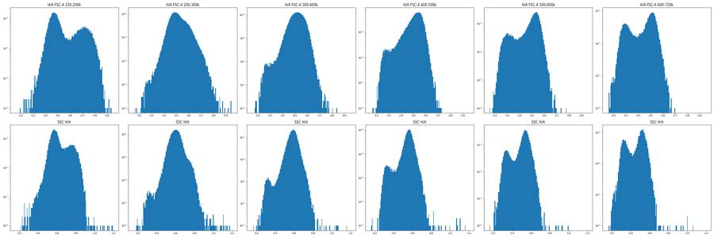
68
thinking
I'm building the gating strategy (cells, singlets, live, then caspase-high) and testing a few caspase thresholds, since the files only hold events below the original caspase-negative boundary.
69
tool call · Bash
cd /task; cat > work/p13.py <<'EOF'
import sys; sys.path.insert(0,'/task/work')
from load import *
from matplotlib.path import Path
pd.set_option('display.width',250); pd.set_option('display.max_rows',200)
cells_poly=[(150e3,60e3),(150e3,300e3),(350e3,700e3),(600e3,900e3),(730e3,900e3),(730e3,150e3),(400e3,60e3)]
sing_poly=[(140e3,54.6e3),(730e3,284.7e3),(730e3,460e3),(480e3,460e3),(140e3,140e3)]
def cap(f): return 317.2*np.exp(1.376e-6*f)
rows=[]
for _,r in lay.iterrows():
d=get(r.well)
c=d[Path(cells_poly).contains_points(d[['FSC-A','SSC-A']].values)]
s=c[Path(sing_poly).contains_points(c[['FSC-A','FSC-H']].values)]
l=s[s['BL2-A']<4000]
rr=l['BL1-A']/cap(l['FSC-A'])
row=dict(well=r.well,samp=r['sample'],cm=r.conditioned_media[:4],n=len(d),cells=len(c),sing=len(s),live=len(l),pc=100*len(c)/len(d),ps=100*len(s)/len(c),pl=100*len(l)/len(s))
for k in [0.6,0.7,0.8]: row[f'k{k}']=100*(rr>k).mean()
for T in [350,400,450]: row[f'T{T}']=100*(l['BL1-A']>T).mean()
row['bl1med']=l['BL1-A'].median(); row['rmed']=rr.median()
rows.append(row)
df=pd.DataFrame(rows).round(2); print(df.to_string()); df.to_csv('work/p13.csv',index=False)
EOF
python3 work/p13.py70
tool output
well samp cm n cells sing live pc ps pl k0.6 k0.7 k0.8 T350 T400 T450 bl1med rmed 0 A1 WT 10uM 24hr 30920 20612 19100 18242 66.66 92.66 95.51 17.44 10.43 5.94 9.83 5.59 2.80 177.0 0.37 1 A2 WT 5uM 24hr 31266 19884 19009 18328 63.60 95.60 96.42 16.83 9.94 5.41 8.84 4.84 2.32 174.0 0.37 2 A3 WT 2uM 24hr 38748 21632 20626 19976 55.83 95.35 96.85 15.85 9.55 5.50 8.89 5.02 2.39 172.0 0.36 3 A4 WT DMSO 24hr 34861 32243 31039 30222 92.49 96.27 97.37 10.52 5.14 2.54 5.07 2.56 1.18 158.0 0.33 4 A5 WT 10uM 48hr 14011 9252 8758 8141 66.03 94.66 92.96 19.97 12.53 7.20 11.20 6.22 2.80 186.0 0.39 5 A6 WT 5uM 48hr 25118 16514 15783 15064 65.75 95.57 95.44 16.06 9.31 4.95 8.30 4.47 2.04 171.0 0.36 6 A7 WT 2uM 48hr 27544 16870 16126 15495 61.25 95.59 96.09 16.43 9.33 5.16 8.62 4.61 2.08 173.0 0.36 7 A8 WT DMSO 48hr 30067 27543 26570 25859 91.61 96.47 97.32 10.34 5.05 2.48 5.22 2.68 1.18 158.0 0.33 8 A9 WT 10uM No c 17224 10858 10261 9667 63.04 94.50 94.21 25.33 16.48 9.63 15.01 8.22 3.67 207.0 0.43 9 A10 WT 5uM No c 24604 16887 15975 15205 68.64 94.60 95.18 18.45 10.92 5.94 9.92 5.47 2.50 184.0 0.38 10 A11 WT 2uM No c 38346 24460 23215 22280 63.79 94.91 95.97 16.12 9.15 4.79 8.70 4.63 2.11 178.0 0.37 11 A12 WT DMSO No c 31708 29238 27751 26669 92.21 94.91 96.10 10.29 5.05 2.32 5.12 2.55 1.26 159.0 0.33 12 B1 E1 10uM 24hr 9849 4007 3811 3809 40.68 95.11 99.95 42.08 31.74 20.37 34.37 23.60 14.12 285.0 0.53 13 B2 E1 5uM 24hr 10963 4673 4534 4192 42.63 97.03 92.46 32.56 20.56 11.88 23.81 14.36 7.47 255.0 0.49 14 B3 E1 2uM 24hr 14921 6146 5973 5689 41.19 97.19 95.25 28.77 17.38 9.70 22.96 13.71 7.24 253.0 0.47 15 B4 E1 DMSO 24hr 12172 10103 9832 9437 83.00 97.32 95.98 21.68 11.06 5.55 18.70 11.15 5.88 241.0 0.43 16 B5 E1 10uM 48hr 5068 2152 2061 1733 42.46 95.77 84.09 35.66 23.08 13.16 23.77 14.25 6.92 258.0 0.51 17 B6 E1 5uM 48hr 9638 5128 4943 4553 53.21 96.39 92.11 29.01 16.82 9.42 18.65 10.67 5.27 237.0 0.47 18 B7 E1 2uM 48hr 13360 6126 5962 5516 45.85 97.32 92.52 27.16 15.26 7.63 17.20 9.72 4.57 240.0 0.47 19 B8 E1 DMSO 48hr 11210 8654 8448 7679 77.20 97.62 90.90 20.72 10.78 4.94 14.47 7.70 3.76 229.0 0.43 20 B9 E1 10uM No c 3505 1343 1288 1002 38.32 95.90 77.80 46.21 30.14 18.06 34.73 21.46 10.98 297.0 0.58 21 B10 E1 5uM No c 8268 3882 3745 3356 46.95 96.47 89.61 32.54 19.85 11.74 25.27 14.87 7.99 262.0 0.49 22 B11 E1 2uM No c 10609 4915 4777 4363 46.33 97.19 91.33 29.66 17.53 9.24 22.74 13.61 7.31 252.0 0.47 23 B12 E1 DMSO No c 9382 7750 7515 7052 82.60 96.97 93.84 25.34 14.44 7.35 21.30 12.52 7.03 248.0 0.46 24 C1 E3 10uM 24hr 7495 3499 3331 2830 46.68 95.20 84.96 32.93 21.59 13.22 25.94 16.40 9.89 250.0 0.48 25 C2 E3 5uM 24hr 10263 5542 5422 4851 54.00 97.83 89.47 24.63 15.01 7.81 20.74 13.83 8.18 232.0 0.44 26 C3 E3 2uM 24hr 8563 4886 4792 4242 57.06 98.08 88.52 21.90 12.05 5.94 18.93 12.02 7.24 232.0 0.43 27 C4 E3 DMSO 24hr 9241 5840 5730 4835 63.20 98.12 84.38 20.12 11.23 5.94 19.30 12.35 7.98 231.0 0.41 28 C5 E3 10uM 48hr 3151 1208 1169 786 38.34 96.77 67.24 32.19 19.85 11.32 25.32 15.39 9.29 253.0 0.47 29 C6 E3 5uM 48hr 6099 2917 2842 2405 47.83 97.43 84.62 26.69 15.63 8.32 22.29 13.64 8.15 244.0 0.45 30 C7 E3 2uM 48hr 8001 4279 4177 3647 53.48 97.62 87.31 24.79 14.29 7.68 23.09 14.34 9.30 244.0 0.45 31 C8 E3 DMSO 48hr 8215 5664 5565 4670 68.95 98.25 83.92 18.61 9.76 5.01 18.63 11.48 7.41 230.0 0.41 32 C9 E3 10uM No c 4067 1700 1626 1183 41.80 95.65 72.76 33.98 21.47 12.68 26.12 18.60 10.48 262.0 0.49 33 C10 E3 5uM No c 8011 4195 4076 3404 52.37 97.16 83.51 26.67 16.01 8.84 23.94 14.69 8.55 249.0 0.45 34 C11 E3 2uM No c 9008 5044 4940 4427 55.99 97.94 89.62 25.01 14.28 7.41 23.54 14.48 8.52 251.0 0.45 35 C12 E3 DMSO No c 13163 10190 9988 8895 77.41 98.02 89.06 18.81 10.34 5.17 18.70 11.40 6.77 229.0 0.40 36 D1 WT 10uM 24hr 22778 14362 13249 12651 63.05 92.25 95.49 16.93 9.12 4.76 10.29 5.56 2.75 190.0 0.39 37 D2 WT 5uM 24hr 27593 17617 16796 16298 63.85 95.34 97.04 16.30 8.77 4.31 8.72 4.29 2.01 184.0 0.38 38 D3 WT 2uM 24hr 27824 15757 15132 14573 56.63 96.03 96.31 18.45 9.58 4.71 9.56 4.92 2.39 191.0 0.40 39 D4 WT DMSO 24hr 24551 22867 21997 21120 93.14 96 … [5,691 more characters not shown]
72
tool call · Bash
cd /task; cat > work/p14.py <<'EOF'
import sys; sys.path.insert(0,'/task/work')
from load import *
def cap(f): return 317.2*np.exp(1.376e-6*f)
allw=pd.concat([get(r.well).assign(well=r.well,line=r.cell_line,cpt=r.camptothecin) for _,r in lay.iterrows()])
allw['r']=allw['BL1-A']/cap(allw['FSC-A'])
c=allw[(allw['FSC-A']>150000)&(allw['SSC-A']>60000)]
bins=np.arange(0,1.01,0.1)
def show(name,x):
h,_=np.histogram(x['r'],bins=bins); print(f'{name:38s} n={len(x):7d}', (100*h/len(x)).round(1))
show('G2 L/D-only dead (BL2>10k)', c[(c.well=='G2')&(c['BL2-A']>10000)])
show('G2 L/D-only live (BL2<4k)', c[(c.well=='G2')&(c['BL2-A']<4000)])
full=c[~c.well.isin(['G1','G2','G3','B1'])]
for line in ['WT','E1','E3']:
for cpt in ['DMSO','10uM']:
x=full[(full.line==line)&(full.cpt==cpt)]
show(f'{line} {cpt} dead (BL2>10k)', x[x['BL2-A']>10000]); show(f'{line} {cpt} dim (4k-10k)', x[(x['BL2-A']>4000)&(x['BL2-A']<=10000)]); show(f'{line} {cpt} live (<4k)', x[x['BL2-A']<4000])
# fraction of SYTOX-bright among cells: G2 vs others
for w in ['G2','G6','A4','A8','A12','D4','D8','D12']:
x=c[c.well==w]; print(w, 'pct BL2>10k', round(100*(x['BL2-A']>10000).mean(),2),'pct BL2>30k', round(100*(x['BL2-A']>30000).mean(),2), 'pct 4-10k', round(100*((x['BL2-A']>4000)&(x['BL2-A']<=10000)).mean(),2))
# debris events r distribution
d=allw[(allw['FSC-A']<100000)]
show('debris G1',d[d.well=='G1']); show('debris G2',d[d.well=='G2']); show('debris WT DMSO',d[(d.line=='WT')&(d.cpt=='DMSO')]); show('debris WT 10uM',d[(d.line=='WT')&(d.cpt=='10uM')]); show('debris E1 10uM',d[(d.line=='E1')&(d.cpt=='10uM')])
EOF
python3 work/p14.py73
tool output
G2 L/D-only dead (BL2>10k) n= 1952 [ 7.6 13.8 18.2 19.2 13.6 12.4 6.2 4.4 3.3 1.2] G2 L/D-only live (BL2<4k) n= 22949 [ 7.9 19.9 24.4 20.8 13.9 7.1 3.6 1.4 0.6 0.3] WT DMSO dead (BL2>10k) n= 1992 [ 0.3 1.1 3.1 5.7 8.8 13.7 14.9 18.4 16.9 16.9] WT DMSO dim (4k-10k) n= 4801 [ 0.7 3.9 7.8 12.2 15.2 16.3 14.1 11.2 9.4 9.1] WT DMSO live (<4k) n= 150041 [ 5.5 15.1 20.7 20.7 16.3 10.3 5.8 3. 1.7 0.9] WT 10uM dead (BL2>10k) n= 904 [ 0.1 0.3 1.3 3.9 6.4 9.8 12.5 16.5 20.4 28.3] WT 10uM dim (4k-10k) n= 3126 [ 0.3 1.2 2.8 6. 9.8 11.7 13.9 16. 18. 19.7] WT 10uM live (<4k) n= 61385 [ 3.9 11.4 16.8 19.3 16.6 12.3 8. 5.2 3.7 2.9] E1 DMSO dead (BL2>10k) n= 570 [ 0. 0.2 0.9 0.9 4.6 8.9 13.2 15.1 24.9 31.1] E1 DMSO dim (4k-10k) n= 3248 [ 0.2 1.1 2.4 6.2 10.7 14.6 17.4 16.6 15.9 14.7] E1 DMSO live (<4k) n= 45844 [ 1.3 6.5 13. 18.8 20.1 16.1 11. 6.8 4. 2.4] E1 10uM dead (BL2>10k) n= 145 [ 0. 0. 0. 0.7 1.4 2.8 9.7 20. 20.7 43.4] E1 10uM dim (4k-10k) n= 1183 [ 0.3 0.5 0.8 2.6 5.2 9.1 14. 18.3 23.8 24.6] E1 10uM live (<4k) n= 7314 [ 1. 4.4 9.4 14.8 16.5 16.5 13.4 10.1 7.4 6.5] E3 DMSO dead (BL2>10k) n= 1069 [ 0. 0.3 1. 3.5 6.2 9.5 14.5 16.1 23.1 25. ] E3 DMSO dim (4k-10k) n= 4427 [ 0.3 1.4 3.8 8.5 13.5 15.1 14.7 16.4 14.3 11.9] E3 DMSO live (<4k) n= 40446 [ 1.8 8.5 15.5 20.2 18.8 14.1 9.4 5.7 3.7 2.3] E3 10uM dead (BL2>10k) n= 241 [ 0. 0. 0.4 0. 3.7 5. 12.9 15.8 25.7 35.3] E3 10uM dim (4k-10k) n= 1725 [ 0.1 0.5 1.2 3.6 6.5 10.1 12.2 18.1 20.6 26.4] E3 10uM live (<4k) n= 9028 [ 1.4 6.5 11.5 16. 17.7 14.3 11.7 8.8 6.6 5.4] G2 pct BL2>10k 7.53 pct BL2>30k 5.35 pct 4-10k 3.92 G6 pct BL2>10k 0.18 pct BL2>30k 0.02 pct 4-10k 1.36 A4 pct BL2>10k 1.16 pct BL2>30k 0.62 pct 4-10k 1.81 A8 pct BL2>10k 0.92 pct BL2>30k 0.38 pct 4-10k 2.15 A12 pct BL2>10k 1.28 pct BL2>30k 0.35 pct 4-10k 3.42 D4 pct BL2>10k 1.29 pct BL2>30k 0.5 pct 4-10k 3.09 D8 pct BL2>10k 2.03 pct BL2>30k 0.7 pct 4-10k 5.08 D12 pct BL2>10k 1.11 pct BL2>30k 0.21 pct 4-10k 3.55 debris G1 n= 1597 [32.4 33. 19.4 9.6 3.9 0.9 0.4 0.3 0.1 0. ] debris G2 n= 1203 [29.8 30.6 20.8 10.3 5.7 2.1 0.6 0.2 0.1 0. ] debris WT DMSO n= 10022 [16.9 21.3 19.2 15.4 10. 6.7 4.1 3.1 2. 1.4] debris WT 10uM n= 26972 [17. 21.8 20.7 15.7 10.3 6.1 3.7 2.2 1.5 1. ] debris E1 10uM n= 18602 [16.4 22.4 20.9 16.4 10. 6.1 3.5 2. 1.3 0.9]
75
tool call · Bash
cd /task; cat > work/p15.py <<'EOF'
import sys; sys.path.insert(0,'/task/work')
from load import *
import matplotlib; matplotlib.use('Agg'); import matplotlib.pyplot as plt
from matplotlib.colors import LogNorm
ws=['E10','B10','E6','E2','E11','E12','F10','B6']
fig,ax=plt.subplots(4,len(ws),figsize=(5*len(ws),20))
for j,w in enumerate(ws):
d=get(w)
ax[0,j].hist2d(d['FSC-A'],d['SSC-A'],bins=120,range=[[0,720000],[0,720000]],norm=LogNorm()); ax[0,j].set_title(w+' FSC-A/SSC-A')
ax[1,j].hist2d(d['FSC-A'],d['FSC-H'],bins=120,range=[[0,720000],[0,450000]],norm=LogNorm())
ax[2,j].scatter(d['Time'],d['FSC-A'],s=1,alpha=.3); ax[2,j].set_title('time vs FSC-A')
ax[3,j].scatter(d['Time'],np.arcsinh(d['BL2-A']/300),s=1,alpha=.3); ax[3,j].set_title('time vs BL2')
c=d[(d['FSC-A']>150000)&(d['SSC-A']>60000)]
print(w,len(d),len(c),'cells FSC pct',np.percentile(c['FSC-A'],[10,25,50,75,90]).round(-3),'SSC',np.percentile(c['SSC-A'],[10,50,90]).round(-3),'FSC-W',np.percentile(c['FSC-W'],[10,50,90]),'H/A',np.percentile(c['FSC-H']/c['FSC-A'],[10,50,90]).round(2), 'BL2med',c['BL2-A'].median())
plt.tight_layout(); plt.savefig('/task/work/p15.png',dpi=45)
EOF
python3 work/p15.py76
tool call · Read
{
"file_path": "/task/work/p15.png"
}77
tool output
E10 5492 2350 cells FSC pct [290000. 366000. 456000. 534000. 601000.] SSC [163000. 235000. 340000.] FSC-W [121. 152. 166.] H/A [0.46 0.54 0.61] BL2med 1892.0 B10 8268 3888 cells FSC pct [251000. 308000. 364000. 429000. 500000.] SSC [152000. 223000. 333000.] FSC-W [121. 141. 162.] H/A [0.45 0.53 0.6 ] BL2med 1242.5 E6 7547 3176 cells FSC pct [238000. 284000. 330000. 380000. 453000.] SSC [171000. 248000. 354000.] FSC-W [118. 132. 156.] H/A [0.45 0.52 0.6 ] BL2med 1139.0 E2 10681 4669 cells FSC pct [254000. 299000. 344000. 396000. 459000.] SSC [163000. 231000. 332000.] FSC-W [120. 137. 157.] H/A [0.45 0.52 0.6 ] BL2med 974.0 E11 11711 4410 cells FSC pct [272000. 316000. 366000. 422000. 490000.] SSC [166000. 232000. 333000.] FSC-W [121. 142. 159.] H/A [0.47 0.54 0.6 ] BL2med 1113.0 E12 10755 9026 cells FSC pct [286000. 330000. 390000. 463000. 533000.] SSC [176000. 259000. 371000.] FSC-W [122. 143. 161.] H/A [0.47 0.53 0.59] BL2med 1012.0 F10 8439 4323 cells FSC pct [267000. 314000. 377000. 461000. 554000.] SSC [163000. 246000. 373000.] FSC-W [122. 146. 163.] H/A [0.46 0.53 0.59] BL2med 1341.0 B6 9638 5136 cells FSC pct [231000. 288000. 333000. 389000. 464000.] SSC [159000. 238000. 355000.] FSC-W [119. 136. 158.] H/A [0.44 0.52 0.61] BL2med 1029.0
78
tool output
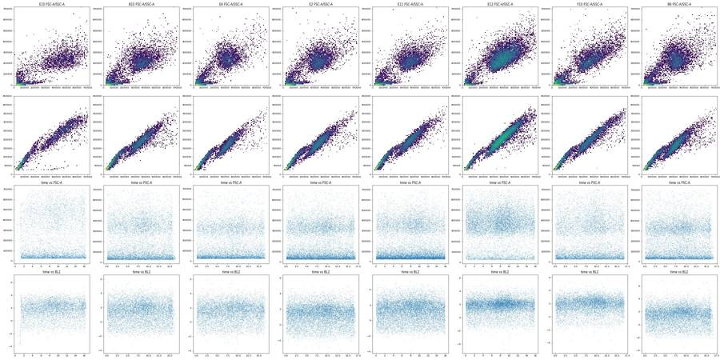
80
agent
Checking instrument settings recorded in each file for consistency (one well, E10, has a delayed start and shifted scatter), then I'll write the final gates and all deliverables.
81
tool call · Bash
cd /task; python3 - <<'EOF'
import flowio, pandas as pd, collections
lay=pd.read_csv('inputs/plate_layout.csv')
vals=collections.defaultdict(dict)
for _,r in lay.iterrows():
t=flowio.FlowData('inputs/raw/'+r.file).text
for k,v in t.items():
if k in ('btim','etim','fil','wellid','tot','enddata','vol','#coincidentcount'): continue
vals[k].setdefault(str(v)[:80],[]).append(r.well)
for k,d in vals.items():
if len(d)>1: print(k,{v:(len(w),w[:8]) for v,w in d.items()})
print('n keys',len(vals))
cc={}
for _,r in lay.iterrows():
t=flowio.FlowData('inputs/raw/'+r.file).text
cc[r.well]=(int(t['#coincidentcount']),int(t['tot']),int(t['vol']), t['wellid'])
bad=[(w,v) for w,v in cc.items() if v[3]!=w]; print('wellid mismatch',bad)
print({w:(v[0],round(100*v[0]/v[1],1)) for w,v in cc.items()})
EOF82
tool output
n keys 163
wellid mismatch []
{'A1': (1385, 4.5), 'A2': (1159, 3.7), 'A3': (1299, 3.4), 'A4': (740, 2.1), 'A5': (690, 4.9), 'A6': (755, 3.0), 'A7': (781, 2.8), 'A8': (721, 2.4), 'A9': (878, 5.1), 'A10': (901, 3.7), 'A11': (1471, 3.8), 'A12': (1012, 3.2), 'B1': (415, 4.2), 'B2': (317, 2.9), 'B3': (387, 2.6), 'B4': (273, 2.2), 'B5': (261, 5.1), 'B6': (322, 3.3), 'B7': (390, 2.9), 'B8': (324, 2.9), 'B9': (390, 11.1), 'B10': (266, 3.2), 'B11': (281, 2.6), 'B12': (355, 3.8), 'C1': (375, 5.0), 'C2': (409, 4.0), 'C3': (315, 3.7), 'C4': (417, 4.5), 'C5': (302, 9.6), 'C6': (239, 3.9), 'C7': (317, 4.0), 'C8': (354, 4.3), 'C9': (476, 11.7), 'C10': (481, 6.0), 'C11': (458, 5.1), 'C12': (553, 4.2), 'D1': (1215, 5.3), 'D2': (1168, 4.2), 'D3': (1087, 3.9), 'D4': (616, 2.5), 'D5': (347, 5.4), 'D6': (727, 4.3), 'D7': (940, 4.0), 'D8': (754, 3.2), 'D9': (743, 8.6), 'D10': (808, 4.1), 'D11': (1388, 4.4), 'D12': (863, 3.4), 'E1': (428, 4.4), 'E2': (327, 3.1), 'E3': (361, 2.9), 'E4': (269, 2.7), 'E5': (223, 5.0), 'E6': (326, 4.3), 'E7': (437, 3.6), 'E8': (338, 4.2), 'E9': (352, 8.5), 'E10': (281, 5.1), 'E11': (411, 3.5), 'E12': (238, 2.2), 'F1': (409, 6.4), 'F2': (451, 4.6), 'F3': (400, 4.0), 'F4': (372, 3.5), 'F5': (221, 6.9), 'F6': (243, 3.8), 'F7': (346, 3.7), 'F8': (345, 3.3), 'F9': (309, 8.6), 'F10': (398, 4.7), 'F11': (628, 5.2), 'F12': (466, 4.0), 'G1': (890, 2.6), 'G2': (675, 2.4), 'G3': (684, 2.5), 'G4': (125, 1.7), 'G5': (372, 3.2), 'G6': (314, 2.0)}84
tool call · Bash
cd /task; cat > work/build_gates.py <<'EOF'
import flowkit as fk, numpy as np, pandas as pd, warnings
warnings.filterwarnings('ignore')
OUT='/task/outputs/'
lay=pd.read_csv('/task/inputs/plate_layout.csv')
U='uncompensated'
def dim(ch,lo=None,hi=None): return fk.Dimension(ch,compensation_ref=U,range_min=lo,range_max=hi)
CAP_A,CAP_B=317.2,1.376e-6 # empirical ceiling of BL1-A in the files: CAP_A*exp(CAP_B*FSC-A)
K=0.80 # Caspase_high lower edge = K * ceiling
LIVE_MAX=4000.0
cells_v=[(150e3,60e3),(150e3,300e3),(350e3,700e3),(600e3,900e3),(730e3,900e3),(730e3,150e3),(400e3,60e3)]
sing_v=[(140e3,54.6e3),(730e3,284.7e3),(730e3,460e3),(480e3,460e3),(140e3,140e3)]
fs=np.arange(100e3,760e3+1,20e3)
casp_v=[(float(f),float(round(K*CAP_A*np.exp(CAP_B*f),2))) for f in fs]+[(760e3,1.0e6),(100e3,1.0e6)]
gs=fk.GatingStrategy()
gs.add_gate(fk.gates.PolygonGate('Cells',[dim('FSC-A'),dim('SSC-A')],cells_v),gate_path=('root',))
gs.add_gate(fk.gates.PolygonGate('Singlets',[dim('FSC-A'),dim('FSC-H')],sing_v),gate_path=('root','Cells'))
gs.add_gate(fk.gates.RectangleGate('Live',[dim('BL2-A',None,LIVE_MAX)]),gate_path=('root','Cells','Singlets'))
gs.add_gate(fk.gates.RectangleGate('SYTOX_pos',[dim('BL2-A',LIVE_MAX,None)]),gate_path=('root','Cells','Singlets'))
gs.add_gate(fk.gates.PolygonGate('Caspase_high',[dim('FSC-A'),dim('BL1-A')],casp_v),gate_path=('root','Cells','Singlets','Live'))
with open(OUT+'gates.xml','wb') as f: fk.export_gatingml(gs,f)
gs2=fk.parse_gating_xml(OUT+'gates.xml')
print(gs2.get_gate_ids())
roles={'Cells':'cells','Singlets':'singlets','Live':'live','SYTOX_pos':'other','Caspase_high':'marker_positive'}
order=['Cells','Singlets','Live','SYTOX_pos','Caspase_high']
rows=[]
for _,r in lay.iterrows():
s=fk.Sample('/task/inputs/raw/'+r.file)
res=gs2.gate_sample(s); rep=res.report.set_index('gate_name')
tot=s.event_count
rows.append(dict(file=r.file,well=r.well,population='all_events',role='other',parent='none',count=tot,pct_of_parent=''))
cnt={'all_events':tot}
for g in order:
par=rep.loc[g,'parent']; par='all_events' if par=='root' else par
c=int(rep.loc[g,'count']); cnt[g]=c
pc=100*c/cnt[par] if cnt[par]>0 else float('nan')
assert abs(pc-rep.loc[g,'relative_percent'])<1e-6 or cnt[par]==0
rows.append(dict(file=r.file,well=r.well,population=g,role=roles[g],parent=par,count=c,pct_of_parent=round(pc,4)))
df=pd.DataFrame(rows)[['file','well','population','role','parent','count','pct_of_parent']]
df.to_csv(OUT+'counts.csv',index=False)
print(df[df.well.isin(['G1','G2','G3','A12','B1'])].to_string())
EOF
python3 work/build_gates.py && head -c 1500 outputs/gates.xml85
tool output
[('Cells', ('root',)), ('Singlets', ('root', 'Cells')), ('Live', ('root', 'Cells', 'Singlets')), ('Caspase_high', ('root', 'Cells', 'Singlets', 'Live')), ('SYTOX_pos', ('root', 'Cells', 'Singlets'))]
file well population role parent count pct_of_parent
66 Caspase-assay-2-mlk(1)_caspase_Group_A12.fcs A12 all_events other none 31708
67 Caspase-assay-2-mlk(1)_caspase_Group_A12.fcs A12 Cells cells all_events 29238 92.2102
68 Caspase-assay-2-mlk(1)_caspase_Group_A12.fcs A12 Singlets singlets Cells 27751 94.9142
69 Caspase-assay-2-mlk(1)_caspase_Group_A12.fcs A12 Live live Singlets 26669 96.101
70 Caspase-assay-2-mlk(1)_caspase_Group_A12.fcs A12 SYTOX_pos other Singlets 1082 3.899
71 Caspase-assay-2-mlk(1)_caspase_Group_A12.fcs A12 Caspase_high marker_positive Live 618 2.3173
72 Caspase-assay-2-mlk(1)_caspase_Group_B1.fcs B1 all_events other none 9849
73 Caspase-assay-2-mlk(1)_caspase_Group_B1.fcs B1 Cells cells all_events 4007 40.6843
74 Caspase-assay-2-mlk(1)_caspase_Group_B1.fcs B1 Singlets singlets Cells 3811 95.1086
75 Caspase-assay-2-mlk(1)_caspase_Group_B1.fcs B1 Live live Singlets 3809 99.9475
76 Caspase-assay-2-mlk(1)_caspase_Group_B1.fcs B1 SYTOX_pos other Singlets 2 0.0525
77 Caspase-assay-2-mlk(1)_caspase_Group_B1.fcs B1 Caspase_high marker_positive Live 776 20.3728
432 Caspase-assay-2-mlk(1)_caspase_Group_G1.fcs G1 all_events other none 34073
433 Caspase-assay-2-mlk(1)_caspase_Group_G1.fcs G1 Cells cells all_events 31787 93.2909
434 Caspase-assay-2-mlk(1)_caspase_Group_G1.fcs G1 Singlets singlets Cells 30615 96.313
435 Caspase-assay-2-mlk(1)_caspase_Group_G1.fcs G1 Live live Singlets 30614 99.9967
436 Caspase-assay-2-mlk(1)_caspase_Group_G1.fcs G1 SYTOX_pos other Singlets 1 0.0033
437 Caspase-assay-2-mlk(1)_caspase_Group_G1.fcs G1 Caspase_high marker_positive Live 220 0.7186
438 Caspase-assay-2-mlk(1)_caspase_Group_G2.fcs G2 all_events other none 28006
439 Caspase-assay-2-mlk(1)_caspase_Group_G2.fcs G2 Cells cells all_events 25825 92.2124
440 Caspase-assay-2-mlk(1)_caspase_Group_G2.fcs G2 Singlets singlets Cells 25054 97.0145
441 Caspase-assay-2-mlk(1)_caspase_Group_G2.fcs G2 Live live Singlets 22543 89.9776
442 Caspase-assay-2-mlk(1)_caspase_Group_G2.fcs G2 SYTOX_pos other Singlets 2511 10.0224
443 Caspase-assay-2-mlk(1)_caspase_Group_G2.fcs G2 Caspase_high marker_positive Live 200 0.8872
444 Caspase-assay-2-mlk(1)_caspase_Group_G3.fcs G3 all_events other none 27095
445 Caspase-assay-2-mlk(1)_caspase_Group_G3.fcs G3 Cells cells all_events 25193 92.9803
446 Caspase-assay-2-mlk(1)_caspase_Group_G3.fcs G3 Singlets singlets Cells 24543 97.4199
447 Caspase-assay-2-mlk(1)_caspase_Group_G3.fcs G3 Live live Singlets 24543 100.0
448 Caspase-assay-2-mlk(1)_caspase_Group_G3.fcs G3 SYTOX_pos other Singlets 0 0.0
449 Caspase-assay-2-mlk(1)_caspase_Group_G3.fcs G3 Caspase_high marker_positive Live 540 2.2002
<?xml version='1.0' encoding='UTF-8'?>
<gating:Gating-ML xmlns:gating="http://www.isac-net.org/std/Gating-ML/v2.0/gating" xmlns:data-type="http://www.isac-net.org/std/Gating-ML/v2.0/datatypes" xmlns:transforms="http://www.isac-net.org/std/Gating-ML/v2.0/transformations">
<gating:PolygonGate gating:id="Cells">
<gating:dimension gating:compensation-ref="uncompensated">
<data-type:fcs-dimension data-type:name="FSC-A"/>
</gating:dimension>
<gating:dimension gating:compensation-ref="uncompensated">
<data-type:fcs-dimension data-type:name="SSC-A"/>
</gating:dimension>
<gating:vertex>
<gating:coordinate data-type:value="150000.0"/>
<gating:coordinate data-type:value="60000.0"/>
</gating:vertex>
<gating:vertex>
<gating:coordinate data-type:value="150000.0"/>
<gating:coordinate data-type:value="300000.0"/>
</gating:vertex>
<gating:vertex>
<gating:coordinate data-type:value="350000.0"/>
<gating:coordinate data-type:value="700000.0"/>
</gating:vertex>
<gating:vertex>
<gating:coordinate data-type:value="600000.0"/>
<gating:coordinate data-type:value="900000.0"/>
</gating:vertex>
<gating:vertex>
<gating:coordinate data-type:value="730000.0"/>
<gating:coordinate data-type:value="900000.0"/>
</gating:vertex>
<gating:vertex>
<gating:coordinate data-type:value="730000.0"/>
<gating:coordinate data-type:value="150000.0"/>
</gating:vertex>
<gat87
agent
Gates are exported and reload correctly, and `counts.csv` is written. Next: a quick visual check of the gates on representative wells, then the condition summary, flags, figure, report and answer.
88
tool call · Bash
cd /task; cat > work/qc_gates.py <<'EOF'
import sys; sys.path.insert(0,'/task/work')
from load import *
import matplotlib; matplotlib.use('Agg'); import matplotlib.pyplot as plt
from matplotlib.colors import LogNorm
from matplotlib.path import Path
cells_v=[(150e3,60e3),(150e3,300e3),(350e3,700e3),(600e3,900e3),(730e3,900e3),(730e3,150e3),(400e3,60e3)]
sing_v=[(140e3,54.6e3),(730e3,284.7e3),(730e3,460e3),(480e3,460e3),(140e3,140e3)]
fs=np.arange(100e3,760e3+1,20e3); thr=0.8*317.2*np.exp(1.376e-6*fs)
ws=['G1','G2','G3','A12','A9','B12','B9','C12','C9']
fig,ax=plt.subplots(4,len(ws),figsize=(4.5*len(ws),18))
for j,w in enumerate(ws):
d=get(w)
ax[0,j].hist2d(d['FSC-A'],d['SSC-A'],bins=150,range=[[0,750e3],[0,950e3]],norm=LogNorm(),cmap='Greys'); ax[0,j].add_patch(plt.Polygon(cells_v,fill=False,ec='r')); ax[0,j].set_title(w+' Cells')
c=d[Path(cells_v).contains_points(d[['FSC-A','SSC-A']].values)]
ax[1,j].hist2d(c['FSC-A'],c['FSC-H'],bins=150,range=[[0,750e3],[0,470e3]],norm=LogNorm(),cmap='Greys'); ax[1,j].add_patch(plt.Polygon(sing_v,fill=False,ec='r')); ax[1,j].set_title('Singlets')
s=c[Path(sing_v).contains_points(c[['FSC-A','FSC-H']].values)]
ax[2,j].hist(np.arcsinh(s['BL2-A']/300),bins=120,range=(-4,8),color='grey'); ax[2,j].axvline(np.arcsinh(4000/300),color='r'); ax[2,j].set_yscale('log'); ax[2,j].set_title('Live: BL2-A<4000')
l=s[s['BL2-A']<4000]
ax[3,j].hist2d(l['FSC-A'],l['BL1-A'],bins=150,range=[[100e3,750e3],[0,900]],norm=LogNorm(),cmap='Greys'); ax[3,j].plot(fs,thr,'r'); ax[3,j].plot(fs,thr/0.8,'b--',lw=.8); ax[3,j].set_title('Caspase_high (above red); blue=file ceiling')
plt.tight_layout(); plt.savefig('/task/work/qc_gates.png',dpi=45)
EOF
python3 work/qc_gates.py89
tool call · Read
{
"file_path": "/task/work/qc_gates.png"
}90
tool output
(Bash completed with no output)
91
tool output
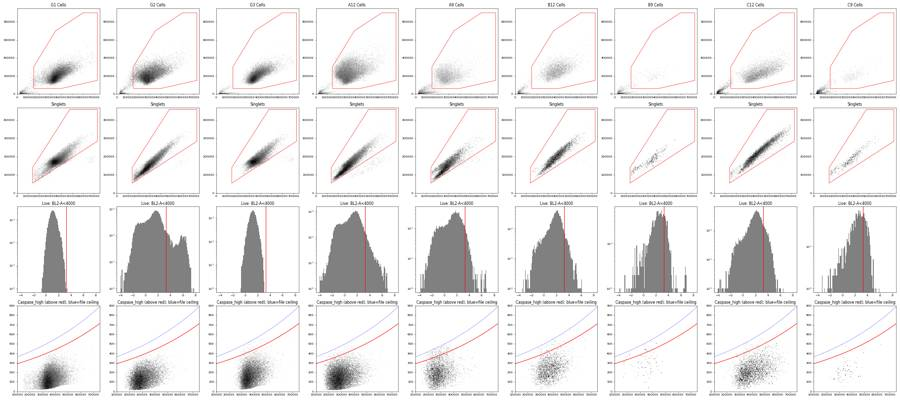
93
tool call · Skill
{
"skill": "dataviz"
}94
tool output
Launching skill: dataviz
95
tool call · Bash
cd /tmp/claude-0/bundled-skills/2.1.322/1f15e17c35a3ce049ca8cf1b05c19bca/dataviz; sed -n 1,80p references/palette.md; echo ----; grep -n -i "small multiple\|dot\|strip\|matplotlib" references/choosing-a-form.md | head -30; echo ---; sed -n 1,60p references/marks-and-anatomy.md
96
tool output
# Reference palette
This is the **reference instance** of the data-viz method: every parameter the
method needs, filled in with a validated default palette. The rest of the skill
is system-agnostic - **to target your brand, substitute this file's values** and
re-run the validator. Nothing else changes.
## How to use these values
Everything below is plain hex. In an HTML chart, **define the slots you use as
CSS custom properties in a local `<style>` block** at the top of the file, then
reference them by role throughout - so the light/dark values swap in one place,
and the chart body is written against roles rather than raw hex:
```css
.viz-root {
color-scheme: light;
--surface-1: #fcfcfb; /* chart surface */
--text-primary: #0b0b0b;
--text-secondary: #52514e;
--series-1: #2a78d6; /* categorical slot 1 */
/* ...only the roles this chart uses */
}
@media (prefers-color-scheme: dark) {
:root:where(:not([data-theme="light"])) .viz-root {
color-scheme: dark;
--surface-1: #1a1a19;
--text-primary: #f0efec;
--text-secondary: #c3c2b7;
--series-1: #3987e5;
}
}
:root[data-theme="dark"] .viz-root {
color-scheme: dark;
--surface-1: #1a1a19;
--text-primary: #f0efec;
--text-secondary: #c3c2b7;
--series-1: #3987e5;
}
```
Declare the dark values under both scopes as above - the media query covers
the OS setting; the `data-theme` scope covers the viewer's theme toggle,
which must win both ways (the `:not(...)` guard lets a light stamp beat
OS-dark; `:where()` keeps the media block below the toggle scope).
## Categorical palette
Both modes are selected. The dark column is the same eight hues stepped for the
dark surface, not a separate palette:
| Slot | Hue | Light | Dark |
|------|-----|-------|------|
| 1 | blue | `#2a78d6` | `#3987e5` |
| 2 | orange | `#eb6834` | `#d95926` |
| 3 | aqua | `#1baf7a` | `#199e70` |
| 4 | yellow | `#eda100` | `#c98500` |
| 5 | magenta | `#e87ba4` | `#d55181` |
| 6 | green | `#008300` | `#008300` |
| 7 | violet | `#6250d6` | `#9085e9` |
| 8 | red | `#e34948` | `#e66767` |
This order passes every hard gate in both modes on the default *adjacent*
pairlist (stacks, bars, lines): worst adjacent CVD Delta E 9.1 light / 8.4 dark
(OKLab ×100, >=8 target), worst adjacent normal-vision Delta E 19.6 light / 19.3
dark (>=15 floor). Under `--pairs all` (scatter, bubble, choropleth, small
multiples) the full eight cannot clear the floors - with all 28 pairs in
play no ordering can (the pairlist no longer depends on order), and
re-stepping is off the table by the documented-palette rule - so those
chart forms carry a series cap: **the first three slots validate all-pairs
in both modes** (worst pair CVD Delta E 9.2 light / 9.4 dark, normal-vision 24.0
light / 20.9 dark - clear of the CVD warn band). Past three, fold to "Other" or
facet: the fourth slot puts yellow and orange on screen
together, and that pair fails the all-pairs floors (normal-vision 13.7
light; CVD 4.8 dark). Three light-mode slots (magenta, yellow, aqua)
sit below 3:1 contrast on the light surface: the **relief rule** applies (ship
visible direct labels or the table view). The dark steps were chosen for the
dark band (OKLCH L ~ 0.48-0.67, >= 3:1 on the dark surface) and validated as a
set. (Ordering history: adopted July 2026 for its more harmonious opening -
the same eight hues and steps as its predecessor, re-ordered, zero hex
----
66:| 4 | adjacent forms (stacks, bars, lines) stay gate-safe, but direct labels become mandatory - yellow and orange now share the screen; all-pairs forms (scatter, bubble, choropleth, small multiples) cap at **three** - fold to "Other" or facet rather than seat a 4th |
67:| 5-6 | soft cap; legend or small multiples |
68:| 7-8 | token ceiling; past it, fold the tail into "Other," facet into small multiples, or use composite encoding (hue × shape) |
---
# Marks & anatomy
The quiet, considered look is a few fixed specs plus two pieces of negative space.
The data is the only thing allowed to be loud.
## Mark specs (fixed across every chart)
| Mark | Spec |
|---|---|
| Bar / column | **<= 24px thick** (cap it - never fill the slot; let the band's leftover be air); **4px rounded data-end, square at the baseline**; grows from a single baseline |
| Line | **2px**, round join/cap |
| Marker / end-dot | **>= 8px** (r >= 4), filled with the series color |
| Area fill | the series hue at **~10% opacity** (a wash, never a saturated block) |
| Gridlines / axes | one-step-off-surface gray, **hairline (1px), solid** (never dashed), recessive |
## The two spacers (white doing the separating)
- **Surface gap.** A **2px gap** in the surface color separates touching marks - every
segment of a stacked bar, and every adjacent (touching) bar, the same width. Keep it
one consistent width across a stack; neighbors one step apart read distinct because of
the gap, not a stroke drawn around them.
- **Surface ring.** Dots and end-markers carry a **2px ring in the surface color**,
so they stay legible where they cross a line or overlap each other. The ring is part
of the mark's hover/hit target, not just spacing - see `interaction.md` (small dots
are easy to under-size for hover).
Never draw a border around a mark to separate it. The gap and the ring are the
mechanism; a stroke adds data-weight ink that isn't data.
## Labels & legend
A **legend is always present for two or more series** - the dependable identity
channel; never make the reader rely on color-matching alone. Direct labels then ride
the marks to *supplement* it. **A single series needs no legend box**: there is only
one color, so the chart's title or subtitle already says what is plotted. A box with
one swatch restates the title and costs space.
- **Label selectively - never a number on every point.** A value beside every dot or
segment is chaos and goes unread. Label the endpoint, the extreme, or the one series
the story is about; let the
… [1,702 more characters not shown]98
tool call · Bash
cd /task; (node /tmp/claude-0/bundled-skills/2.1.322/1f15e17c35a3ce049ca8cf1b05c19bca/dataviz/scripts/validate_palette.js "#2a78d6,#eb6834,#1baf7a" --mode light --pairs all 2>&1 | tail -15) ; cat > work/analyse.py <<'EOF'
import sys; sys.path.insert(0,'/task/work')
import numpy as np, pandas as pd, flowio
from scipy import stats
pd.set_option('display.width',250); pd.set_option('display.max_rows',300)
lay=pd.read_csv('/task/inputs/plate_layout.csv')
cnt=pd.read_csv('/task/outputs/counts.csv')
w=cnt.pivot(index='well',columns='population',values='count').reindex(lay.well)
w=w.join(lay.set_index('well'))
w['pct_cells']=100*w.Cells/w.all_events; w['pct_live']=100*w.Live/w.Singlets; w['pct_casp']=100*w.Caspase_high/w.Live
w['cm']=w.conditioned_media.map({'24hr conditioned media':'24hr CM','48hr conditioned media':'48hr CM','No conditioned media':'no CM'})
w['row']=[x[0] for x in w.index]
co=[]; vol=[]
for _,r in lay.iterrows():
t=flowio.FlowData('/task/inputs/raw/'+r.file).text; co.append(int(t['#coincidentcount'])); vol.append(int(t['vol'])/1000)
w['coinc']=co; w['vol_uL']=vol; w['coinc_pct']=100*w.coinc/w.all_events; w['live_per_uL']=w.Live/w.vol_uL
w.to_csv('/task/work/well_table.csv')
print(w[['sample','cm','all_events','Cells','Singlets','Live','Caspase_high','pct_cells','pct_live','pct_casp','coinc_pct','live_per_uL']].round(2).to_string())
EXCL=['B1']
p=w[(w.row!='G')&(~w.index.isin(EXCL))]
print('\n== mean pct_casp by line x cpt x cm')
print(p.pivot_table(index=['cell_line','camptothecin'],columns='cm',values='pct_casp',aggfunc=['mean','std']).round(2))
print(p.pivot_table(index=['cell_line','camptothecin'],columns='cm',values='pct_cells',aggfunc='mean').round(1))
print(p.pivot_table(index=['cell_line','camptothecin'],columns='cm',values='pct_live',aggfunc='mean').round(1))
print(p.pivot_table(index=['cell_line','camptothecin'],columns='cm',values='Live',aggfunc='mean').round(0))
print(p.pivot_table(index=['cell_line','camptothecin'],columns='cm',values='coinc_pct',aggfunc='mean').round(1))
# paired differences CM - noCM within row and dose
def paired(lines,cmx,metric='pct_casp',doses=None,excl=EXCL):
q=w[(w.row!='G')&(w.cell_line.isin(lines))]
if doses: q=q[q.camptothecin.isin(doses)]
a=q[q.cm==cmx].set_index(['row','camptothecin'])[metric]; b=q[q.cm=='no CM'].set_index(['row','camptothecin'])[metric]
bad=set()
for e in excl:
r=w.loc[e]; bad.add((r.row,r.camptothecin)) if r.cell_line in lines else None
idx=[i for i in a.index if i in b.index and i not in bad]
d=(a.loc[idx]-b.loc[idx]); t=stats.ttest_1samp(d,0); ci=stats.t.interval(0.95,len(d)-1,loc=d.mean(),scale=stats.sem(d))
return len(d),d.mean(),ci,t.pvalue,b.loc[idx].mean()
for lines in [['E1','E3'],['E1'],['E3'],['WT']]:
for cmx in ['24hr CM','48hr CM']:
for doses in [None,['DMSO'],['10uM']]:
n,m,ci,pv,base=paired(lines,cmx,doses=doses)
print(lines,cmx,doses or 'all doses',f'n={n} mean diff={m:.2f} pts (95% CI {ci[0]:.2f},{ci[1]:.2f}) p={pv:.3f} noCM mean={base:.2f}')
print('\n sensitivity excluding E10 too')
for cmx in ['24hr CM','48hr CM']:
n,m,ci,pv,base=paired(['E1','E3'],cmx,excl=['B1','E10']); print(cmx,n,round(m,2),np.round(ci,2),round(pv,3))
# KO vs WT, no CM DMSO
for l in ['E1','E3']:
for c in ['no CM','24hr CM','48hr CM']:
a=p[(p.cell_line==l)&(p.camptothecin=='DMSO')&(p.cm==c)].pct_casp; b=p[(p.cell_line=='WT')&(p.camptothecin=='DMSO')&(p.cm=='no CM')].pct_casp
print(l,c,'vs WT noCM DMSO',a.round(2).tolist(),b.round(2).tolist(),'ratio',round(a.mean()/b.mean(),2))
# live counts ratio 10uM / DMSO by row and CM block
q=w[w.row!='G']
for metric in ['Live','all_events']:
t=q.pivot_table(index='row',columns=['cm','camptothecin'],values=metric)
for c in ['24hr CM','48hr CM','no CM']:
print(metric,c,'10uM/DMSO by row',(t[(c,'10uM')]/t[(c,'DMSO')]).round(2).tolist(),' 5uM/DMSO',(t[(c,'5uM')]/t[(c,'DMSO')]).round(2).tolist())
EOF
python3 work/analyse.py99
tool output
/bin/bash: line 58: node: command not found
sample cm all_events Cells Singlets Live Caspase_high pct_cells pct_live pct_casp coinc_pct live_per_uL
well
A1 WT 10uM 24hr CM 30920 20612 19100 18242 1083 66.66 95.51 5.94 4.48 130.30
A2 WT 5uM 24hr CM 31266 19884 19009 18328 991 63.60 96.42 5.41 3.71 132.81
A3 WT 2uM 24hr CM 38748 21632 20626 19976 1098 55.83 96.85 5.50 3.35 142.69
A4 WT DMSO 24hr CM 34861 32243 31039 30222 766 92.49 97.37 2.53 2.12 215.87
A5 WT 10uM 48hr CM 14011 9252 8758 8141 586 66.03 92.96 7.20 4.92 58.15
A6 WT 5uM 48hr CM 25118 16514 15783 15064 746 65.75 95.44 4.95 3.01 107.60
A7 WT 2uM 48hr CM 27544 16870 16126 15495 800 61.25 96.09 5.16 2.84 112.28
A8 WT DMSO 48hr CM 30067 27543 26570 25859 640 91.61 97.32 2.47 2.40 194.43
A9 WT 10uM no CM 17224 10858 10261 9667 931 63.04 94.21 9.63 5.10 70.05
A10 WT 5uM no CM 24604 16887 15975 15205 902 68.64 95.18 5.93 3.66 108.61
A11 WT 2uM no CM 38346 24460 23215 22280 1068 63.79 95.97 4.79 3.84 163.82
A12 WT DMSO no CM 31708 29238 27751 26669 618 92.21 96.10 2.32 3.19 190.49
B1 E1 10uM 24hr CM 9849 4007 3811 3809 776 40.68 99.95 20.37 4.21 27.01
B2 E1 5uM 24hr CM 10963 4673 4534 4192 498 42.63 92.46 11.88 2.89 29.94
B3 E1 2uM 24hr CM 14921 6146 5973 5689 551 41.19 95.25 9.69 2.59 40.64
B4 E1 DMSO 24hr CM 12172 10103 9832 9437 524 83.00 95.98 5.55 2.24 67.41
B5 E1 10uM 48hr CM 5068 2152 2061 1733 228 42.46 84.09 13.16 5.15 12.56
B6 E1 5uM 48hr CM 9638 5128 4943 4553 429 53.21 92.11 9.42 3.34 32.29
B7 E1 2uM 48hr CM 13360 6126 5962 5516 421 45.85 92.52 7.63 2.92 39.40
B8 E1 DMSO 48hr CM 11210 8654 8448 7679 378 77.20 90.90 4.92 2.89 54.85
B9 E1 10uM no CM 3505 1343 1288 1002 181 38.32 77.80 18.06 11.13 7.06
B10 E1 5uM no CM 8268 3882 3745 3356 394 46.95 89.61 11.74 3.22 24.32
B11 E1 2uM no CM 10609 4915 4777 4363 403 46.33 91.33 9.24 2.65 31.16
B12 E1 DMSO no CM 9382 7750 7515 7052 518 82.60 93.84 7.35 3.78 50.37
C1 E3 10uM 24hr CM 7495 3499 3331 2830 374 46.68 84.96 13.22 5.00 20.51
C2 E3 5uM 24hr CM 10263 5542 5422 4851 377 54.00 89.47 7.77 3.99 34.16
C3 E3 2uM 24hr CM 8563 4886 4792 4242 252 57.06 88.52 5.94 3.68 31.19
C4 E3 DMSO 24hr CM 9241 5840 5730 4835 287 63.20 84.38 5.94 4.51 34.54
C5 E3 10uM 48hr CM 3151 1208 1169 786 89 38.34 67.24 11.32 9.58 5.91
C6 E3 5uM 48hr CM 6099 2917 2842 2405 200 47.83 84.62 8.32 3.92 17.18
C7 E3 2uM 48hr CM 8001 4279 4177 3647 280 53.48 87.31 7.68 3.96 27.42
C8 E3 DMSO 48hr CM 8215 5664 5565 4670 234 68.95 83.92 5.01 4.31 33.36
C9 E3 10uM no CM 4067 1700 1626 1183 150 41.80 72.76 12.68 11.70 8.45
C10 E3 5uM no CM 8011 4195 4076 3404 301 52.37 83.51 8.84 6.00 24.67
C11 E3 2uM no CM 9008 5044 4940 4427 328 55.99 89.62 7.41 5.08 33.29
C12 E3 DMSO no CM 13163 10190 9988 8895 460 77.41 89.06 5.17 4.20 63.09
D1 WT 10uM 24hr CM 22778 14362 13249 12651 602 63.05 95.49 4.76 5.33 90.36
D2 WT 5uM 24hr CM 27593 17617 16796 16298 702 63.85 97.04 4.31 4.23 116.41
D3 WT 2uM 24hr CM 27824 15757 15132 1457
… [14,453 more characters not shown]101
tool call · Bash
cd /task; cat > work/figure.py <<'EOF'
import numpy as np, pandas as pd, matplotlib; matplotlib.use('Agg'); import matplotlib.pyplot as plt
w=pd.read_csv('/task/work/well_table.csv',index_col=0)
SURF='#fcfcfb'; INK='#0b0b0b'; INK2='#52514e'; GRID='#e6e5e0'; REF='#8a8983'
ser={'no CM':('#2a78d6','o'),'24hr CM':('#eb6834','s'),'48hr CM':('#1baf7a','^')}
doses=['DMSO','2uM','5uM','10uM']; dl=['DMSO','2 µM','5 µM','10 µM']; off={'no CM':-0.2,'24hr CM':0.0,'48hr CM':0.2}
lines=[('WT','H4 WT'),('E1','H4 GRN KO clone E1'),('E3','H4 GRN KO clone E3')]
EXCL=['B1']
plt.rcParams.update({'font.family':'DejaVu Sans','font.size':10,'axes.edgecolor':GRID,'text.color':INK,'axes.labelcolor':INK2,'xtick.color':INK2,'ytick.color':INK2})
fig,axs=plt.subplots(1,3,figsize=(13,5.6),sharey=True,facecolor=SURF)
p=w[w.row!='G']
wt_ref=p[(p.cell_line=='WT')&(p.cm=='no CM')].groupby('camptothecin').pct_casp.mean()
fmo=w.loc['G2','pct_casp']
for ax,(cl,title) in zip(axs,lines):
ax.set_facecolor(SURF)
ax.yaxis.grid(True,color=GRID,lw=1); ax.set_axisbelow(True)
for s in ['top','right','left']: ax.spines[s].set_visible(False)
ax.tick_params(length=0)
if cl!='WT':
ax.plot(range(4),[wt_ref[d] for d in doses],color=REF,lw=2,zorder=1)
ax.text(3.42,wt_ref['10uM'],'WT, no CM\n(mean)',color=INK2,fontsize=8.5,va='center',ha='left')
for cmx,(col,mk) in ser.items():
q=p[(p.cell_line==cl)&(p.cm==cmx)]
used=q[~q.index.isin(EXCL)]
m=used.groupby('camptothecin').pct_casp.mean()
xs=[i+off[cmx] for i in range(4)]
ax.plot(xs,[m[d] for d in doses],color=col,lw=2,zorder=2,solid_capstyle='round')
for i,d in enumerate(doses):
v=used[used.camptothecin==d].pct_casp
ax.scatter([xs[i]]*len(v),v,s=52,marker=mk,color=col,edgecolor=SURF,linewidth=1.5,zorder=3,label=cmx if i==0 else None)
ex=q[q.index.isin(EXCL)]
for wid,r in ex.iterrows():
x=doses.index(r.camptothecin)+off[cmx]
ax.scatter([x],[r.pct_casp],s=52,marker=mk,facecolor='none',edgecolor=col,linewidth=1.5,zorder=3)
ax.annotate(f'well {wid} excluded\n(no SYTOX stain)',(x,r.pct_casp),xytext=(-8,0),textcoords='offset points',ha='right',va='center',fontsize=8.5,color=INK2)
ax.axhline(fmo,color=REF,lw=1,zorder=1)
if cl=='WT': ax.text(3.45,fmo+0.25,f'FMO control\n(well G2) {fmo:.1f}%',color=INK2,fontsize=8.5,va='bottom',ha='right')
ax.set_xticks(range(4)); ax.set_xticklabels(dl); ax.set_xlim(-0.5,3.5 if cl=='WT' else 4.25)
ax.set_title(title,loc='left',fontsize=11,color=INK,pad=8,fontweight='bold')
ax.set_xlabel('Camptothecin, 4.5 h')
axs[0].set_ylabel('Caspase_high, % of live single cells'); axs[0].set_ylim(0,22)
h,l=axs[0].get_legend_handles_labels()
fig.legend(h,['No conditioned media','24 hr WT-conditioned media','48 hr WT-conditioned media'],loc='upper left',bbox_to_anchor=(0.045,0.875),ncol=3,frameon=False,fontsize=10,handletextpad=0.3,columnspacing=1.6)
fig.suptitle('WT-conditioned media does not bring GRN KO cells down to the WT caspase level',x=0.05,y=0.975,ha='left',fontsize=14,fontweight='bold',color=INK)
fig.text(0.05,0.905,'Points = wells (n = 2 per condition), lines = means. Files hold only events below a caspase-negative boundary, so the y-axis is the upper-tail fraction just under that boundary (a proxy, not the true % caspase-positive).',fontsize=9,color=INK2,ha='left')
fig.subplots_adjust(left=0.05,right=0.985,top=0.78,bottom=0.11,wspace=0.06)
fig.savefig('/task/outputs/figure.png',dpi=170,facecolor=SURF)
EOF
python3 work/figure.py102
tool call · Read
{
"file_path": "/task/outputs/figure.png"
}103
tool output
(Bash completed with no output)
104
tool output
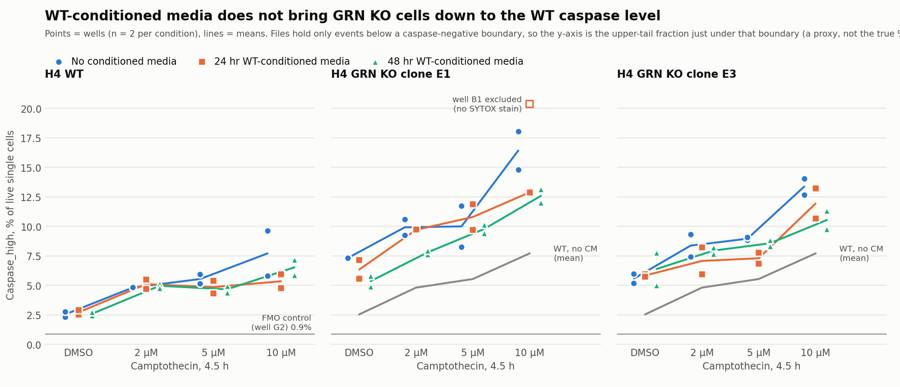
106
agent
Figure is nearly there (fixing an overflowing subtitle); then writing flags, the condition summary, the report and answer.json.
107
tool call · Bash
cd /task; python3 - <<'EOF'
import re
s=open('work/figure.py').read()
s=s.replace("fig.text(0.05,0.905,'Points = wells (n = 2 per condition), lines = means. Files hold only events below a caspase-negative boundary, so the y-axis is the upper-tail fraction just under that boundary (a proxy, not the true % caspase-positive).',fontsize=9,color=INK2,ha='left')",
"fig.text(0.05,0.925,'Points = wells (n = 2 per condition), lines = means. The FCS files hold only events below a caspase-negative boundary, so the y-axis is the fraction of live cells\\nin the top band just under that boundary: a proxy for caspase activity, not the true % caspase-positive.',fontsize=9.5,color=INK2,ha='left',va='top',linespacing=1.4)")
s=s.replace("bbox_to_anchor=(0.045,0.875)","bbox_to_anchor=(0.045,0.86)").replace("top=0.78","top=0.74").replace("figsize=(13,5.6)","figsize=(13,6)")
s=s.replace("ax.scatter([xs[i]]*len(v),v,s=52,","ax.scatter([xs[i]]*len(v),v,s=(75 if mk=='^' else 52),")
s=s.replace("axs[0].set_ylim(0,22)","axs[0].set_ylim(0,22); axs[0].set_yticks([0,5,10,15,20])")
open('work/figure.py','w').write(s)
EOF
python3 work/figure.py108
tool call · Read
{
"file_path": "/task/outputs/figure.png"
}109
tool output
(Bash completed with no output)
110
tool output
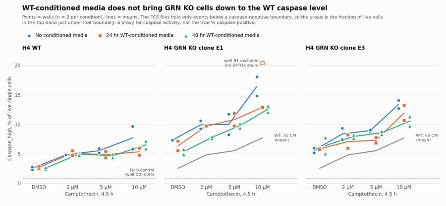
112
tool call · Bash
cd /task; python3 - <<'EOF'
import pandas as pd, numpy as np
from scipy import stats
d=pd.read_csv('work/p13.csv').set_index('well'); lay=pd.read_csv('inputs/plate_layout.csv').set_index('well')
d=d.join(lay[['cell_line','camptothecin','conditioned_media']]); d['row']=[i[0] for i in d.index]
d['cmx']=d.conditioned_media.str[:4]
p=d[(d.row!='G')&(d.index!='B1')]
for m in ['k0.6','k0.7','k0.8','T350','T400','T450','bl1med']:
out=[m]
for lines in (['E1','E3'],['WT']):
q=p[p.cell_line.isin(lines)]
for c in ['24hr','48hr']:
a=q[q.cmx==c].set_index(['row','camptothecin'])[m]; b=q[q.cmx=='No c'].set_index(['row','camptothecin'])[m]
idx=[i for i in a.index if i in b.index]; dd=a.loc[idx]-b.loc[idx]
out.append(f"{'KO' if lines[0]=='E1' else 'WT'} {c}: {dd.mean():+.2f} (p={stats.ttest_1samp(dd,0).pvalue:.3f}; base {b.loc[idx].mean():.1f})")
g=p[p.camptothecin=='DMSO'].groupby(['cell_line','cmx'])[m].mean()
out.append(f"DMSO noCM WT {g['WT','No c']:.1f} E1 {g['E1','No c']:.1f} E3 {g['E3','No c']:.1f}; E1 24h {g['E1','24hr']:.1f} 48h {g['E1','48hr']:.1f}; E3 24h {g['E3','24hr']:.1f} 48h {g['E3','48hr']:.1f}")
g=p[p.cmx=='No c'].groupby(['cell_line','camptothecin'])[m].mean(); out.append(f"WT 10uM noCM {g['WT','10uM']:.1f}")
print(' | '.join(out))
EOF113
tool output
k0.6 | KO 24hr: -1.51 (p=0.075; base 29.1) | KO 48hr: -2.16 (p=0.087; base 30.1) | WT 24hr: -1.82 (p=0.107; base 17.4) | WT 48hr: -1.17 (p=0.130; base 17.4) | DMSO noCM WT 11.1 E1 26.0 E3 20.6; E1 24h 24.5 48h 22.0; E3 24h 20.5 48h 21.6 | WT 10uM noCM 22.5 k0.7 | KO 24hr: -1.19 (p=0.068; base 17.4) | KO 48hr: -1.85 (p=0.051; base 18.2) | WT 24hr: -1.20 (p=0.152; base 9.8) | WT 48hr: -0.76 (p=0.184; base 9.8) | DMSO noCM WT 5.5 E1 14.5 E3 11.3; E1 24h 13.1 48h 12.0; E3 24h 11.2 48h 12.0 | WT 10uM noCM 13.7 k0.8 | KO 24hr: -0.72 (p=0.051; base 9.5) | KO 48hr: -1.37 (p=0.011; base 10.0) | WT 24hr: -0.64 (p=0.223; base 5.2) | WT 48hr: -0.46 (p=0.199; base 5.2) | DMSO noCM WT 2.5 E1 7.3 E3 5.6; E1 24h 6.3 48h 5.4; E3 24h 5.8 48h 6.4 | WT 10uM noCM 7.7 T350 | KO 24hr: -2.39 (p=0.002; base 24.7) | KO 48hr: -3.84 (p=0.002; base 25.3) | WT 24hr: -1.17 (p=0.126; base 9.7) | WT 48hr: -0.96 (p=0.097; base 9.7) | DMSO noCM WT 5.7 E1 21.9 E3 19.5; E1 24h 20.3 48h 16.1; E3 24h 19.9 48h 21.1 | WT 10uM noCM 13.2 T400 | KO 24hr: -1.67 (p=0.003; base 15.4) | KO 48hr: -3.00 (p=0.001; base 15.8) | WT 24hr: -0.57 (p=0.159; base 5.1) | WT 48hr: -0.55 (p=0.088; base 5.1) | DMSO noCM WT 2.9 E1 13.1 E3 11.9; E1 24h 12.0 48h 8.9; E3 24h 12.6 48h 13.4 | WT 10uM noCM 7.2 T450 | KO 24hr: -1.09 (p=0.003; base 8.9) | KO 48hr: -1.83 (p=0.006; base 9.1) | WT 24hr: -0.11 (p=0.485; base 2.3) | WT 48hr: -0.21 (p=0.174; base 2.3) | DMSO noCM WT 1.3 E1 7.3 E3 7.3; E1 24h 6.4 48h 4.3; E3 24h 7.8 48h 8.7 | WT 10uM noCM 3.2 bl1med | KO 24hr: -7.97 (p=0.007; base 256.8) | KO 48hr: -11.38 (p=0.004; base 259.3) | WT 24hr: -8.75 (p=0.054; base 186.6) | WT 48hr: -6.62 (p=0.043; base 186.6) | DMSO noCM WT 165.0 E1 251.5 E3 234.0; E1 24h 249.5 48h 235.5; E3 24h 233.0 48h 239.0 | WT 10uM noCM 202.0
115
tool call · Bash
cd /task; cat > work/deliver.py <<'EOF'
import sys; sys.path.insert(0,'/task/work')
import numpy as np, pandas as pd, json
from load import get
OUT='/task/outputs/'
lay=pd.read_csv('/task/inputs/plate_layout.csv')
w=pd.read_csv('/task/work/well_table.csv',index_col=0)
# ---------- flags
p1={}; hi={}
for wl in lay.well:
d=get(wl); p1[wl]=np.percentile(d['BL2-A'],1); hi[wl]=100*(d['BL2-A']>10000).mean()
w['bl2_p1']=pd.Series(p1); w['bl2_hi']=pd.Series(hi); w['pct_sytox']=100*w.SYTOX_pos/w.Singlets
stained=[x for x in lay.well if x not in ('G1','G3','B1')]
e1_10=[x for x in ['B5','B9','E1','E5','E9']]
flags={}
flags['B1']=('other',f"Dead-cell stain appears to be missing: BL2-A 1st percentile {p1['B1']:.0f} (unstained G1 {p1['G1']:.0f}, caspase-only G3 {p1['G3']:.0f}; all other SYTOX-stained wells {max(p1[x] for x in stained):.0f} to {min(p1[x] for x in stained):.0f}); {hi['B1']:.2f}% of events with BL2-A > 10000 (other stained wells {min(hi[x] for x in stained):.2f}-{max(hi[x] for x in stained):.2f}%); SYTOX_pos {int(w.loc['B1','SYTOX_pos'])} of {int(w.loc['B1','Singlets'])} singlets ({w.loc['B1','pct_sytox']:.2f}%) vs {min(w.loc[x,'pct_sytox'] for x in e1_10):.1f}-{max(w.loc[x,'pct_sytox'] for x in e1_10):.1f}% in the other five KO-E1 10uM wells. Dead cells cannot be removed so Live is invalid and Caspase_high is inflated ({w.loc['B1','pct_casp']:.1f}% vs {w.loc['E1','pct_casp']:.1f}% in replicate well E1).",'exclude')
d=get('E10'); h,_=np.histogram(d['Time'],bins=np.arange(0,17.01,0.5))
flags['E10']=('other',f"Irregular start of acquisition and atypical scatter: {h[0]} events in the first 0.5 s and {h[:2].sum()} in the first 1.0 s (run median {np.median(h[2:-2]):.0f} per 0.5 s; first event at {d['Time'].min():.2f} s vs <=0.03 s in all other wells); median FSC-A of scatter-gated cells ~456000 vs 330000-366000 in the other KO-E1 camptothecin wells of row E; Caspase_high {w.loc['E10','pct_casp']:.2f}% vs {w.loc['B10','pct_casp']:.2f}% in replicate B10. Kept; conclusions unchanged if dropped.",'keep_with_note')
for wl in w.index:
if wl in flags: continue
if w.loc[wl,'Live']<1100:
n=int(w.loc[wl,'Live']); k=int(w.loc[wl,'Caspase_high']); pc=100*k/n; se=100*np.sqrt(k/n*(1-k/n)/n)
flags[wl]=('too_few_events',f"Only {n} live single cells from {int(w.loc[wl,'all_events'])} events ({w.loc[wl,'pct_cells']:.0f}% of events pass the Cells gate; 10uM camptothecin KO well); Caspase_high rests on {k} events ({pc:.1f}% +/- {1.96*se:.1f} points binomial 95% CI). Usable but imprecise.",'keep_with_note')
rows=[]
for _,r in lay.iterrows():
it,ev,de=flags.get(r.well,('none','','keep')); rows.append(dict(file=r.file,well=r.well,issue_type=it,evidence=ev,decision=de))
fl=pd.DataFrame(rows); fl.to_csv(OUT+'flags.csv',index=False)
print(fl[fl.issue_type!='none'].to_string())
excl=fl[fl.decision=='exclude'].well.tolist()
# ---------- condition summary
cmn={'24hr CM':'24hrCM','48hr CM':'48hrCM','no CM':'noCM'}; ln={'WT':'WT','E1':'KO_E1','E3':'KO_E3'}
def cname(r):
if r.name=='G1': return 'CTRL_WT_unstained'
if r.name=='G2': return 'CTRL_WT_SYTOX_only_FMO'
if r.name=='G3': return 'CTRL_WT_caspase_only'
if r.name=='G4': return 'CTRL_KO_E1_untreated_stained'
if r.name=='G5': return 'CTRL_KO_E3_untreated_stained'
if r.name=='G6': return 'CTRL_WT_untreated_stained'
return f"{ln[r.cell_line]}_{r.camptothecin}_{cmn[r.cm]}"
w['condition']=w.apply(cname,axis=1)
order=[]
for l in ['WT','KO_E1','KO_E3']:
for d_ in ['DMSO','2uM','5uM','10uM']:
for c in ['noCM','24hrCM','48hrCM']: order.append(f'{l}_{d_}_{c}')
order+=['CTRL_WT_unstained','CTRL_WT_SYTOX_only_FMO','CTRL_WT_caspase_only','CTRL_WT_untreated_stained','CTRL_KO_E1_untreated_stained','CTRL_KO_E3_untreated_stained']
rows=[]
for c in order:
q=w[(w.condition==c)&(~w.index.isin(excl))]
v=q.pct_casp.values
rows.append(dict(condition=c,wells=';'.join(q.index),n_wells_used=len(q),mean=round(v.mean(),3),sd=(round(v.std(ddof=1),3) if len(v)>1 else ''),
metric_definition='100 x count(Caspase_high) / count(Live) per well (percent of live single cells in the Caspase_high gate); mean and sample SD across the listed wells',normalisation_applied='none'))
cs=pd.DataFrame(rows); cs.to_csv(OUT+'condition_summary.csv',index=False)
print(cs[['condition','wells','n_wells_used','mean','sd']].to_string())
w.to_csv('/task/work/well_table2.csv')
EOF
python3 work/deliver.py116
tool output
file well issue_type evidence decision
12 Caspase-assay-2-mlk(1)_caspase_Group_B1.fcs B1 other Dead-cell stain appears to be missing: BL2-A 1st percentile -117 (unstained G1 -51, caspase-only G3 -57; all other SYTOX-stained wells -511 to -1226); 0.01% of events with BL2-A > 10000 (other stained wells 0.20-9.48%); SYTOX_pos 2 of 3811 singlets (0.05%) vs 7.3-22.2% in the other five KO-E1 10uM wells. Dead cells cannot be removed so Live is invalid and Caspase_high is inflated (20.4% vs 12.9% in replicate well E1). exclude
20 Caspase-assay-2-mlk(1)_caspase_Group_B9.fcs B9 too_few_events Only 1002 live single cells from 3505 events (38% of events pass the Cells gate; 10uM camptothecin KO well); Caspase_high rests on 181 events (18.1% +/- 2.4 points binomial 95% CI). Usable but imprecise. keep_with_note
28 Caspase-assay-2-mlk(1)_caspase_Group_C5.fcs C5 too_few_events Only 786 live single cells from 3151 events (38% of events pass the Cells gate; 10uM camptothecin KO well); Caspase_high rests on 89 events (11.3% +/- 2.2 points binomial 95% CI). Usable but imprecise. keep_with_note
56 Caspase-assay-2-mlk(1)_caspase_Group_E9.fcs E9 too_few_events Only 858 live single cells from 4147 events (27% of events pass the Cells gate; 10uM camptothecin KO well); Caspase_high rests on 127 events (14.8% +/- 2.4 points binomial 95% CI). Usable but imprecise. keep_with_note
57 Caspase-assay-2-mlk(1)_caspase_Group_E10.fcs E10 other Irregular start of acquisition and atypical scatter: 0 events in the first 0.5 s and 15 in the first 1.0 s (run median 172 per 0.5 s; first event at 0.54 s vs <=0.03 s in all other wells); median FSC-A of scatter-gated cells ~456000 vs 330000-366000 in the other KO-E1 camptothecin wells of row E; Caspase_high 8.26% vs 11.74% in replicate B10. Kept; conclusions unchanged if dropped. keep_with_note
64 Caspase-assay-2-mlk(1)_caspase_Group_F5.fcs F5 too_few_events Only 973 live single cells from 3184 events (36% of events pass the Cells gate; 10uM camptothecin KO well); Caspase_high rests on 95 events (9.8% +/- 1.9 points binomial 95% CI). Usable but imprecise. keep_with_note
68 Caspase-assay-2-mlk(1)_caspase_Group_F9.fcs F9 too_few_events Only 953 live single cells from 3608 events (30% of events pass the Cells gate; 10uM camptothecin KO well); Caspase_high rests on 134 events (14.1% +/- 2.2 points binomial 95% CI). Usable but imprecise. keep_with_note
condition wells n_wells_used mean sd
0 WT_DMSO_noCM A12;D12 2 2.544 0.321
1 WT_DMSO_24hrCM A4;D4 2 2.723 0.267
2 WT_DMSO_48hrCM A8;D8 2 2.601 0.179
3 WT_2uM_noCM A11;D11 2 4.813 0.027
4 WT_2uM_24hrCM A3;D3 2 5.105 0.553
5 WT_2uM_48hrCM A7;D7 2 4.966 0.278
6 WT_5uM_noCM A10;D10 2 5.540 0.555
7 WT_5uM_24hrCM A2;D2 2 4.857 0.778
8 WT_5uM_48hrCM A6;D6 2 4.665 0.406
9 WT_10uM_noCM A9;D9 2 7.710 2.716
10 WT_10uM_24hrCM A1;D1 2 5.348 0.833
11 WT_10uM_48hrCM A5;D5 2 6.532 0.942
12 KO_E1_DMSO_noCM B12;E12 2 7.326 0.027
13 KO_E1_DMSO_24hrCM B4;E4 2 6.346 1.122
14 KO_E1_DMSO_48hrCM B8;E8 2 5.358 0.616
15 KO_E1_2uM_noCM B11;E11 2 9.921 0.968
16 KO_E1_2uM_24hrCM B3;E3 2 9.706 0.029
17 KO_E1_2uM_48hrCM B7;E7 2 7.791 0.224
18 KO_E1_5uM_noCM B10;E10 2 10.001 2.46
19 KO_E1_5uM_24hrCM B2;E2 2 10.799 1.529
20 KO_E1_5uM_48hrCM B6;E6 2 9.782 0.508
21 KO_E1_10uM_noCM B9;E9 2 16.433 2.307
22 KO_E1_10uM_24hrCM E1 1 12.887
23 KO_E1_10uM_48hrCM B5;E5 2 12.592 0.798
24 KO_E3_DMSO_noCM C12;F12 2 5.572 0.566
25 KO_E3_DMSO_24hrCM C4;F4 2 5.838 0.139
26
… [1,117 more characters not shown]118
tool call · Bash
cd /task; python3 - <<'EOF'
import pandas as pd, numpy as np
from scipy import stats
w=pd.read_csv('work/well_table2.csv',index_col=0)
p=w[w.row!='G']
def paired(lines,cmx,excl=('B1',),metric='pct_casp'):
q=p[p.cell_line.isin(lines)&~p.index.isin(excl)]
a=q[q.cm==cmx].set_index(['row','camptothecin'])[metric]; b=q[q.cm=='no CM'].set_index(['row','camptothecin'])[metric]
idx=[i for i in a.index if i in b.index]; d=a.loc[idx]-b.loc[idx]
ci=stats.t.interval(0.95,len(d)-1,loc=d.mean(),scale=stats.sem(d))
return f"n={len(d)} diff={d.mean():+.2f} CI({ci[0]:.2f},{ci[1]:.2f}) p={stats.ttest_1samp(d,0).pvalue:.3f} base={b.loc[idx].mean():.2f} rel={100*d.mean()/b.loc[idx].mean():.0f}%"
for lines in (['E1','E3'],['WT']):
for c in ['24hr CM','48hr CM']:
print(lines,c,paired(lines,c),'| excl E10:',paired(lines,c,excl=('B1','E10')))
print('KO noCM mean all doses',p[p.cell_line.isin(['E1','E3'])&(p.cm=='no CM')].pct_casp.mean(),'WT',p[(p.cell_line=='WT')&(p.cm=='no CM')].pct_casp.mean())
for m in ['pct_cells','pct_sytox','Live']:
print(m); print(p[p.camptothecin=='DMSO'].pivot_table(index='cell_line',columns='cm',values=m,aggfunc=lambda x: '/'.join(f'{v:.1f}' for v in x)))
print(p.groupby(['cell_line','camptothecin']).pct_cells.agg(['min','max']).round(0))
print(p.groupby(['camptothecin','cm']).coinc_pct.agg(['mean','min','max']).round(1))
print(w.loc[['G1','G2','G3','G4','G5','G6'],['coinc_pct','pct_sytox','pct_casp','Live']].round(2))
EOF119
tool output
['E1', 'E3'] 24hr CM n=15 diff=-0.73 CI(-1.46,-0.00) p=0.049 base=9.46 rel=-8% | excl E10: n=14 diff=-0.89 CI(-1.58,-0.19) p=0.017 base=9.54 rel=-9%
['E1', 'E3'] 48hr CM n=16 diff=-1.37 CI(-2.38,-0.37) p=0.011 base=9.99 rel=-14% | excl E10: n=15 diff=-1.59 CI(-2.55,-0.63) p=0.003 base=10.11 rel=-16%
['WT'] 24hr CM n=8 diff=-0.64 CI(-1.78,0.49) p=0.223 base=5.15 rel=-12% | excl E10: n=8 diff=-0.64 CI(-1.78,0.49) p=0.223 base=5.15 rel=-12%
['WT'] 48hr CM n=8 diff=-0.46 CI(-1.23,0.31) p=0.200 base=5.15 rel=-9% | excl E10: n=8 diff=-0.46 CI(-1.23,0.31) p=0.200 base=5.15 rel=-9%
KO noCM mean all doses 9.993772734763422 WT 5.151697989054053
pct_cells
cm 24hr CM 48hr CM no CM
cell_line
E1 83.0/81.8 77.2/73.4 82.6/83.8
E3 63.2/74.8 68.9/70.7 77.4/73.1
WT 92.5/93.1 91.6/92.1 92.2/91.3
pct_sytox
cm 24hr CM 48hr CM no CM
cell_line
E1 4.0/8.4 9.1/12.2 6.2/5.1
E3 15.6/10.0 16.1/9.6 10.9/9.7
WT 2.6/4.0 2.7/6.3 3.9/3.9
Live
cm 24hr CM 48hr CM no CM
cell_line
E1 9437.0/7423.0 7679.0/5023.0 7052.0/8389.0
E3 4835.0/7126.0 4670.0/6697.0 8895.0/7585.0
WT 30222.0/21120.0 25859.0/19102.0 26669.0/21257.0
min max
cell_line camptothecin
E1 10uM 26.0 42.0
2uM 38.0 46.0
5uM 42.0 53.0
DMSO 73.0 84.0
E3 10uM 30.0 47.0
2uM 50.0 57.0
5uM 48.0 55.0
DMSO 63.0 77.0
WT 10uM 63.0 69.0
2uM 56.0 64.0
5uM 64.0 69.0
DMSO 91.0 93.0
mean min max
camptothecin cm
10uM 24hr CM 5.0 4.2 6.4
48hr CM 6.2 4.9 9.6
no CM 8.9 5.1 11.7
2uM 24hr CM 3.4 2.6 4.0
48hr CM 3.5 2.8 4.0
no CM 4.1 2.6 5.2
5uM 24hr CM 3.7 2.9 4.6
48hr CM 3.8 3.0 4.3
no CM 4.5 3.2 6.0
DMSO 24hr CM 2.9 2.1 4.5
48hr CM 3.4 2.4 4.3
no CM 3.5 2.2 4.2
coinc_pct pct_sytox pct_casp Live
well
G1 2.61 0.00 0.72 30614
G2 2.41 10.02 0.89 22543
G3 2.52 0.00 2.20 24543
G4 1.67 3.12 7.51 6395
G5 3.21 7.43 6.54 7848
G6 1.96 1.18 2.48 14461121
agent
All numbers are in hand; writing `answer.json` and `report.md` now, then a final consistency check across the deliverables.
122
tool call · Bash
cd /task; cat > work/answer.py <<'EOF'
import json, pandas as pd
cs=pd.read_csv('/task/outputs/condition_summary.csv').set_index('condition')
m=lambda c: cs.loc[c,'mean']
def comp(label,a,b,direction,conf,extra=''):
d=m(a)-m(b)
mag=f"{m(a):.2f}% vs {m(b):.2f}% Caspase_high of live cells: {d:+.2f} percentage points ({100*d/m(b):+.0f}%; ratio {m(a)/m(b):.2f}x)"
if extra: mag+='; '+extra
return dict(comparison=label,a=a,b=b,direction=direction,magnitude=mag,confidence=conf)
comps=[
comp('KO clone E1 baseline: 24 hr WT-conditioned media vs no conditioned media','KO_E1_DMSO_24hrCM','KO_E1_DMSO_noCM','no_clear_change','low','replicate wells overlap (5.55 and 7.14 vs 7.35 and 7.31)'),
comp('KO clone E1 baseline: 48 hr WT-conditioned media vs no conditioned media','KO_E1_DMSO_48hrCM','KO_E1_DMSO_noCM','decrease','low','n=2 wells each; debris and SYTOX-positive fractions rose in the same wells so this is not a clean rescue'),
comp('KO clone E3 baseline: 24 hr WT-conditioned media vs no conditioned media','KO_E3_DMSO_24hrCM','KO_E3_DMSO_noCM','no_clear_change','medium'),
comp('KO clone E3 baseline: 48 hr WT-conditioned media vs no conditioned media','KO_E3_DMSO_48hrCM','KO_E3_DMSO_noCM','no_clear_change','low','replicates 5.01 and 7.76'),
comp('KO phenotype, clone E1 vs WT (DMSO, no conditioned media)','KO_E1_DMSO_noCM','WT_DMSO_noCM','increase','medium','reproducible between wells but not attributable to caspase alone: no KO unstained/FMO control and KO cells are larger and more autofluorescent'),
comp('KO phenotype, clone E3 vs WT (DMSO, no conditioned media)','KO_E3_DMSO_noCM','WT_DMSO_noCM','increase','medium','same autofluorescence caveat as clone E1'),
comp('Best case after treatment, clone E1 + 48 hr conditioned media vs untreated WT','KO_E1_DMSO_48hrCM','WT_DMSO_noCM','increase','medium','KO still about twice WT'),
comp('After treatment, clone E3 + 24 hr conditioned media vs untreated WT','KO_E3_DMSO_24hrCM','WT_DMSO_noCM','increase','medium','KO still about twice WT'),
comp('Assay response to camptothecin in WT (10 uM vs DMSO, no conditioned media)','WT_10uM_noCM','WT_DMSO_noCM','increase','medium','replicates 9.63 and 5.79 vs 2.32 and 2.77; no separate positive population'),
comp('KO clone E1 under 10 uM camptothecin: 48 hr conditioned media vs none','KO_E1_10uM_48hrCM','KO_E1_10uM_noCM','decrease','low','n=2 each; a similar-direction shift is seen in WT'),
comp('KO clone E3 under 10 uM camptothecin: 48 hr conditioned media vs none','KO_E3_10uM_48hrCM','KO_E3_10uM_noCM','decrease','low','n=2 each; a similar-direction shift is seen in WT'),
comp('WT under 10 uM camptothecin: 24 hr conditioned media vs none (specificity check)','WT_10uM_24hrCM','WT_10uM_noCM','no_clear_change','low','same direction as in KO, so the small conditioned-media shift is not KO-specific'),
]
ans=dict(
question="Can conditioned media from WT H4 cells (24 hr or 48 hr collection, a source of secreted progranulin) restore wild-type levels of caspase-3/7 activity in H4 GRN KO cells (clones E1 and E3), with or without camptothecin challenge?",
comparisons=comps,
overall_answer="no: neither 24 hr nor 48 hr WT-conditioned media brought the KO caspase readout down to WT. With DMSO, KO stayed 2.1-2.5x the untreated WT value under conditioned media (2.2-2.9x without). Pooled over both clones and all doses the shift was -0.7 points (24 hr; 95% CI -1.5 to 0.0) and -1.4 points (48 hr; -2.4 to -0.4) against a KO-to-WT gap of about 4.8 points, and WT wells moved by a similar amount, so it is not a KO-specific rescue. This is a weak negative: the files contain only events below a caspase-negative boundary, so true caspase-positive cells could not be counted.",
assay_verdict="needs_optimisation",
next_action="optimise_reagent_or_setting",
next_change=dict(
what="Capture and control of the caspase (BL1, CellEvent Caspase-3/7 Green) channel",
**{"from":"FCS files that contain only events inside a polygon on FSC-A vs BL1-A (BL1-A between 4 and about 317*exp(1.376e-6*FSC-A), i.e. at most 320-830 units at BL1 225 V), so no caspase-positive population is present; stain controls made from untreated WT cells only"},
to="Export all acquired events ungated from the saved Attune experiment (no wet work) and re-analyse; for any re-run, set BL1 voltage on a camptothecin- or staurosporine-treated caspase-only control so negative and positive populations are both on scale and separated, and add unstained and SYTOX-only (FMO) controls for WT, KO E1 and KO E3",
why="Caspase-bright events are missing from every file (SYTOX-bright dead cells are 7.5% of cells in the SYTOX-only control but 0.2-2% in caspase-stained WT wells, and the remaining ones pile up against the cut-off), so % caspase-positive cannot be measured, and without per-line controls the 2-3x KO-vs-WT difference cannot be separated from the higher autofluorescence and size of KO cells. Until the readout counts real positives, no change to the rescue treatment can be interpreted."),
excluded_wells=["B1"],
caveats=[
"All 78 files are truncated: no event lies above BL1-A = ~317*exp(1.376e-6*FSC-A) (maximum 830) or below BL1-A = 4. The boundary is a straight line on a log BL1-A vs linear FSC-A plot, which is the signature of a gate applied before export. Caspase_high is therefore the upper-tail fraction just below that boundary, a proxy that underestimates true positives and uses a truncated denominator.",
"No separate caspase-positive population exists in any well, including 10 uM camptothecin; the response to camptothecin is a 2-3x change in the tail fraction with no dose-dependence between 2 and 5 uM.",
"KO vs WT is confounded: all stain controls are WT, KO cells are larger (median FSC-A ~380-400k vs ~290-300k) and about 2x brighter in BL2 autofluorescence, and in unstained WT cells BL1-A rises with autofluorescence.",
"Conditioned-media condition is confounded with plate position (columns 1-4, 5-8, 9-12), and the no-conditioned-med
… [983 more characters not shown]123
tool output
KO_E1_DMSO_24hrCM | no_clear_change | 6.35% vs 7.33% Caspase_high of live cells: -0.98 percentage points (-13%; ratio 0.87x); replicate wells overlap (5.55 and 7.14 vs 7.35 and 7.31) KO_E1_DMSO_48hrCM | decrease | 5.36% vs 7.33% Caspase_high of live cells: -1.97 percentage points (-27%; ratio 0.73x); n=2 wells each; debris and SYTOX-positive fractions rose in the same wells so this is not a clean rescue KO_E3_DMSO_24hrCM | no_clear_change | 5.84% vs 5.57% Caspase_high of live cells: +0.27 percentage points (+5%; ratio 1.05x) KO_E3_DMSO_48hrCM | no_clear_change | 6.39% vs 5.57% Caspase_high of live cells: +0.82 percentage points (+15%; ratio 1.15x); replicates 5.01 and 7.76 KO_E1_DMSO_noCM | increase | 7.33% vs 2.54% Caspase_high of live cells: +4.78 percentage points (+188%; ratio 2.88x); reproducible between wells but not attributable to caspase alone: no KO unstained/FMO control and KO cells are larger and more autofluorescent KO_E3_DMSO_noCM | increase | 5.57% vs 2.54% Caspase_high of live cells: +3.03 percentage points (+119%; ratio 2.19x); same autofluorescence caveat as clone E1 KO_E1_DMSO_48hrCM | increase | 5.36% vs 2.54% Caspase_high of live cells: +2.81 percentage points (+111%; ratio 2.11x); KO still about twice WT KO_E3_DMSO_24hrCM | increase | 5.84% vs 2.54% Caspase_high of live cells: +3.29 percentage points (+129%; ratio 2.29x); KO still about twice WT WT_10uM_noCM | increase | 7.71% vs 2.54% Caspase_high of live cells: +5.17 percentage points (+203%; ratio 3.03x); replicates 9.63 and 5.79 vs 2.32 and 2.77; no separate positive population KO_E1_10uM_48hrCM | decrease | 12.59% vs 16.43% Caspase_high of live cells: -3.84 percentage points (-23%; ratio 0.77x); n=2 each; a similar-direction shift is seen in WT KO_E3_10uM_48hrCM | decrease | 10.54% vs 13.37% Caspase_high of live cells: -2.83 percentage points (-21%; ratio 0.79x); n=2 each; a similar-direction shift is seen in WT WT_10uM_24hrCM | no_clear_change | 5.35% vs 7.71% Caspase_high of live cells: -2.36 percentage points (-31%; ratio 0.69x); same direction as in KO, so the small conditioned-media shift is not KO-specific
125
tool call · Write
{
"file_path": "/task/outputs/report.md",
"content": "# Conditioned-media caspase plate, H4 WT vs GRN KO (acquired 16-Dec-2022)\n\n**Bottom line.** WT-conditioned media did not bring the caspase readout of GRN KO cells down to the WT level: KO stayed about 2.1\u20132.5\u00d7 WT under either conditioned media. The answer is a weak \"no\", because every FCS file is missing its caspase-bright events, so true caspase-positive cells could not be counted. Fix the readout before changing the rescue treatment.\n\n## Question\n\nCan conditioned media (CM) from WT H4 cells, collected after 24 hr or 48 hr, restore wild-type levels of caspase-3/7 activity in H4 GRN KO cells (clones E1 and E3), at baseline (DMSO) and after 4.5 h camptothecin (2, 5, 10 \u00b5M)?\n\nA \"yes\" needs three things: a readout that counts caspase-positive cells, KO above WT without CM, and KO + CM moving down to WT.\n\n## Methods\n\n**Channels.** The labels in the files are out of date (\"AAV-GFP\", \"AAdvanced livedead\"). From the plan's reagents and cytometer settings:\n\n| Detector | Measured | Voltage |\n|---|---|---|\n| BL1 | CellEvent Caspase-3/7 Green | 225 |\n| BL2 | SYTOX AADvanced dead-cell stain | 350 |\n\n**Compensation.** None (`uncompensated`). The spillover matrix in the files is identity. In the single-stain controls, SYTOX-bright cells in the SYTOX-only well (G2) have the same BL1-A as SYTOX-negative cells (median 155 vs 142), and the caspase-only well (G3) has the same BL2-A as unstained (median 486 vs 422).\n\n**Gates** (one FlowKit strategy for all 78 files, raw linear values, saved in `gates.xml`; `counts.csv` is produced from the reloaded file).\n\n| Population | Role | Parent | Definition |\n|---|---|---|---|\n| `Cells` | cells | all events | Polygon on FSC-A vs SSC-A; removes debris (FSC-A < 150,000 or SSC-A < 60,000) |\n| `Singlets` | singlets | `Cells` | Polygon on FSC-A vs FSC-H; lower edge FSC-H = 0.39 \u00d7 FSC-A, at the valley between singlets (ratio \u2248 0.5) and doublets (\u2248 0.3) |\n| `Live` | live | `Singlets` | BL2-A < 4,000. Wells without SYTOX (G1, G3) have 99.99% of cells below this |\n| `SYTOX_pos` | other | `Singlets` | BL2-A \u2265 4,000 |\n| `Caspase_high` | marker_positive | `Live` | Polygon on FSC-A vs BL1-A: BL1-A above 0.80 \u00d7 the file ceiling (see Results), i.e. above 254 \u00d7 exp(1.376e-6 \u00d7 FSC-A). The 0.80 factor puts 0.89% of the SYTOX-only FMO control (G2) and 0.72% of the unstained control (G1) in the gate |\n\nThe `Caspase_high` edge is sloped because BL1 background rises with cell size, and because the cut-off already present in the files has the same slope.\n\n**Metric.** % `Caspase_high` of `Live`, per well; mean and SD over the two replicate wells per condition (rows A/D = WT, B/E = KO E1, C/F = KO E3). No normalisation. CM effects were also tested as paired differences (CM well minus the no-CM well in the same plate row at the same dose).\n\n**QC.** Per well I checked event rate over time, total events, acquisition settings in the headers (identical in all files), scatter profile against the plate map, and the BL2 profile for presence of the dead-cell stain.\n\n## Results\n\n### 1. The files do not contain caspase-bright events\n\n- Across all 1,150,506 events, no event has BL1-A above 317 \u00d7 exp(1.376e-6 \u00d7 FSC-A) (320 at the smallest events, 830 at the largest), and no event is below BL1-A = 4. The 99.99th percentile of BL1-A sits within 1\u20132 units of the maximum in every FSC-A bin, and event density is flat right up to the edge and then zero.\n- The edge is a straight line on a log BL1-A vs linear FSC-A plot, with a kinked lower edge and a slanted right edge: the shape of a hand-drawn polygon gate. It sits at the top of the unstained population, as a caspase-negative gate would.\n- Events were removed, not just absent. In the SYTOX-only control (G2, no caspase reagent) SYTOX-bright dead cells are 7.5% of cells; in the equivalent fully stained WT well (G6) they are 0.18%, and 0.9\u20132.0% in WT DMSO wells. The SYTOX-positive cells that remain in stained wells pile up against the edge (17\u201343% of them in the top tenth below it, vs 1.2% in G2).\n- The header keyword `#coincidentcount` per retained event is 2.0\u20132.6% in the WT controls but 5\u201312% in the 10 \u00b5M wells without CM, which fits more events having been acquired than are in those files. I do not know how the instrument defines this count, so I treat it as supporting only.\n\nSo `Caspase_high` is the fraction of live cells in the top band just under the cut-off. It tracks caspase signal (it responds to the caspase reagent and to camptothecin) but underestimates true positives. No well shows a separate positive population.\n\n### 2. What the readout does show\n\nMean % `Caspase_high` of `Live` (two wells each unless noted):\n\n| Line | Camptothecin | No CM | 24 hr CM | 48 hr CM |\n|---|---|---|---|---|\n| WT | DMSO | 2.54 | 2.72 | 2.60 |\n| WT | 2 \u00b5M | 4.81 | 5.11 | 4.97 |\n| WT | 5 \u00b5M | 5.54 | 4.86 | 4.67 |\n| WT | 10 \u00b5M | 7.71 | 5.35 | 6.53 |\n| KO E1 | DMSO | 7.33 | 6.35 | 5.36 |\n| KO E1 | 2 \u00b5M | 9.92 | 9.71 | 7.79 |\n| KO E1 | 5 \u00b5M | 10.00 | 10.80 | 9.78 |\n| KO E1 | 10 \u00b5M | 16.43 | 12.89 (one well) | 12.59 |\n| KO E3 | DMSO | 5.57 | 5.84 | 6.39 |\n| KO E3 | 2 \u00b5M | 8.37 | 7.07 | 7.95 |\n| KO E3 | 5 \u00b5M | 8.96 | 7.30 | 8.57 |\n| KO E3 | 10 \u00b5M | 13.37 | 11.94 | 10.54 |\n\nControls: unstained WT 0.72%, SYTOX-only WT 0.89%, caspase-only WT 2.20%, fully stained untreated WT 2.48%, KO E1 7.51%, KO E3 6.54%.\n\n- **Camptothecin raises the readout** in every line: WT goes from 2.5% to 4.8\u20137.7% (1.9\u20133.0\u00d7). There is little difference between 2 and 5 \u00b5M.\n- **KO reads higher than WT** without CM: 2.9\u00d7 (E1) and 2.2\u00d7 (E3) with DMSO, and the two replicate wells agree. This cannot be assigned to caspase alone (see Caveats).\n- **CM does not bring KO to WT.** With DMSO, KO + CM is still 2.1\u20132.5\u
… [5,171 more characters not shown]126
tool output
File created successfully at: /task/outputs/report.md (file state is current in your context — no need to Read it back)
127
tool call · Bash
cd /task; python3 - <<'EOF'
import pandas as pd, json, flowkit as fk, numpy as np, warnings, re
warnings.filterwarnings('ignore')
O='/task/outputs/'
lay=pd.read_csv('inputs/plate_layout.csv')
gs=fk.parse_gating_xml(O+'gates.xml'); gids=[g[0] for g in gs.get_gate_ids()]; print('gates',gids)
c=pd.read_csv(O+'counts.csv'); print(list(c.columns), len(c), c.file.nunique())
assert set(c.file)==set(lay.file) and (c.groupby('file').population.nunique()==6).all()
assert set(c.population)-{'all_events'}==set(gids)
print(c.groupby('role').population.unique())
# recheck counts from gates on 6 random files + parents
for f in list(lay.file.sample(6,random_state=1))+[lay.file[12]]:
s=fk.Sample('inputs/raw/'+f); rep=gs.gate_sample(s).report.set_index('gate_name')
sub=c[c.file==f].set_index('population')
assert sub.loc['all_events','count']==s.event_count
for g in gids:
assert sub.loc[g,'count']==rep.loc[g,'count'],(f,g)
par=sub.loc[g,'parent']; assert abs(float(sub.loc[g,'pct_of_parent'])-100*sub.loc[g,'count']/sub.loc[par,'count'])<1e-3
print('counts ok')
fl=pd.read_csv(O+'flags.csv',keep_default_na=False); assert len(fl)==78 and set(fl.well)==set(lay.well)
assert set(fl.issue_type)<= {'none','clog','ran_dry','too_few_events','saturation','bad_control','mislabel','other'}
assert all((fl.issue_type=='none')|(fl.evidence.str.contains(r'\d')))
print(fl.decision.value_counts().to_dict(), list(fl.columns))
cs=pd.read_csv(O+'condition_summary.csv',keep_default_na=False); print(list(cs.columns),len(cs))
excl=set(fl[fl.decision=='exclude'].well)
w=c.pivot(index='well',columns='population',values='count')
for _,r in cs.iterrows():
ws=r.wells.split(';'); assert len(ws)==r.n_wells_used and not (set(ws)&excl) and ',' not in r.condition
v=np.array([100*w.loc[x,'Caspase_high']/w.loc[x,'Live'] for x in ws]); assert abs(v.mean()-float(r['mean']))<1e-3
if len(ws)>1: assert abs(v.std(ddof=1)-float(r.sd))<1e-3
else: assert r.sd==''
assert cs.condition.is_unique
a=json.load(open(O+'answer.json')); assert set(a['excluded_wells'])==excl
for cp in a['comparisons']:
assert cp['a'] in set(cs.condition) and cp['b'] in set(cs.condition)
ma=float(cs.set_index('condition').loc[cp['a'],'mean']); mb=float(cs.set_index('condition').loc[cp['b'],'mean'])
assert (cp['direction']=='increase' and ma>mb) or (cp['direction']=='decrease' and ma<mb) or cp['direction']=='no_clear_change'
print(a['overall_answer'][:4],a['assay_verdict'],a['next_action'],list(a['next_change'].keys()),list(a.keys()))
rep=open(O+'report.md').read(); print(re.findall(r'^## .*$',rep,flags=re.M))
import os; print(sorted(os.listdir(O)))
print(open(O+'counts.csv').read()[:400])
EOF128
tool output
gates ['Cells', 'Singlets', 'Live', 'Caspase_high', 'SYTOX_pos']
['file', 'well', 'population', 'role', 'parent', 'count', 'pct_of_parent'] 468 78
role
cells [Cells]
live [Live]
marker_positive [Caspase_high]
other [all_events, SYTOX_pos]
singlets [Singlets]
Name: population, dtype: object
counts ok
{'keep': 71, 'keep_with_note': 6, 'exclude': 1} ['file', 'well', 'issue_type', 'evidence', 'decision']
['condition', 'wells', 'n_wells_used', 'mean', 'sd', 'metric_definition', 'normalisation_applied'] 42
no: needs_optimisation optimise_reagent_or_setting ['what', 'from', 'to', 'why'] ['question', 'comparisons', 'overall_answer', 'assay_verdict', 'next_action', 'next_change', 'excluded_wells', 'caveats']
['## Question', '## Methods', '## Results', '## Conclusion', '## Caveats', '## Recommendation']
['answer.json', 'condition_summary.csv', 'counts.csv', 'figure.png', 'flags.csv', 'gates.xml', 'report.md']
file,well,population,role,parent,count,pct_of_parent
Caspase-assay-2-mlk(1)_caspase_Group_A1.fcs,A1,all_events,other,none,30920,
Caspase-assay-2-mlk(1)_caspase_Group_A1.fcs,A1,Cells,cells,all_events,20612,66.6624
Caspase-assay-2-mlk(1)_caspase_Group_A1.fcs,A1,Singlets,singlets,Cells,19100,92.6645
Caspase-assay-2-mlk(1)_caspase_Group_A1.fcs,A1,Live,live,Singlets,18242,95.5079
Caspase-assay-2-mlk(1)130
agent
The analysis is complete and all seven deliverables are in `/task/outputs/`; they pass a format and cross-consistency check, and `counts.csv` was regenerated from the reloaded `gates.xml`.
**Answer: no, with low confidence.** Neither 24 hr nor 48 hr WT-conditioned media brought the GRN KO caspase readout down to WT. With DMSO, KO stayed 2.1–2.5× untreated WT under conditioned media (2.2–2.9× without it). The small downward shift with conditioned media (about 1 point on a KO level of about 10%) also appears in WT wells, so it is not a KO-specific rescue.
**The main finding is a data problem.** Every FCS file is missing its caspase-bright events:
- **Cut-off:** no event in any of the 78 files lies above a sloped line in the caspase channel (BL1-A at most 320–830 units, depending on cell size). The line has the shape of a gate applied before export.
- **Evidence events were removed:** dead cells are 7.5% of cells in the SYTOX-only control but only 0.2–2% in caspase-stained WT wells, and the ones that remain pile up against the cut-off.
- **Consequence:** true % caspase-positive cannot be measured. My `Caspase_high` gate is the fraction of live cells in the top band just under the cut-off; it responds to camptothecin (WT 2.5% → 7.7% at 10 µM) but is only a proxy.
**Verdict and next step:** `needs_optimisation` / `optimise_reagent_or_setting`. The first step costs no wet work: re-export all events ungated from the saved Attune experiment and re-run this analysis. Any re-run needs the BL1 voltage set on a treated caspase-only control, and unstained and SYTOX-only controls for each cell line.
**Other things that limit the conclusion:**
- **KO vs WT is not controlled.** All stain controls are WT, and KO cells are larger and about twice as autofluorescent, so the KO-above-WT difference may be partly background.
- **Conditioned media is confounded with plate position.** Each condition occupies its own block of columns, and there is no matched mock or KO-conditioned media.
- **Progranulin in the media was not measured.**
- **Replication is thin.** Two wells per condition, one plate.
**Wells flagged:**
- **B1 excluded:** it has no SYTOX signal, so dead cells cannot be removed. That leaves one well for KO E1, 10 µM, 24 hr media.
- **E10 kept with a note:** delayed start and shifted scatter; conclusions are unchanged without it.
- **B9, C5, E9, F5, F9 kept with a note:** only 786–1,002 live single cells each.
The channel labels in the files are stale; I treated BL1 as CellEvent Caspase-3/7 Green and BL2 as SYTOX AADvanced, per the plan.
Files are in `/task/outputs/`:
- gates.xml
- counts.csv
- flags.csv
- condition_summary.csv
- figure.png
- report.md
- answer.json
final result
The analysis is complete and all seven deliverables are in `/task/outputs/`; they pass a format and cross-consistency check, and `counts.csv` was regenerated from the reloaded `gates.xml`. **Answer: no, with low confidence.** Neither 24 hr nor 48 hr WT-conditioned media brought the GRN KO caspase readout down to WT. With DMSO, KO stayed 2.1–2.5× untreated WT under conditioned media (2.2–2.9× without it). The small downward shift with conditioned media (about 1 point on a KO level of about 10%) also appears in WT wells, so it is not a KO-specific rescue. **The main finding is a data problem.** Every FCS file is missing its caspase-bright events: - **Cut-off:** no event in any of the 78 files lies above a sloped line in the caspase channel (BL1-A at most 320–830 units, depending on cell size). The line has the shape of a gate applied before export. - **Evidence events were removed:** dead cells are 7.5% of cells in the SYTOX-only control but only 0.2–2% in caspase-stained WT wells, and the ones that remain pile up against the cut-off. - **Consequence:** true % caspase-positive cannot be measured. My `Caspase_high` gate is the fraction of live cells in the top band just under the cut-off; it responds to camptothecin (WT 2.5% → 7.7% at 10 µM) but is only a proxy. **Verdict and next step:** `needs_optimisation` / `optimise_reagent_or_setting`. The first step costs no wet work: re-export all events ungated from the saved Attune experiment and re-run this analysis. Any re-run needs the BL1 voltage set on a treated caspase-only control, and unstained and SYTOX-only controls for each cell line. **Other things that limit the conclusion:** - **KO vs WT is not controlled.** All stain controls are WT, and KO cells are larger and about twice as autofluorescent, so the KO-above-WT difference may be partly background. - **Conditioned media is confounded with plate position.** Each condition occupies its own block of columns, and there is no matched mock or KO-conditioned media. - **Progranulin in the media was not measured.** - **Replication is thin.** Two wells per condition, one plate. **Wells flagged:** - **B1 excluded:** it has no SYTOX signal, so dead cells cannot be removed. That leaves one well for KO E1, 10 µM, 24 hr media. - **E10 kept with a note:** delayed start and shifted scatter; conclusions are unchanged without it. - **B9, C5, E9, F5, F9 kept with a note:** only 786–1,002 live single cells each. The channel labels in the files are stale; I treated BL1 as CellEvent Caspase-3/7 Green and BL2 as SYTOX AADvanced, per the plan. Files are in `/task/outputs/`: - gates.xml - counts.csv - flags.csv - condition_summary.csv - figure.png - report.md - answer.json